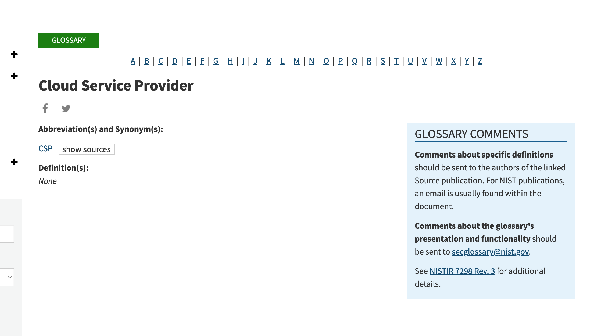
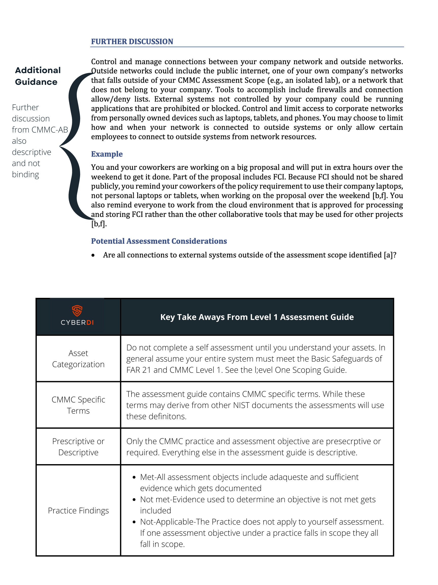
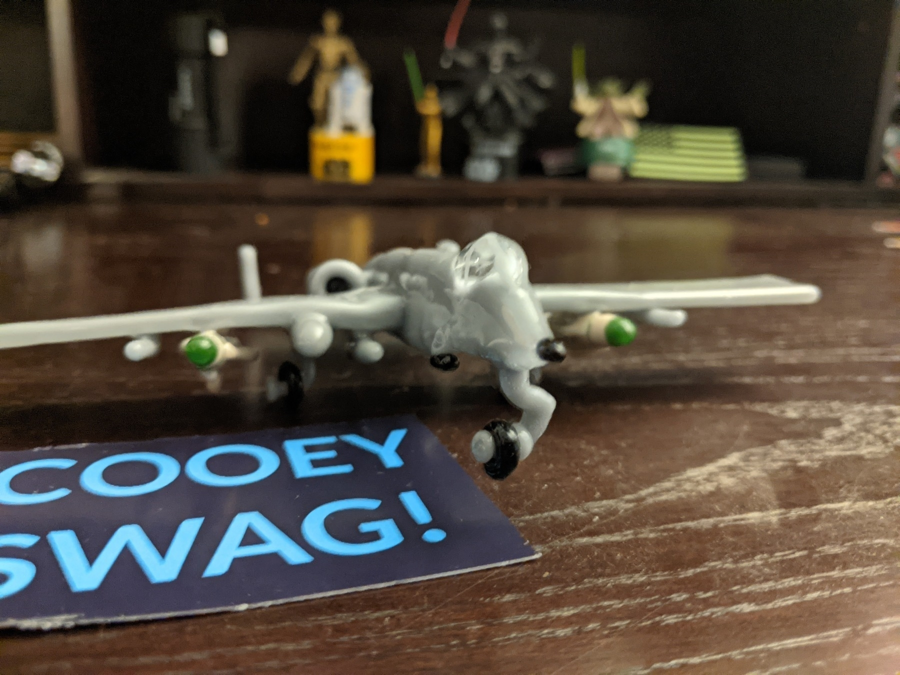

Can you Engineer Culture in your Systems?
As we try to create online communities focused on open learning we have to recognize the troubled history open source has had with diversity, equity, and inclusion. Some bias is implicit due to systematic discrimination. You need to be well off to work for free.
Often though we have seen countless explicit attacks such as Gamergate or even death threats against those doing Open Source Intelligence work to fight right wing extremism online.Before you can even begin to create an online community focused on open learning you need trust.
For many we never engineered safety into the online communities we create and curate. Systems Security Engineering Approach to Culture
Creating a Community as Your Curriculum (Cormier, 2008) takes a systems approach to engineering trustworthiness into the spaces you design. You can also think about your classroom culture, and the overall culture of your school as a system. in fact, our educational system is nested within this much larger system that many parents and students do not rightfully trust. By choosing a framework to develop an innovate and healthy online community you in turn reduce the threats to the members of your group that will do the learning work You also help build a better world.

Once a framework is chosen systems engineering requires a set of iterative steps.
Collect baseline data
Identify goal you will engineer
Acknowledge and identify blockers and variables of interest
Develop a solution to address the goal without negatively impacting other systems
Monitor the progress. Evaluate variable of interest.
Iterate on the process
When engineering for community we have to everyone recognize the cultural importance of safety. When trying to increase the overall hygiene of online communities you curate ,and thus engineer better trust in your system, you must first focus on the trust of potential and existing community members
Dr. Kimberly Young-McLear, who won the 2017 Captain Niels P. Thomsen Innovation Award Winner for “Cultural Change for leveraging social media for large-scale disaster response.: has created the framework for a healthy and innovative workplace. Psychological Safety
Psychological safety is paramount to good community culture. Dr, Young-McLear defines psychological safety as, “a service culture where all members have the confidence to serve as their authentic selves where self-knowledge, initiative, creativity, and self-empowerment are rewarded in an environment of interpersonal risk-taking.”
The Internet has not always been a welcoming place as demonstrated in current news stories about harassment and stalking. Unrepresented populations need to feel safe in your community no matter their role. Online spaces improve when systematically marginalized groups of people share their perspectives and contribute to organizational solutions without fear of marginalization, retaliation, bullying, or discrimination. This can not happen without psychological safety.
The model Dr. Young-McLear created integrates survivors of sexual assault, harassment, and racism. Marginalized groups are often ignored or for reporting incidents of abuse. The Web reflects our reality. The internet has never been a safe place for all. We must all work to create a places, online and in person where everyone feels safe and valued. This will increase the trustworthiness you engineer into your online community. Moral Courage
Engineering an innovative and healthy environment also requires moral courage. This means all community members must feel compelled toward action to intervene against any culture or practice that inhibits the safety of any of our members. member of your organization must report violations of laws, policies, or your company’s mission, vision, and core values. Talk to potential members who have faced racism and discrimination in the past. Encourage a speak up culture. Cultural Competencies
As you engineer an innovative and healthy workspace focus on growing key cultural competencies in your online communities
Valuing diversity
Having the capacity for cultural self-assessment
Being conscious of the dynamics inherent when cultures interact
Having institutionalized cultural knowledge
Having developed adaptations to service delivery reflecting an understanding of cultural diversity
Developing cultural competence systematically within a workforce requires subject-matter expertise and involvement by systemically marginalized groups. Over time as you grow your community may need to rely on experts in race, gender, gender identity, sexual orientation, religion, ethnicity, education, and ob position. In terms of addressing the systemically marginalized in online learning can look at the language used, the discourse patterns of leaders, and do recruitment outside of 24 hackathon events Inclusion
According to Dr. Young-McLear inclusion is “individuals perceiving acceptance within the organization, as well as the ability to bring unique contributions to the workplace. Once your organizers have done the hard work of building psychological safety, moral courage, and cultural competencies feelings of inclusion will increase.
We need more voices in for our online environments to thrive. We need communities explicitly inclusive to those who have faced trauma. Inclusion helps with both recruitment and retention. More importantly it makes your company safer. Research has shown diverse teams make better decisions. Diversity and Equity
Diversity and equity share traits but have different impacts on the learning spaces you design. Diversity in the workplace means workers who are different from each other or come from different backgrounds. Diversity can involve constructs such as race, gender, age, etc. You need to think in terms of cultural, physical, and cognitive diversity.
Only when your online spaces invest in diversity and equity can we hope to improve efforts to recruit, retain and members from systematically marginalized groups into technology. Diversity work often involves doing personal work more than outreach. Do not ask marginalized communities to put in extra effort to help you overcome their oppression. Mission Readiness and Innovation
Once the foundation of psychological safety, moral courage, cultural competence, and diversity and equity get engineered into your systems the overall mission readiness of your online space may improve. Then innovation will follow. No matter the focus of your online community when people feel safe and there is a healthy exchange of free ideas innovation thrives.
Guide to Microsoft's Security and Compliance Rebranding
Many people might stare with wide eye confusion at the naming conventions Microsoft has used in rebranding. Some of the services used in the government and by government contractors have a new moniker.
Yet when you think about the changes the logic makes sense in terms of keeping compliance and security engines purring.
Microsoft has a long established partnership with the Cybersecurity Maturity Model Certification community.
In fact for the last five years, going back to when the System Security Plans (SSP) did not have their trustworthiness verified by a third party, the Seattle based company has retooled much of their information architecture to help the Government transition to the cloud and away from on-premises and boundary based protections.
Microsoft has also created new tools to help with security and compliance. These efforts have lead to a rebranding of services companies will use for CMMC. Microsoft wanted to make a distinction between services for security and those for compliance.
When you consider the Risk Management Framework (NIST-SP-800-37 and 39) that form the backbone of the 171 security requirements we think about a business at three levels:
- Level One: Governance and Organization
- Level Two: Business Processes
- Level Three: Technical and Business Systems
At each of the three level different assets, which include people, will have privileged and non-privileged roles. This means a user can access something at a specific tier other users can not access.
In terms of the IA (information architecture) a company deploys they need to consider the Microsoft tools they choose for compliance and those they choose for security.
Microsoft Azure and Microsoft 365
The compliance and security services that Microsoft offers will cut across two different cloud platforms that people often confuse, Microsoft Azure and Microsoft 365. They each have different security and compliance needs and impact what controls a customer inherits from Microsoft or more like a Managed Service Provider. Microsoft 365 is a Service as a Software cloud (SaaS). This means all of your tools like Microsoft Office, Microsoft PowerPoint, and Visio. An organization seeking certification has limited responsibility with SaaS tools. You need to control access and training but Microsoft handles almost all the other security requirements.
Microsoft Azure is more an Infrastructure as a Service (IaaS) or Platform as a Service (PaaS) depending on how an organization seeking certification deploys the service. Usually with IaaS a company does not control all their hardware or need to purchase the hardware. PaaS get used when you establish hybrid environments or create an enclave, for Controlled Unclassified Information, for example.
Azure also gets used when Managed Service Providers, or security providers build apps in the cloud. For the end user the tool is a SaaS cloud model , outside of Microsoft, but for the company designing the tool they use Azure as a PaaS.
As Microsoft focused on improving their services for CMMC they identified assets in both Microsoft 365 and Azure that an organization may use for security and those tools that will get used for compliance. These tools were rebranded and sorted into two different buckets.
Security and Compliance
When working on services that provide security to a Microsoft cloud deployment companies will work with the Microsoft 365 Defender portal. As part of a cloud first approach Microsoft has stopped the level of bifurcation between branding of their services. Azure Security Center is now Microsoft Defender for Cloud and Microsoft 365 Security Center is now Microsoft 365 Defender
When working on services that provide governance, risk management, compliance (GRC)services, a cloud user will access the Microsoft Purview Compliance portal.
| Current name |
New name |
|---|---|
| Azure Purview |
Microsoft Purview |
| Azure Purview portal |
Microsoft Purview governance portal |
| Microsoft 365 compliance |
Microsoft Purview |
| Microsoft 365 compliance center |
Microsoft Purview compliance portal |
| Azure Purview Data Catalog |
Microsoft Purview Data Catalog |
| Azure Purview Data Insights |
Microsoft Purview Data Estate Insights |
| Azure Purview Data Map |
Microsoft Purview Data Map |
| Azure Purview Data Sharing |
Microsoft Purview Data Sharing |
| Azure Purview Data Use Management |
Microsoft Purview Data Use Management |
| Microsoft 365 Advanced Audit |
Microsoft Purview Audit (Premium) |
| Microsoft 365 Basic Audit |
Microsoft Purview Audit (Standard) |
| Office 365 Advanced eDiscovery |
Microsoft Purview eDiscovery (Premium) |
| Office 365 Core eDiscovery |
Microsoft Purview eDiscovery (Standard) |
| Microsoft 365 Communication Compliance |
Microsoft Purview Communication Compliance |
| Microsoft Compliance Manager |
Microsoft Purview Compliance Manager |
| Customer Key for Office 365 |
Microsoft Purview Customer Key |
| Double Key Encryption for Office 365 |
Microsoft Purview Double Key Encryption |
| Office 365 Customer Lockbox |
Microsoft Purview Customer Lockbox |
| Office 365 Data loss prevention |
Microsoft Purview Data Loss Prevention |
| Microsoft 365 Information Barriers |
Microsoft Purview Information Barriers |
| Microsoft Information Protection |
Microsoft Purview Information Protection |
| Microsoft Information Governance |
Microsoft Purview Data Lifecycle Management |
| Microsoft 365 Insider Risk Management |
Microsoft Purview Insider Risk Management |
| Privileged Access Management in Microsoft 365 |
Microsoft Purview Privileged Access Management |
| Records Management in Microsoft 365 |
Microsoft Purview Records Management |
Do not let new naming conventions confuse you. The rebranded services from Microsoft provide the same catnip we have all come to love when dealing with Cybersecurity Maturity Model Certification.
Img credit: Confused flickr photo by slava shared under a Creative Commons (BY) license
CCMC: Asset Categorization and Systems Security Engineering
Systems security engineering, establishing security by considering the problem, solution, and trustworthiness of all key components in a business, begins with stakeholder interest and the business outcomes.
A business that cannot turn a profit cannot remain a business for long. This remains the greatest risk to the system and drives decision making. Business owners have assets, people, technology, and facilities with value that have costs, bring in revenue and that present risk. A risk-based approach must get applied to protect these assets.
We must consider security as a tangible asset, and not a cost constraint in a system we engineer. How we engineer security into the requirements of other assets depends on how we categorize the asset and the risk it faces.
ASSETS AND RISK MANAGEMENT FRAMEWORK
Systems security engineering utilizing a risk management framework require us to consider assets at three levels.
As an organization meets the security requirements of NIST-SP-800-171 they make continuous improvement in the organization’s risk-related activities across three different tiers. Tier one is the organizational level and sets the governance necessary to engineer secure systems. It includes the organization risks of profit and loss and decisions about investment in security as an asset.
In tier 2 the work gets done. It represents the mission/business processes a business relies on. This also includes how Controlled Unclassified Information, and all data moves through a system. Processes must be in place to meet security requirements. At this tier you deploy Inventory and Asset Management System and the reference architecture built to a baseline.
Tier three represents the information systems that enable the business processes to occur based on the governance and risk established. This includes many of the continuous systems that exist throughout their life cycle. Security requirements that align to the risk set in tier and utilizing the processes of tier two get met in order to protect assets that move through an information system.
Assets, anything with defined value, will exist at all three tiers. Security requirements, constraints, and in-scope assets of a CMMC assessment will exist across all three tiers.
By utilizing Systems Security Thinking from a risk management framework an organization seeking certification can engineer Inventory and Asset Management systems that help to increase the trustworthiness of asset categorization through automation and continuous monitoring.
ASSET CATEGORIZATION AND CMMC
Organizations who engineer security using proactive and reactive loss prevention will not only have better security, but they also control the cost and ease of a CMMC Assessment.
The goal of systems security thinking is to develop immutable architecture through baseline enforcement, moving access controls more from the boundary to the asset identity, and deploying continuous monitoring through automation and machine-based scanning.
Design based thinking requires establishing a baseline and we begin with inventory and asset categorization. Once security-based solutions for asset inventory get engineered a company should begin on asset categorization. In fact systems security engineering, and not just a NIST-SP-800-171 assessment, rely on asset categorization:
This means proactively planning and designing to prevent the loss of an asset that you are not willing to accept; to be able to minimize the consequences should such a loss occur; and to be in an informed position to reactively recover from the loss when it does happen.
For CMMC Level 1, only assets classified as FCI are considered in scope.
CMMC Level 2 assessments are conducted when an organization transmits, stores, or processes CUI. Often these organizations also have FCI. If an organization, for example, uses two different enclaves – one for FCI and one for CUI – then they will need two different assessments. If the FCI and CUI get comingled in the same system, an OSC should seek a single assessment from a C3PAO.
A Certified CMMC Professional, can help companies with complex systems and small budgets save money if they can categorize assets as either in-scope or out-of-scope. A CCA will want to understand how asset categorization fits within an organizations Inventory Asset Management policies and procedures. There are specific controls that require any authorized user to be tracked and for attempts at unauthorized access to get logged.
More importantly, in a CMMC assessment not all assets fall in scope. The scope of the people, technology, and facilities will change at the three different tiers of risk management. At each level you will have users with more privileges than others. You will have assets that require greater protections. Policies need to be accounted for in level one, reference architecture at level two and fine grain security requirements down to the last endpoint at level three. Any assets in the system must get categorized, the security requirements identified, and their life cycle documented.
This requires serious counting and then organizing what gets counted.
Sometimes an organization’s assets are such that it is more economical to grow the scope so that the entire company is a controlled environment rather than trying to limit the scope to one or more enclaves. This holds especially true for many small manufacturers who cannot add separation between CUI assets and normal business practices, such as by using an Enterprise Resource Planning (ERP) tool.
A CCP, will work with companies to develop their asset inventory to provide details of the assets the company owns. This can cover a range of asset types, from tangible fixed assets such as property and equipment, to intangible assets such as intellectual property. An assessment team member, CCP, CCA, or Leader assessor will use the asset inventory and categorizations to verify the scope of the environment and to scope the assessment.
But within the asset categorization you must think behind the wall. Physical asset management systems can tell you the location of a computer, but cannot answer questions like:
“What operating systems are our laptops running?”
“Which devices are vulnerable to the latest threat?”
Effective ITAM solutions, driven by asset categorization, tie physical and virtual assets together, and provide management with a complete picture of what, where, and how assets are used. ITAM enhances visibility for security analysts, which leads to better asset utilization and overall system security.
People, technology, and facilities can be in scope as any of the five asset categories at the three tiers of the system. At tier one policies inform the configuration management. The authorized holder of the CUI will have a privileged role. People with incident response and disaster recovery will also have privileged roles. Elevated assets often fall in scope.
At tier two you need to categories any configuration management procedures of in scope assets. Baselines, reference architecture, and threat monitoring procedures exist at this level. Privileged users will collect data about risk to assets and pass that up to in scope people in tier one.
At tier three all the people, facilities, and technology that make up your system need to meet the security requirements. Most of the assets categorized for a CMMC assessment will exist at this level. This includes every endpoint, training records, key physical and logical boundaries. You may have systems to separate out of scope assets from CUI.
In security systems engineering the in scope assets exist at mainly at level one, the procedures to secure those assets exist at level two. The data about the current state of the asset and its lifecycle get pushed back up to threat monitoring at level two. If an adverse risk is noted the policies and regulations categorized in tier one kick in.
As an organization engineers asset categorization into their Inventory and Asset Management systems they need to consider if the labeling will happen manually, automatically, or at provenance of the asset. Manual means someone physically has to enroll and de-enroll an asset from the system. Even with automation good security practices require manual authorization for an asset to first connect to a system. Your key boundaries will also exist and need protection at the third tier. People who maintain the security and all in scope users will need specific training. None of this can happen without categorizing assets based on risk.
In terms of determining the scope of a CMMC assessment we must think about five types of assets.
- Control Unclassified Information Assets-Assets that process, store, or transmit CUI.
- Security Protection Assets-Assets that provide security functions or capabilities to the contractor’s CMMC assessment scope even if these assets do not store or transmit CUI.
- Contractor Risk Managed Assets-Assets that can, but are not intended to, process, store, or transmit CUI because of security policy, procedures and practices in place.
- Specialized Assets-Assets that may or may not process, store, or transmit but are out of scope of CMMC beyond documenting risk mitigation in the SSP through security policy, procedures and practices.
- Out of Scope Assets-Assets that cannot process, store, or transmit CUI.
CONTROLLED UNCLASSIFIED INFORMATION
Controlled Unclassified Information assets make up the heart of a CMMC assessment. Any asset categorization system should attempt to identify CUI to ensure it meets the security requirements spelled out in DFARS.
NARA has identified many categories of CUI but a contractor in the Defense space will mainly handle controlled technical information, critical infrastructure security information, naval nuclear propulsion, and unclassified controlled nuclear information.
If the contractor sells a commercial off the shelf product it is not Controlled Unclassified Information. COTS can still come with export controls and be considered ITAR and need to meet security requirements from the State Departmnt but this would be out of scope of a CMMC assessment. Next an organization seeking certification needs to determine if the data gets created, processed, transmitted, or stored is the result of a contract with the DFARS 252.204-7012 clause. Without this clause you do not handle CUI on behalf on a Defense contract. If you receive CUI as a result of a contract without this clause you have no security or incident reporting requirements.
Most CUI will not get labeled. The data labeled or unlabeled, by being controlled unclassified information, is controlled by some federal law or regulation. Your next step is to examine any assets with limited distribution statements of that is considered ITAR. Any ITAR or data marked for limited access because of a contract with the 7012 clause is almost always CUI.
Asset categorization must pay particular attention to CUI assets if an organization is trying to use enclaves or to keep out of scope assets separated from CUI. You will want to categorize the people who have authorized access to the CUI. You also need to count the things that protect CUI
SECURITY PROTECTION ASSETS
We must also consider the Security Protection Assets (SPA). These are all of the cybersecurity hardware and software a company uses and pays for to protect their systems. A CCA may fail an Organization Seeking Certification if SPAs go unaccounted and thus unpatched. Your cybersecurity, or SPA inventory should:
- Gather data from any source that provides detailed information about assets
- Correlate that data to generate a view of every asset and what is on it
- Continually validate every asset’s adherence to the overall security policy
- Create automatic, triggered actions whenever an asset deviates from that security policy
Automated asset management has significant advantages over manual asset inventory. Mainly, all your data lives in one place rather than in a variety of spreadsheets, clipboards, or bar code systems. Warranties, receipts, user manuals, STIGS, and baseline configurations get stored in one place. As a CCP, you should help a company inventory all of the important documentation required for all five types of CMMC asset categories.
An Assessment Team member, whether a CCP or a CCA , will assess if an organization uses asset inventory software, or build procedures into their existing systems. They will check on the ability to schedule maintenance automatically. A CCA will make sure Patching gets included in the lifecycle of a SPA.
For example, in environments that use a commercial cloud organization may use configuration management tools. These cloud services allow you to write, manage, and compile to create a Desired State Configuration (DSC). The inventory features built into built into these tools allows for tracking of virtual machines hosted in commercial clouds, on-premises, and other cloud environments. As part of Inventory and Asset Management lifecycles assets get tracked using these scripts. This asset therefore provides security protection to CUI assets and gets categorized as in scope. If you mess with the scripts that count and categorize assets a threat can hide their tracks.
Many inventory software systems, especially mobile device management tools, allow privileged users to perform remote updates and inspections of IT assets. You can inventory devices such as laptops or tablets. This saves the IT staff valuable time and resources. Most manual inventory processes end up hurting the company’s bottom line because the IT staff could be better using their time in support of the IT infrastructure. Other organizations may have no IT staff at all.
Inventory software helps to reduce loss through theft of valuable assets via physical verification and tagging of fixed assets. This, in turn, helps to protect the confidentiality of CUI – the goal of the CMMC program. Asset inventory software can produce the most accurate inventory. Discrepancies get identified and resolved quicker and cheaper than by manual methods. CCPs may want to consider doing assessments and contracts especially around the automation of ITAM.
CONTRACTOR RISK MANAGED ASSETS
Contractor Risk Managed Assets can process, store, or transmit CUI but an organization plans to keep CUI out of these assets. This requires an inventory of the security policy, procedures, and practices in place to protect these assets NIST-SP-800-171 is neither a framework or a security plan. A CMMC assessment only verifies that you meet the security requirements of NIST-SP-800-171 to protect the confidentiality of CUI. You will need a risk based security plan to categorize CRMA. Contractor Risk Managed Assets are not required to be physically or logically separated from CUI Assets.
They are part of the CMMC Assessment Scope. These assets just get managed using the contractor’s risk-based information security policy, procedures, and practices that sit above CMMC in the tier one of the system. If properly categorized CRMA and are not assessed against CMMC practices.
Facilities may often fall under contractor risk managed access as ab organization may not own the building or utilities coming inside. A conference room, for example, may hold meetings that process CUI. This CUI then gets locked away and protected by one physical barrier. The lockbox is inscope but the conference room is a risk managed asset.
SPECIALIZED ASSETS
Specialized assets may or may not process, store, or transmit Controlled Unclassified Information. If they do handle CUI the asset must provide a very specialized function. It should configured to do just that one function and if possible be physically or logically separated from in scope systems. Internet of Things, Operational Technology, Restricted Information systems, Government property, and test equipment get excluded.
An asset categorization system must account for specialized assets. The security plan must detail how an organization accounts and controls the risk to the asset. In essence specialized assets require tailoring from a Risk Management Framework from NIST-SP-800-37 and 39 using Systems Security Engineering in NIST-SP-800-160. When you have a highly specialized asset you tailor a set of controls if the asset can not not meet the required security baseline.
OUT OF SCOPE ASSETS
Out of scope assets do not handle CUI. They are not in scope of a CMMC assessment. Your asset categorization however should account for any asset. Remember an asset is defined as anything with value. If something has worth and organization should count it. Adversaries want to steal your IP and PII as much, if not more, than Controlled Unclassified Information
HELPING COMPANIES WITH ASSET CATEGORIZATION
A CCP or CCA need to work with your clients on identifying data flow within their companies and understanding how this data flow impacts the five asset categories of a CMMC assessment. This will be essential when scoping the assessment.
An implentor will want to work with clients to leverage their existing expertise and systems for inventory to help them automate IT Asset Management. A Certified CMMC Assessor will want to work with organization that have effective asset categorization.
On Microsoft Systems a CCA will often analyze evidence collected using Azure Automation. Asset categorization and Inventory Asset Management may occur Microsoft Defender. In Apple environments people may use a third party vendor such as JAMF to only install approved apps. Other organizations may drive their inventory through a SIEM and vulnerability scanning.
Long term, once the risk based analysis is completed, the assets inventoried and categorizes Systems Security Engineering will drive us to a baseline and reference architecture. Categorizing assets across the lifecycle of deployment enables this goal. At the same time good reference architecture will help to automate asset categorization.
This is the sixth post on a series on using NIST-SP-800-160 Systems Security Engineering to meet the requirements of SC.L2-3.13.2 – SECURITY ENGINEERING
Employ architectural designs, software development techniques, and systems engineering principles that promote effective information security within organizational systems.
First post: Evaluating Organizations Seeking Certifcation: Document Based Requirements to Start a Conversation
Second Post: CMMC and Systems Security Engineering
Third Post: CMMC and Asset Inventory
Fourth Post: CMMC Assessment: In Systems Security Engineering the Environment Drives Evidence
Fifth Post: https://flickr.com/photos/cowbite/820720997 shared under a Creative Commons (BY-SA) license by jgmac1106 shared under a Creative Commons (BY-SA) license
CMMC: Systems Security Engineering and the Cloud
In systems security engineering requirements and constraints drive the design choices we make. They will send signals in a CMMC assessment. The constraints and requirements of an environment determines the type of evidence an assessor needs to verify. Organizations Seeking Certification and Certified CMMC Assessors will more than likely have to deal with many environments that utilize cloud deployments.
What is the Cloud?
According to NIST cloud computing enables, “ubiquitous, convenient, on-demand network access to a shared pool of configurable computing resources (e.g., networks, servers, storage, applications, and services) ,“ and that these resources take minimal configuration by the users.
The Federal Government, using this definition for their cloud migration efforts defined five key characteristics of cloud environments.
- on-demand service-Employees can access from any device
- broad network access-Employees can access anytime or anywhere
- resource pooling,-Employers share servers and infrastructure
- rapid elasticity-Can scale to almost unlimited users
- measured service-A third party maintains the system
Cloud computing provides a developer agnostic pathway to building controlled environments, meaning there are multiple solutions in a variety of forms of deployment. According to according to NIST this includes:
- Private Cloud- Provisioned for a single organization.
- Community Cloud-A cloud provisioned for specific groups of users withn a company
- Public cloud-provisioned for general community use and not used in business setting often
- Hybrid Cloud-A combination of any two above
Cloud Security Requirements
The shared services layer introduced into the system will impact the security engineered into the system and the assessment procedures used by a Certified CMMC Assessor. This service layer depends on the cloud service model used by the organization.
According to CISA’s Cloud Security Technical Reference Architecture the service model will determine security requirements.
NIST defines four services models as illustrated in the figure from CISA’s Cloud Security Technical Reference Architecture:
- On-Premsises
- Infrastructure-as-a-Service
- Platform-as-a-Service
- Software-as-a-Service
Regardless of the service model all cloud environments must get engineered to meet the same basic security requirements as spelled out in Federal law and regulation.
Shared Responsibility Matrix
An assessor, in conversation with the OSC, must determine what and who is in scope. The majority of security requirements these assets introduce will all get documented in a shared responsibility matrix. An assessor will want to verify the FedRAMP equivalency seeing a document that outline who manages what security requirement if the cloud assets store, transmit or process unencrypted CUI. All cloud deployments, regardless of the service model, require a shared responsibility matrix for a CMMC assessment. Any FedRAMP authorized CSP must submit a responsibility matrix as part of their authorization package. Many organizations use that document to build their CMMC 171 SRM.
NIST-SP-800-171
These service models influence the security requirements engineered into a system and move the shared responsibility of meeting the requirements from the Organization managing them to the vendor managing the requirements. Regardless of the shared service layer engineered into the system the Organization Seeking Certification is always responsible for documenting and meeting the requirements.
Export Control
If an organization holds export-controlled data under ITAR or EAR new security requirements get introduced. This data requires data sovereignty for the cloud or must meet encryption requirements inside of a controlled environment and then remain encrypted the entire time in the cloud. Meaning never available in a readable format to anyone until downloaded and unencrypted back in the controlled environment. Only the organization and not the vendor should hold the keys to the data. Any vendor support must get restricted to US persons.
FedRAMP-Moderate
Cloud services, based on DFARS 252.204-7012(b)(2)(ii)(D), that store, process, or transmit Controlled Unclassified Information must meet the FedRAMP Moderate baseline or its equivalent. Thus if an organization uses a cloud service to support security such a s a SIEM, that tool does not need FedRAMP Moderate equivalency because it does not store, process, or transmit CUI.
Incident Reporting
In scope cloud service providers that store, process, or transmit CUI must also meet the incident reporting requirements of DFARS 252.204-7012(c-g). Any incident must get reported to the Department of Defense within 72 hours and images of the system must get preserved for 90 days. The DoD may want access to the equipment. This means a Cloud vendor must accept the contractual flow down of DFARS 252.204-7012
A CMMC assessment only verifies the trustworthiness of 171 security requirements. It is not a DFARS or EAR compliant assessment. That being said an assessor may verify if your Incident Response Plan meets DFARS requirements. If your policy and plans state you are in compliance with other security requirements the assessor will verify the procedures and evidence to ensure “you say what you do and do what you say.”
Cloud Environmental Constraints
Migrations take time if an organization thinks they may hold CUI in the future. A Prime contractor may demands compliant environment regardless if they flow CUI down to an organization in a contract. In these situations an OSC should consider a compliant cloud environment given the time migration takes. Time is often the toughest constraint in systems security engineering.
Regardless of deployment, cloud often refers to connecting to servers maintained by other organizations. How an organization utilizes the cloud depends on stakeholder needs and system constraints. A company inherits, or shares much of the security responsibility with a cloud vendor. This often gets represented in a shared responsibility matrix.
Thus an Organization Seeking Certification and a Certified CMMC Assessor will need to understand how employees connect to the cloud based infrastructure. Security requirements around encryption are very specific in CMMC. The baseline policies must apply constraints on users in how they access the cloud. You must also determine if a managed service provider is in scope and if they have access to the CUI stored in the CSP.
The world of IT, or Information Technology, has faced monumental shifts in the last three decades. We have moved from fixing a spool on a dot matrix printer to proving audit logs on endpoint detection.
From a Systems Security Engineering perspective, this changing relationship between IT companies and members of the Defense Industrial Base introduces to requirements and constraints on security of your business.
When creating a system for the way Controlled Unclassified Information flows through your networks an Organization Seeking Certification must understand the difference between key partners. Incorrect decisions could leave a third party and their systems in-scope of your assessment. This not only greatly increases costs but puts data at greater risk. The service models depend upon the people behind them.
CSP, MSP, MSSP What is the difference?
Utilizing NIST definition of cloud based computing we know that cloud solutions cut across five characteristics, three service models, and four deployments
| Characteristics |
Service Models |
Deployments |
|---|---|---|
| On-demand self-service Broad network access Resource Pooling Rapid Elasticty Measured Service |
Software as a Service Platform as a Service Infrastructure as a Service |
Private Cloud Community Cloud Public Cloud Hybrid Cloud |
This defines the software, but what about the people? CMMC-AB and NIST go out of their way not to define the difference between Cloud Service Provider, Managed Service Provider, and a Managed Security Service Provider. The scoping guidance refers to all external service provider the same and the NIST page lists the definition of Clous Service Provider as none.

NIST-SP-171-800 and CMMC scoping rely on a data centric model and the vendor delivering services does not change the security requirements. The people you choose to work with do change the evidence collection needs to meet the requirements and do introduce new constraints.
As an Organization Seeking Certification you need to consider these requirements and constraints as you evaluate partners. An Assessor will need to evaluate the requirements and contraints of an environment when developing assessment procedures.
What is a Cloud Service Provider?
A cloud service provider gives you access to computing networks and servers that they own and maintain. Google Docs SaaS that Google provides as a cloud service provider. Microsoft is a cloud service provider with different levels of security.
CSPS have their own requirements when it comes to establishing the trustworthiness in the system an Organization Seeking Certification throws. The evidence you must collect will change. Afterall Cloud Services Providers manage SaaS (Software as a Service), PaaS (platform as a service) or IaaS (infrastructure as a service) for users. This introduces new requirements and constraints to your system security engineering.
A cloud service provider hosts all of your data and thefore must meet the requirement of protecting CUI while in transit and at rest. Some types of CUI must require the data get stored in the United States. There are even requirements for cloud computing spelled out in Defense Federal Acquisition Regulation Supplemental.
What is a Managed Service Provider?
The contrast between MSPs and cloud services providers revolves around access control. MSPs manage and maintain technology that you own or license, whereas CSPs offer access to technology that they own. MSPs may manage both on-premises and cloud-based infrastructure for their customers. The MSP, however, does not own or control the underlying cloud infrastructure that stores your data or Controlled Unclassified Information.
MSPs also have their own requirements when it comes to developing evidence for compliance with CMMC Practices. They often act as IT Departments for companies that do not have them. An MSP acts as a partner and they may handle important tools such as Active Directory, data backup, anti-virus, and other IT functions. All of these fall in scope in a CMMC assessment.
Whether an MSP falls in scope of your assessments will depend on the services they provide. Some my partition systems but through asymmetric key encryption never have access to any credentials or assets. Other MSPs may have physical access to networks and a company may treat these technicians as in scope employees. The service level agreements and shared responsibility matrices will drive your security requirements.
What is a Managed Security Service Provider?
A managed security services provider (MSSP) provides oversight of specific security tools. These tools may not store or access CUI but they protect assets that do fall in scope. An MSSP focuses security services, such as firewalls, virus protection, and intrusion detection, They may provide a SIEM, or Security information and event management. MSSPs often specialize in a particular area, such as managed firewall service providers.
According to the CMMC Level Scoping Guide “Security Protection Assets are part of the assessment scope and are required to conform to applicable CMMC practices, regardless of their physical or logical placement.”
The scoping guidance spells out that an MSSP falls in scope for all-applicable CMMC practices. Yet the same can be true of a CSP or MSP as well.
As you apply systems security engineering to meet the requirements of a CMMC assessment you must evaluate your partners. Examine the service level agreements you have, consider the time of deployment and migrating between a cloud or service provider. You need to choose compliance partners when evaluating vendors.
What is Hybrid?
A hybrid deployment combines onprem servers with cloud-based servers. Some organization may want to keep control of servers that store credentials for cloud computing. Others may have out of scope on prem servers they maintain but provision a private cloud for employees authorized to handle Controlled Unclassified Information.
A hybrid cloud infrastructure may connect to a public cloud platform from a trusted third-party provider. Hybrid deployments may also utilize a private cloud partitioned on premises. A company may utilize hosted private cloud provider and allow employees to connect to the servers. A CMMC Assessor will often find an in-scope managed service provider may maintain the hybrid environment.
Hybrid Environmental Requirements
Like all environments the hybrid cloud must meet the same security requirements. The use of the hybrid environment just changes the metrics and evidence used to ensure the security requirements of NIST-SP-800-171.
The people who maintain the environment introduce evidentiary requirements. Any on-prem deployment of tools will need a focus on the privileged users who can access those tools. Hybrid deployments can either introduce the most complicated requirements to document or help an organization shrink their scope by utilizing a cloud-based service. They are difficult to maintain but can provide benefits to those who take advantage of increased on-prem solutions with the scalability of cloud services.
For example, you will need to think about the access to both the logical and physical barriers that store servers. A company will need to make sure their inventory disposal polices align with the requirements set out in the Media Protection domain. Many smaller companies may try to utilize a hybrid approach managed by an MSP. Some organizations keep their access control logs and Identify Managament systems onprem and data in the cloud. This will impact the evidence collected to demonstrate security requirements get met.
An MSP may or may not be in-scope or have access to your Controlled Unclassified Information in an unencrypted state. If they provide security to systems that protect CUI either on-prem or in the cloud you will need to show how the MSP handles the applicable security requirements they manage.
Hybrid Environmental Constraints
Hybrid environments can bring all the environmental constraints of on-prem or cloud deployments while leaving a managed service provider in scope. On the other end of the spectrum hybrid environments in a private cloud using asymmetric keys for authorization can shrink a company’s scope down to a few assets.
The difficulty in maintaining hybrid environments introduce many constraints. First you need to make the relationship and boundaries visible in all your data flow and network diagrams. Cost and time always act as constraints in systems security engineering. In hybrid solutions you may have to support two disparate solution who do not “talk computer together.” This introduces bespoke coding and architecture that presents a new threat vector. If these systems have data interoperability constraints even more challenges get introduced.
At the same time Hybrid solutions can often help small businesses who may have only limited exposure of CUI in their on-prem environment. So if a manufacturer only had two to three machines that process CUI they may utilize a hybrid environment to share controlled technical information with remote employees. The CUI gets encrypted before it goes to the remote employee. The remote employee only works on a local device not connected to their network. They rencrypt the file before sending back within the onprem physical boundary.
Hybrid environments managed by high quality MSPs can provide flexibility, reduced cost, and the ability to scale.
What is On-Prem?
An on-premises environment, often on-prem for short, means all in scope software and systems exist withing the physical and logical boundaries of an organization. The organization seeking certification is responsible for managing, maintaining, and supporting all systems and the security of the assets who access those systems to process, store, or transmit Controlled Unclassified Information.
On-Prem Environmental Requirements
On-Premises environments can bring the same regulatory and security requirements of Cloud and Hybrid deployments but the organization is responsible for managing all the security requirements of the software and hardware. The vendor has no responsibility.
The network diagrams and data flow diagrams will dictae what evidence a Certified CMMC Assessor must collect to assess on-prem environments. An IT department or External Service Provider must maintain layers security, encryption, and protection of key boundary points.
On-Prem, however, is not a unified deployment. Companies may have multi-site environments that connect to these systems. Overall on-site staff or contracts must maintain all software, hardware, access control, and physical security. This introduces specific evidence requirements for a CMMC assessment.
On-Prem Environmental Constraints
A company maintains all the servers, firewalls, and routers. The necessary resources create a sever constraint on maintenance. The cost of deprecating equipment may have advantages to cloud environments. The over reliance on Managed Service Providers that maintain IT systems may increase the scope of security requirements.
NIST-SP-800-171 approach to security relying on logical and physical boundaries meets the constraints of on-rem deployments for many companies. However recent security guidance and costs often drive businesses towards the cloud.
Considering the ease of compliance for on-prem deployments may influence the design decisions and organization seeking certification makes. Other companies may choose on-prem solutions out of sheer size of their organization. A Certified CMMC Assessor will need to pay attention to the privileged access users have to key boundaries that protect physical access to servers. Organization who utilize on-prem solutions, will also need to detail who maintains the security updates to any of these assets. Most importantly they will have a reference architecture that explains the separation techniques that protect CUI.
Right Fitting your Cloud Deployment
Almost all organizations will have some element of cloud in their systems. From a Systems Security Engineering persepective each service model impacts the requirements and constraints a company must consider in their risk based awareness plan and daily operations.
Systems Security Engineering broadcasts that an organization takes their security requirements serious regardless of the contrainsts they face.
This is the fifth post on using NIST-SP-800-160 Systems Security Engineering to meet the requirements of SC.L2-3.13.2 – SECURITY ENGINEERING
Employ architectural designs, software development techniques, and systems engineering principles that promote effective information security within organizational systems.
First post: Evaluating Organizations Seeking Certifcation: Document Based Requirements to Start a Conversation
Second Post: CMMC and Systems Security Engineering
Third Post: CMMC and Asset Inventory
Fourth Post: CMMC Assessment: In Systems Security Engineering the Environment Drives Evidence
Img Credit: lost in transmission flickr photo by savoryexposure shared under a Creative Commons (BY-SA) license
CMMC Assessment: In Systems Security Engineering the Environment Drives Evidence
From A Systems Security Engineering perspective, the environment will drive the evidence collected to ensure an organization seeking certification meets security requirements.
For both the assessor and the contractor considering the impact of scope on how their systems gets deployed will be the largest driver in the cost of engineering a system and meeting security requirements. An Organization Seeking Certification must collect to meet the 320 objectives of a CMMC assessment. Assessors will need to consider the environment and the separation techniques used when deciding on what assessment procedures to use.
Systems rely on the separation of physical and logical boundaries to ensure only those with a legal and authorized need access Controlled Unclassified Information. In fact, when designing controlled environments as part of our systems we must consider the environmental constraints of each possible deployment.
The security requirements for storing, processing, or transmitting CUI for any deployment are the same. The requirements for export-controlled data are the same regardless of the environment. Incident reporting requirements are the same no matter the system an OSC engineers.
You have a CMMC assessor come and verify the trustworthiness in your meeting the security requirements of NIST-SP-800-171. The environments used in the system will have an impact on the evidence used to justify a rating. The assessment procedures used by a certified CMMC assessor will change based on the environment.
By analyzing constraints and requirements across the life cycle of a contract, thus utilizing systems security engineering, an organization identifies the type of evidence a Certified Assessor may collect to verify the trustworthiness of the System Security Plan based on their deployment
Environmental Constraints and Separation Techniques
When engineering a system an organization must consider how Controlled Unclassified Information does or does not move through logical and physical boundaries. Utilizing separation, or “system architecture design concept that can provide physical/logical isolation of assets that process, transmit, or store CUI from assets not involved with CUI” an organization can protect CUI from unauthorized disclosure.
When an OSC accounts for different environments and their constraints they collect the unique evidence needed to demonstrate the security requirements get met.
Where Do In Scope facilities Exist?
Modern deployments range from on-premises where an organization maintains responsibility for all software, equipment, and physical to cloud based software-as-a-service platform where the organization maintains only limited control over domains such as access control and the vendor handles all other security requirements.
Unless organizations utilize separation, techniques and keep all CUI in a system with security measures such as DMZ , layered boundary protections, and air gapped systems or an organization keeps an entire system in scope an assessor will be working with cloud environments.
“Cloud Smart,” rather than “Cloud First” was initiated in 2017 as a result of the Report to the President on Federal IT Modernization. Cloud Smart emphasizes the three pillars of security, procurement, and workforce. These three principles work in systems security engineering while also introducing specific requirements and constraints to the environment.
The biggest impact Cloud has on a CMMC assessment is introducing a shared services layer to the environment. As soon as an organization uses a cloud vendor for in-scope services or uses security tools in the cloud they share the security requirements and must document who and how they get met across the organization. The CSP is not assessed during a CMMC assessment, but the assessor will need to establish the trustworthiness of shared responsibility.
These requirements and constraints have an impact when assessing organizations. As you engineer a system that meets the security requirements of NIST-SP-800-171 you need to determine your environment and consider the constraints and requirements across the lifecycle of your deployment.
This is the fourth post on using NIST-SP-800-160 Systems Security Engineering to meet the requirements of SC.L2-3.13.2 – SECURITY ENGINEERING
Employ architectural designs, software development techniques, and systems engineering principles that promote effective information security within organizational systems.
First post: Evaluating Organizations Seeking Certifcation: Document Based Requirements to Start a Conversation
Second Post: CMMC and Systems Security Engineering
Third Post: CMMC and Asset Inventory
img credit: Drive flickr photo by astarothcy shared under a Creative Commons (BY-SA) license
CMMC, Asset Inventory, and Systems Security Engineering
You cannot protect what you do not know you have.
Systems security engineering, as a method to meet the security requirements of CMMC requires an Organization Seeking Certification (OSC) to provide the means to locate, identify, and log the inventory of assets. Organizations must also engineer methods to verify the trustworthiness of data and provide it as evidence during a CMMC assessment. This closed feedback loop helps to strengthen the hygiene of an organization seeking certification.
Yet asset inventory, from a lens of systems security engineering means, more than just counting computers. It does not end at endpoints. Inventory refers to more than even physical or logical boundaries. Management involves more than logging. You also must assess the risk these assets face. Taken together, like any element in a system, asset management requires a security first philosophy.
Many, if not all, of the CMMC domains require you to do inventory. Any time you define, identify, or list items as part of an assessment objective under a practice, good inventory matters. Basically, don’t just think about counting the things that plug into the wall. You also need to count and manage all the assets that move data in between the walls, buildings, and networks.
Companies need to apply and understand the design principles behind asset management. If an organization takes an interdisciplinary approach to asset inventory, managing anything with value, as part of overall business success rather than seeing cybersecurity see it as an IT problem the company can begin to apply systems thinking.
By applying systems security engineering to asset inventory an organization will automate many of the elements that go into good inventory, create processes for Inventory and Asset Management (IATM), design IATM from a security first principle, and account for each stage of the asset lifecycle.
Systems Security Thinking
Inventory, emerges from a system. It requires technical and non-technical processes to come together.
System engineering thinking refers to interacting elements that achieve a business goal or stated purpose. Anyone who has owned or worked in a business knows how critical inventory systems are for overall success.
If an organization places security as central to their systems thinking, where they consider the implication of any asset or system across its lifecycle the company has focused on the principles of system security engineering.
No specific CMMC practice requires companies to adopt system security engineering but in reality collecting the real time records of all the assets a company has in scope would be difficult without relying on these principles. The amount of data needed to ensure the trustworthiness of an environment handling CUI is too much for any manual attempt. Further the data collected as part of IATM influences every aspect of security such as access control.
NIST-SP-800-160 SYSTEMS SECURITY ENGINEERING: A Multidisciplinary Approach in the Engineering of Trustworthy Secure Systems lays out ways to apply security to all assets and processes throughout a business goal.
|
Problem |
Solution |
Trustworthiness |
Analyze |
|
Identify and plan for enabling systems for IATM Define metrics of success Identify CMMC practices impacted by inventory Update SSP |
Develop IATM Policy Create baseline for enabling systems Deploy enabling systems Create a lifecycle for any asset Identify stakeholder assets and asset categorization Apply security metadata tagging Develop a RACI model for any asset and enabling system or process Update SSP |
Develop a scenario on how IATM system should work. Compare and identify assets from data collected during vulnerability scans Create traceability of inventory Update SSP and POAM |
Analyze how enabling systems can further automate IATM Analyze impact on reference architecture if any systems got updated, removed, or added Update SSP and POAM |
|
Continuous Feedback Loop |
Continuous Feedback Loop |
Continuous Feedback Loop |
Continuous Feedback Loop |
Systems security engineering puts a security baseline as a goal for stakeholders who own a system. A system consists of different elements or assets and the assets and elements that support the system. While you can count by hand good inventory requires system security engineering.
What Goes into Inventory?
- Unique Identifier-Each asset needs its own name
- Platform type-Windows, Mac, Server
- Asset Categorization-Type of CMMC asset per scoping guidance
- Owner of asset-who is the non-privileged or privileged user of asset
- Admin of asset-Privileged employee or a third party through shared responsibility
- The applications and processes that manage the inventory of this asset
- Network Connections-ways the asset connects
- Regulations-Laws that govern this asset
- Practices/Controls Met-CMMC practices that protect the asset
- Assets role in business
- Contractual Availability-Any rules that spell out access to asset
- Assigned Maintenance-Who maintains asset or third party relationship
- Link to Maintenance Plan
Asset inventory needs to be a living document fed by automation and cared for with good policy and procedures. An Organization needs a system to automate asset discovery. They need to collect up to date information on your assets, such as patching or log-ons. Some assets, like computer programs, may come with a software bill of materials that contain important information that gets automated.
In other words a successful CMMC assessment requires that organizations understand and utilize IT Asset Management from a systems security engineering mindset.
What is IT Asset Management (ITAM)?
IT Asset Management (ITAM) applies systems security engineering principles to manage the life cycle of inventory and the entities responsible for ownership. Key aspects of ITAM programs include:
· Asset inventory – Getting a comprehensive inventory of all hardware, software, and network assets
· License management – Ensuring all assets are running properly licensed software
· Lifecycle management – Deciding which assets should be decommissioned, managing the software licenses on these assets, and updating the inventory
· Patch management – Ensuring the latest security patches are in place on all systems that need them, and understanding which systems have existing vulnerabilities that must be mitigated if no patches exist
Properly conducted, IT Asset Management will help drive cybersecurity hygiene. You must understand an organization’s topography to understand the flow of Federal Contract Information and Controlled Unclassified Information. A Certified CMMC Assessor scoping an assessment will work with clients to answer the question: “Do you know where CUI resides and how the data flows through your organization?”
Manual inventory will fail when you consider that you must count your inventory, manage any license, track the lifecycle of equipment, make sure users keep equipment patched, and know who “owns” each asset. When companies attempt to track this manually the data gets stale.
Instead IATM requires a living document based on principles of security system engineering. This living document informs vulnerability scans and attempts to access by non-authorized users.
IATM and System Security Thinking
A living document takes engineering. A systems security thinking approach to IATM requires planning and designing to prevent the loss of an asset. You must understand how to handle and recover from an incident or loss. A CMMC Assessor will want to know if an organization approaches security from a system thinking approach. A CMMC Certified Professional providing consulting services need to embed security first thinking in the design of the systems they create with an OSC.
In essence you cannot have system security thinking without applying design principles to IATM. At any given time, an Organization Seeking Certification needs to know the users connected to a system and the processes connected on behalf of those users. Patch management logs must be up to date. An OSC needs to track assets from purchase to disposal.
ITAM and Asset Lifecycle
Applying system security thinking to IATM requires you to consider security starting at blocking drip campaigns from vendors, to product evaluation, through acquisition, lifecycle management, knowledge management and more. Each in scope asset for a CMMC assessment includes business processes around agreements and acquisitions, project specific processes, technical requirements, and technical processes. In a typical lifecycle, an asset lifecycle includes the following phases:
- Enrollment
- Operation
- End-of-life
NIST-SP-800-160 lays out concepts, development, staging, production, deployment, code review, and support. For a developer contractor asset lifecycle can include code or repos. This requires a different approach to asset lifecycle than an an industrial environment where Operational Technology gets run by specialized assets with an out of date operating sytem. Other in scope organizations may provide services or support staff to the Government. The requirements and constraints of the environments will impact asset lifecycle.
The asset lifecycle while going through the three stages will focus much more heavily on the people assets. In industrial environments asset lifecycles must also include all of the out of scope operational technology and include how a company secures those assets.
Enrollment
No matter the constraints of different environments constraints enrollment may involve manual activities performed by IT staff such as assigning and tagging the asset with a serial number and barcode, loading a baseline IT image, assigning the asset to an owner, and, finally, recording the serial number as well as other attributes into a database.
An admin should manually authorize assigning an asset to an owner. Many Mobile Device Management (MDM) devices or corporate buying programs, such as those through Apple, help to automate the enrollment process and might also include primary location, hardware model, baseline IT image, and owner. This could also mean giving employees access to a code repo or a Kanban board by a project manager. As Certified CMMA Assessor you will collect evidence that makes the relationship between, IATM, asset life cycles, and access control quite evident.
Operations
As the asset goes through the operations phase, changes can occur. Such changes could include introduction of new or unauthorized software, the removal of certain critical software, or the removal of the physical asset itself from the enterprise.
When applying system security thinking to IATM we know the changes to an asset must get tracked and recorded. Therefore, asset monitoring, anomaly detection, reporting, and policy enforcement must occur in services, developer, or industrial environments. Tracking change logs is in fact a requirement for Level Two Certification. Systems thinking and asset lifecycles is critical to security and IATM.
A CMMC Certified Assessor will often rely on systems that monitor change logs and lifecycle data using installed agents that reside on the asset, as well as network-based monitoring systems that scan and capture network traffic. These monitoring systems collect data from and about the assets and send periodic reports to an analytics engine. Each monitoring system sends reports with a slightly differing emphases on aspects of these enterprise assets. Reports get collected regarding installed and licensed software, vulnerabilities, anomalous traffic (e.g., traffic to new sites or drastic changes in the volume of traffic), and policy enforcement status. Once again we have specific CMMC practices that require the collection and reduction of this dats.
End-of-Life
As an asset reaches the end of its operational life, it goes through activities within the end-of-life phase. These will differ based on the constraints of the in-scope environment. For devices across most organization this includes returning the asset to IT support for data removal. As a CCA you need to know who is responsible for overseeing the decommission of a device. Often organizations may not have an IT department, and this gets conducted by Human Resources or the CEO.
The unique identifier such as a serial number then gets removed from registration database and other associated databases such as your asset inventory. Finally, the asset is prepared for physical removal from the enterprise facility.
A CCP or CCA must know the CMMC practices associated with the end of life stage of the asset lifecycle. Especially for CUI assets. The Media Protection domain spells out specific requirements for the destruction of CUI in order to comply with CFR 32 Part 2002, the federal regulation defining CUI.
Planning for the Future: Configuration as Code
As a company engineers their IT Asset Management system they will want to automate this process as much as possible. For example, this may mean writing a Powershell script to inventory software and checking the current state of patches. Another script may get written to limit roles allowed to specific Teams meetings. Other companies may automate inventory utilizing their vulnerability scanner to count authorized devices.
Evidence collected through IATM also gets created through the system. A major goal of engineering for automated inventory is to create evidence of trustworthiness of the people and processes with authorized access to CUI. By understanding the practices that secure each asset IATM automates the collection of evidence needed to verify the procedures in a System Security Plan.
Both the automation of inventory and the collection of data benefit from system security engineering and make up an important process in the overall risk plan of an organization. Overall organizations should move to configuring IATM processes through baseline configurations. configuration as code allows those assets assigned DevOps roles to monitor and control configuration discrepancies. These efforts all come together in a reference architecture an organization builds to meet the requirements of NIST-SP-800-171 and constraints of the business environment.
The more we move to a zero trust model that authorizes at the asset level and not the boundary level through configuration as code the more secure we will all be. You still need to count what you protect. Just automate the process as much as possible.
This is the third post on using NIST-SP-800-160 Systems Security Engineering to meet the requirements of SC.L2-3.13.2 – SECURITY ENGINEERING
Employ architectural designs, software development techniques, and systems engineering principles that promote effective information security within organizational systems.
First post: Evaluating Organizations Seeking Certifcation: Document Based Requirements to Start a Conversation
Second Post: CMMC and Systems Security Engineering
image credit: Logistics Specialist Seaman William Swan, from Virginia Beach, Virginia, assigned to the aircraft carrier USS Gerald R. Ford (CVN 78), inventories repairable parts. flickr photo by Official U.S. Navy Imagery shared under a Creative Commons (BY) license
System Security Engineering and CMMC
Every organization has a philosophy behind their system security plan.
These may range from an idea that, “Compliance is not security,” to “DFARS is an unfunded mandate, “ or ” “CMMC did this to me.”
Other organizations may have their SSP reviewed on a quarterly timeline, and they have biweekly security meetings to analyze any changing threats or to address open items in a plan of action. Even with no full time IT staff the CEO may have made security a central system principle. Another organization may be moving their technology to designs based zero-trust architecture.
These leaders made a philosophical choice.
The organizations they lead have designed a security program explicitly or implicitly utilizing the principles laid out “NIST-AP-800-160 Systems Security Engineering Considerations for a Multidisciplinary Approach in the Engineering of Trustworthy Secure Systems” published by NIST.
Philosophy and Cybersecurity
Choosing a design such as zero trust and then applying systems thinking is a philosophical choice. Apathy, or willful ignorance, is also a philosophical choice. Both will impact the assets and opportunities for an organization.
When evaluating whether to adopt or change a computing environment to meet the requirements of NIST-SP-800-171 a company needs to consider the impact to business outcomes at every stage of the system lifecycle and the processes that lead to profits.
A large company with contracts across many different federal agency may choose a hybrid deployment where users access assets in the cloud, servers and software somewhere else, but any software handling authorization runs “onprem,” a server located at the business and maintained by IT.
Another company may sell software and they connect to a cloud through VDI. No matter the deployment each company must meet the same security requirements. Everyone must demonstrate compliance with NIST-SP-800-171 through a CMMC assessment. Applying systems thinking ensures that when a system or asset gets authorized, we can trust the security.
Systems Thinking
Systems thinking is a lifecycle approach to examine each stage as contributing to an overall goal. Usually this goal is a business output that should result in a profit after margins get considered. Systems thinking leads to the development of a common mindset for any system.
Systems thinking drives outcome-oriented results and utilizes an iterative engineering process to deal with the complexity of business. Systems engineering, driven by this thinking, is data- and analytics-driven to create metrics to inform decision making. When comparing cloud, on-prem, or hybrid environments, for example, a company needs to consider the impact on all other systems within the organization.
In turn, regardless of choice in environment, we must consider how any asset impacts security while also embedding requirements at each stage of the asset or system’s lifecycle.
System Security Engineering
Systems Security Engineering, when layered on top of engineering systems, creates a “system of systems” that helps to increase the “trustworthiness” that an organization meets the 320 security requirements in the 110 practices of NIST-SP-800-171.
Basically the security concerns of any system and the assets that make up those system get integrated into the technical and nontechnical processes. Security becomes part of the philosophy built into all systems. This in turn leads institutionalizing of security and the use of security as a proactive contributor, and not just a cost, to the business outcomes.
Lifecycle of System Security Engineering
Regardless of the chosen computing environment a design philosophy requires an organization to establish a lifecycle for their System Security Plan. Like any system the SSP, which lays out how you meet the security requirements of NIST-SP-800-171.
Through engineering thinking we move the security of a system to an asset from a problem to a solution state while increasing the trustworthiness through deployment. At each stage an organization analyzes the security impacts to understand the security requirements, collect relevant data, align to business outcomes, and ensure fidelity for deployment.
A company’s risk-based security plan, acts as a system of systems on systems that integrate with all other systems in a business. Within that system the trustworthiness of evidence that the security requirements of NIST-SP800-171 get tracked in the SSP, or system security plan.
The SSP needs to be seen as a living document that reflects the security design philosophy while producing evidence of trustworthiness. An organization should consider the SSP and Plan of Action and Milestone on an organizationally defined timeframe such as six months.
When the time period elapses the system gets evaluated against the security requirements of NIST-SP-800-171 and a POAM gets published and triaged. Once the CMMC rule goes live in DFARS the allowable time on the POAM will not exceed 180 days and can only apply to a limited number of practices.
The System Security Plan
The SSP must act as a tool in the feedback loop of systems security engineering. You begin by first collecting all the security requirements of different assets. What laws and regulations govern these requirements? You then map, in the instance of complying with 171, how CUI data flows your system and create separation between in scope and out of scope assets. This is the problem context.
Once organizations have an understanding of assets they can then build out a reference architecture and complete an SSP and POAM. You implement technical solutions through policy and procedure that align to your design philosophy. This is the solution context
Following an initial publishing, or an update of the SSP and POAM if a new system is introduced the closed feedback loop kicks in. Having a C3PAO come in to complete a third party assessment adds the trustworthiness component to systems security engineering.
System Security Engineering and Compliance
No CMMC practice or assessment objective from NIST-SP-800-171a requires you to utilize system security engineering in efforts to comply with DFARS requirement. Yet companies who apply a security first principle from acquisition security tools to verification of customer receipt will have an easier time working with a C3PAO on a CMMC assessment.
System security engineering by its nature creates evidence of persistent and habitual application of CMMC practices. Having a plethora of evidence to choose from will help a C3PAO evaluate an OSC on any number of practices.
System Security Engineering requires organizations to consider their outcomes and constraints. Organizations then create policy to ensure regulation while planning and allocating resources for deployment. The baseline architecture, risks, and mitigation plans get communicated to in-scope people trained as part of the system.
We can not assess for best practice in cybersecurity. Cloud, on-prem, or hybrid. No one solution rules them all. Instead, we need to engineer for better practices given the local environments and contracting restraints.
When security becomes a first principle in this cycle everyone wins.
Evaluating Organizations Seeking Certifcation: Document Based Requirements to Start a Conversation
You do not jump out of a plane without first making sure a parachute works. Yet many Organization Seeking Certification (OSC) want to make a leap of bling faith about their compliance to the practices in the Cybersecurity Maturity Model Certification.
When an Organization Seeking Certification (OSC) contacts a Certified Third Party Assessor Organization (C3PAO) they will not immediately accept ytheir business. Having someone pay for an assessment when a five minute phone interview can evaluate readiness, or lack there of, of an organization would lead to unethical profits. Assessments are a tandem jump between the C3PAO and and the OSC. Both parties have a vested interest in knowing the parachute opens and covers all in-scope assets.
A C3PAO evaluates an organization as much as a OSC evaluates the assessment team they hire.
Where should an OSC expect a C3PAO to begin?
Scoping. The C3PAO needs to scope the assessment which means they need to understand how you scope your networks and systems and how CUI flows through the assets, people, technologies, and facilities, that make up your systems.
For example a C3PAO needs to understand the difference between virtual and physical locations of your assets. Do you have servers, “on prem” or do employees connect to an enterprise cloud? Can employees share and hold CUI on mobile devices? Do employees at home store and transmit CUI?
All of these questions impact the annual cost of your engineering and non-engineering costs each year. They determine the cost of a CMMC assessment. In fact no assessment should occur without knowing the difference between the logical and physical locations where in scope and out of scope assets exist.
What documents should I have ready?
As an OSC you must have a system security plan. You can not have an assessment without one. Yet your documentation needs stretch beyond the SSP. In fact to even begin a CMMC scoping conversation an Organization seeking certification should have the following document based specifications:
- Network Diagrams
- Data Flow Diagrams
- Reference architecture
- Asset Inventory
- Access Control Policies
These documents will not only explain the difference between your physical and logical techniques of separation used to protect CUI but also identify the owners and maintainers of the assets. As an OSC you can limit the numbers of assets in scope and reduce the cost of the assessment.
NIST SP 800-171 Rev 2, which states:
those organizations may limit the scope of the security requirements by isolating the designated system components in a separate CUI security domain. Isolation can be achieved by applying architectural and design concepts (e.g.,implementing subnetworks with firewalls or other boundary protection devices and using information flow control mechanisms). Security domains may employ physical separation, logical separation, or a combination of both. Basically when considering the logical and physical locations we always want to make sure the separation of assets legally authorized to process CUI. Logical boundaries, "set is physically (wired or tirelessly) connected to another asset or set of assets, but software configuration prevents data from flowing along he physical connection path." Your data flow diagram will demonstrate how Controlled Unclassified Information moves through your system. This will help you understand how to develop a more detailed network diagram. The network diagram would show all the firewalls that route traffic and only allow authorized assets to connect to the system. An access control policy identifies the authorized people with a matrix of role based access or other ways of user separation. We include an asset inventory to identify authorized devices. The asset inventory needs to track the software development life cycle of the device and includes information about the device owner and maintainer.
Why do these documents matter?
These documents prove a state of readiness for a CMMC assessment, but your really need to think of them as part of your life cycle approach to proving you implement the 110 security requirements of NIST-SP-800-171.
Basically you need to develop a systems engineering approach. In fact the most subjective of almost all of the security practices in CMMC revolves around security engineering.
SC.L2-3.13.2 – SECURITY ENGINEERING
Employ architectural designs, software development techniques, and systems engineering principles that promote effective information security within organizational systems.
ASSESSMENT OBJECTIVES NIST SP 800-171A
Determine if:
- a architectural designs that promote effective information security are identified;
- b software development techniques that promote effective information security are identified;
- c systems engineering principles that promote effective information security are identified;
- d identified architectural designs that promote effective information security are employed;
- e identified software development techniques that promote effective information security are employed; and
- f identified systems engineering principles that promote effective information security are employed.
Adjectives and adverbs add a degree of scale to assessment objectives but also subjectivity. What does “effective” mean? How do we demonstrate to an assessor, as an organization seeking certification we identify and deploy “effective information” security, techniques, and principles?
It begins with the document based artifacts that will have specifications proving you identify and deploy effective practices. “Effective information” architecture relies on technical information but also good project management. For example moving your security plan to a six month or annual cycle where you revisit the SSP and POAM while triaging not met practices during monthly meetings helps to support the technical understanding necessary.
So many examples of effective information practices exist. So do many more ineffective examples. Of course you must establish security policies, you may develop layered protections so multiple boundaries protect key architecture. Some organizations place controls as the foundation for their design. Everyone must incorporate security requirements into the system development life cycle. In other words has a devices passed end of life for security patches. Reference architecture contains your network diagrams that delineate physical and logical security boundaries. It will list all the key security assets that protect key boundaries.
You also need to consider in scope people when developing a systems engineering plan. For example anyone with privileged access, meaning they control security of assets or perform functions on systems others can not need different training on how to deploy secure software. Other employees may do risk awareness training and perform threat models to mitigate risk.
To provide enough evidence for the depth and breadth for the assessment objectives of this practice you basically need to demonstrate that you have system architecture policy that can act like a guide and explains the architecture. You will include, for example, if you deploy different networks to logically separate in-scope and out of scope assets.
SC.L1-3.13.5 – PUBLIC-ACCESS SYSTEM SEPARATION
Implement subnetworks for publicly accessible system components that are physically or logically separated from internal networks.
ASSESSMENT OBJECTIVES [NIST SP 800-171A]
Determine if:
- a publicly accessible system components are identified; and
- b subnetworks for publicly accessible system components are physically or logically separated from internal networks.
Network diagrams will docmument to a CMMC Certified Assessor that an OSC should provide the necessary logical and physical separation of in-scope and out of scope assets.
Controlled Unclassified Information takes an authorized legal need to access, store, or transmit. You can not just give access to the public to the CUI nor to the networks on where it gets transmitted and stored. In fact separating public accessible systems, like a company website or public wifi from the servers storing encrypted Federal Contract Information is a level one control. Remember the practices are cumulative . A CCA will assess all level one and level two practices for a Level 2 assessment.
Often companies will use a cloud enclave for CUI to keep the data stored away from the public. Other companies will create a DMZ, a demilitarized zone, or subnetworks. An OSC may have one subnetwork for employees, one for the public, and one for in-scope employees to transmit and store CUI.
By providing a C3PAO with a network diagram you provide readiness for your assessment. This also provides evidence that would speak to the breadth of your your security requirements. A CCA would add to the depth of the coverage by interviewing the people who protect the boundaries.
CM.L2-3.4.5 – ACCESS RESTRICTIONS FOR CHANGE
Define, document, approve, and enforce physical and logical access restrictions associated with changes to organizational systems. ASSESSMENT OBJECTIVES [NIST SP 800-171A]
Determine if:
- a physical access restrictions associated with changes to the system are defined;
- b physical access restrictions associated with changes to the system are documented;
- c physical access restrictions associated with changes to the system are approved;
- d physical access restrictions associated with changes to the system are enforced;
- e logical access restrictions associated with changes to the system are defined;
- f logical access restrictions associated with changes to the system are documented;
- g logical access restrictions associated with changes to the system are approved; and
- h logical access restrictions associated with changes to the system are enforced.
In fact a CCA will assess how an Organization Seeking Certification restricts access to people who can make critical changes to your system.
Basically in order to have the system engineering in place for an assessment an organization should harden physical security at a uniformed layer. What must any employee or guest do to enter the building. You will need to monitor who comes in and control how they enter. If someone needs access to areas where systems changes can be made you need Follow them while they are there, and document why they are there. These steps must be spelled out in policy and procedures ahead of time. .
So your access control policy, a key document in getting a conversation started with a C3PAO should, “Define, identify, and document qualified individuals authorized to make physical and logical changes.” This could include employees or managed service providers whp have access to the organization’s hardware, software, software libraries, or firmware
Overall before you begin an assessment you need to demonstrate that you implement physical access control that prohibits unauthorized users from gaining physical access to an asset. You may use a key card or key pad entry to enter a server room. Your access controls should not allow regular users to log into security software. Some companies may use software that has automation with management workflow rules that define tasks such as seeking approval to change a server. A common technique is to use multiple boundaries such as only allowing patched from a specific IP management system but still requiring a manager to authorize execution.
The network diagram, asset control policy, and asset inventory will all help a C3PAO understand the difference between the logical and physical controls of an OSC’s location. These documents will demonstrate how separation gets protected with access control.
An Organization seeking certification not only must demonstrate their scope and network to a C3PAO but they should also explain how they perform system maintenance control on a system.
MA.L2-3.7.2 – SYSTEM MAINTENANCE CONTROL
Provide controls on the tools, techniques, mechanisms, and personnel used to conduct system maintenance.
ASSESSMENT OBJECTIVES [NIST SP 800-171A]
Determine if:
- a tools used to conduct system maintenance are controlled;
- b techniques used to conduct system maintenance are controlled;
- c mechanisms used to conduct system maintenance are controlled; and
- d personnel used to conduct system maintenance are controlled.
These tools do not store or process CUI assets on a system but do “diagnostic and repair actions on those systems.” Viruses and malware get introduced all the time through bad patching or remote management maintenance tools.
Companies have flexibility in implementing these requirements but this control illustrates how important asset inventory is when starting a conversation with a C3PAO. You can not approve maintenance tools without knowing what maintenance tools you need.
Once you know the tools you need you should include the who is in charge of the maintenance and link to a document tracking the software development life cycle, basically when di you add the software, the version, operating system, controls it meets, business function it plays, when it gets updated, and when the software is no longer supported.
Scoping Matters
The four controls highlighted demonstrate how document based artifacts help to provide the breadth of evidence you utilize to demonstrate you meet the requirements of an objective. Yet these documents also provide a jumping off point for a C3PAO to evaluate an organization seeking certification.
If a company has not documented the differences between the logical and physical locations of their assets than they can not get a CMMC assessment.
CMMC and Asset Inventory

Asset Inventory will drive your compliance. Whether you rely on the shared responsibility of zero trust models or protect information at your boundaries, asset inventory drives your security. When determining the cost of both compliance and security asset inventory drives your scoping.
Asset Inventory Matters.
You can not protect what you do not count.
What should good asset inventory be an inventory of?
Before we get there consider your process. How will you count the stuff you want to protect? Once a company gets over 5-10 employees mandatory inventory hurts. A lot. Not only is it time consuming but the data quickly falls out of date.
Asset inventory needs to be a living document fed by automation and cared for with good policy and procedures. You need a system to automate asset discovery. You need to collect up to date information on your assets, such as patching or log-ons. Some assets, like computer programs, may come with a software bill of materials that contain important information that gets automated.
Before you count stuff you must figure out how you will count it but you need to be strategic. For example a company may use their vulnerability scanner to identify assets connected to a system or they may use a spreadsheet and inventory scanners. Just develop a plan that helps to automate as much as possible while considering the many different practices of CMMC.
What Goes into Inventory?
- Unique Indentifier-Each asset needs its own name
- Platform type-Windows, Mac, Server
- Asset Categorization-Type of CMMC asset per scoping guidance
- Admin of asset-Maybe employee or a third party through shared responsibility
- The applications and processes that manage the inventory of this asset
- Network Connections-ways the asset connects
- Regulations-Laws that govern this asset
- Practices/Controls Met-CMMC practices that protect the asset
- Assets role in business
- Contractual Availability-Any rules that spell out access to asset
- Assigned Maintenance-Who maintains asset or third party relationship
- Link to Maintenance Plan
As Jill Lawson notes you will want to expand the CUI assets to a greater extent and include links to a CUI Management plan:
that identifies what CUI or CTI is being protected, who has access to it, where is resides at rest, how to dispose it, and the process of notifying the KO if a risk of aggregation of the CUI arises.
A CUI policy is one of the delta twenty practices that got cut from CMMC 2.0 and is listed as an NFO, an Appendix E of NIST-SP-800-171. As in the government assumes this is something you do. As an NFO control that means, while not assessed it is an expectation that you meet this for compliance with DFARS-7012.
Source: NIST SP 800-40r4 Guide to Enterprise Patch Management Planning:Preventive Maintenance for Technology
img: Counting flickr photo by anno.malie shared under a Creative Commons (BY) license
5 – A Vision for Software Bill of Materials (SBOM) in the DoD
Jason Weiss
DoD Chief Software Officer, Office of the Secretary of Defense
2:10 – 2:50 – CMMC and Cyber Fraud: Costs of Non-Compliance
Nick DeLena - Moderator
Partner, DGC
Alex Major
Co-Leader, Government Contracts, McCarter & English
Ryan Bonner
Founder and CEO, DEFCERT
B. Stephanie Siegmann
National Security Expert and Litigation Partner, Hinckley Allen
David Petry
Associate Director, Global Supply Chain Operations, Raytheon Missiles & Defense
Brigadier General (ret.) Blaine Holt Cybersecurity and Cascading Risks: A Dangerous Path to Global War.
RSVPd Yes to 6th Annual NDIA New England Cyber Event - Zero Trust: Improving the Nation’s Cybersecurity
Looking forward to talking building a risk based zero trust cloud based architecture while meeting boundary based compliance requirements for onprem environments.
How to Use the CMMC Level One Assessment Guide
Under the Cybersecurity Maturity Model Certification Program a level company who holds federal contract information must complete a self-assessment “with an accompanying senior company official affirmation” every year.
Introduction to CMMC Level One
CMMC Level One helps to ensure the contractor meets the basic safeguarding requirements for Federal Contract Information (FCI) specified in FAR Clause 52.204-21. Others can then have added trust to a companies system to protect sensitive data.
Most companies will keep their entire system secure beyond the baseline of the seventeen requirements of NIST-SP-800-171 included in the level one assessment guide. Level one provides you a staring line and not a finish line.
In fact, “a CMMC Level 1 self -assessment, the assets that process, store, or transmit FCI are considered in scope and should be assessed against the CMMC Level 1 practices.” Yet any basic risk based cybersecurity plan should meet the level one baseline.
FCI is such an umbrella term for any data generated as part of a federal contract most companies will not have level one enclaves. Some companies, those with cleared environments, may have some staff that only need access to FCI. Large multinational corporations may have level one business entities to act as a boundary between divisions that hold Controlled Unclassified Information with export controls and international divisions. Yet for the most part companies should assume their entire system, all the peopl, processes, and technology that get the contract done, fall in a level one scope.
Reading the Assessment Guide
The CMMC Level One Self-Assessment guide includes an overview of the level one assessment practice, the assessment criteria you use, key operational definitions to use during an assessment, and then a description of each assessment practice and a list of all assessment objectives for each practice.
When reading the assessment guide you need to understand the role of the assessment criteria. CMMC uses the NIST CMMC definition of an assessment procedure. This procedure consists of an assessment objective which gets met by using assessment methods that connect to assessment objects, or evidence, to justify the assessment finding. A CMMC practice gets met when all assessment objectives get met. This means your self-assessment needs an assessment procedure for each objective at level one. That means you need 59 assessment procedures. Each procuedure will have 2-3 assessment objects. So in your self-assessment you need to document 120-180 pieces of evidence.
You choose the methodologies based on which provides the most adequate depth to the assessment objectives. If your examination of document based artifacts, or specifications, will provide the greatest depth focus on that methodology. This focus allows you to apply greater rigor through a more comprehensive examination of the assessment object. Yet in our example of using document based artifacts the access control policy may not change between a basic and a comprehensive examination. You increase the rigor of the examination and not the amount of evidence.
Yet you ensure the sufficiency us your evidence by also including coverage from other methodologies. You may not put as strong a focus on assessment objects for other methodologies but you want to ensure you have a preponderance of qualitative and/or qualitative evivence so anyone who read your assessment finding would agree.
You also ensure the sufficiency of your coverage by deciding on how representaive the evidence is to the assessment objective across the sample. This means you must decide on how your sample sample size. Some times, such as an approved software list, you may include them all. When examining testing data of routers and switches a basic examination may include a representative sample, a more focused examination would triangulate the the asessment finding using other evidence. Finally a comprehensive examination may include checking the settings or procedures for each component.
If you struggle with deciding on the adaquecy of your depth and the sufficiency of the coverage of your evidence go back to the CMMC assessment practice statement. What is the intent? What evidence best shows you meet this intent for the assessment objective? What methodology? Focus there.

When reading the CMMC Level One Self-Assessment Guide remember the only prescriptive requirements are the CMMC practice and the determining statements of the assessment objectives that let you know if a practice is met or not met
References:
CMMC Level 1 Self-Assessment Guide pages are shared by the CMMC-AB usimng a CMMC-BY license.
CMMC Assessment Procedures: When Is Enough Data Enough?
What Data Are In Scope?
You are assessing against the 171 standard using the CMMC framework. While practices require data to be separated from authorized and unauthorized users and other controls require compliance with federal regulations you assess against the assessment objectives in the CMMC Assessment Guides.
You do not perform an Assessment of the sovereignty and provenance of data. You will not look for ITAR spillage. This is an assessment against the CMMC practices using the assessment objectives from 171a.
You do not check systems to see if an Organization Seeking Certification followed through on the Incident Reporting requirements. This is not an assessment of compliance with DFARS 7012.
Now an assessor will check to see if an access control policy or if a chosen product would meet the requirements of keeping unauthorized users in compliance with export control regulations. If your CUI policy mentions 72 hour reporting requirements than An assessor may check the procedures to ensure organizationally defined times in an incident response plan would meet DFARS requirements as evidence you do what you say.
All of this gets defined in scope. This is not a NIST-SP-800-171a assessment nor a NIST-SP-800-53a assessment. It is a CMMC assessment using the CMMC Level 1 or 2 Scoping and Assessment guides. Any Organization Seeking Certification will have the right to demand they must only comply with the NIST-SP-800-171 standard as presented in the assessment guide. You can not fail, someone, nor do you even assess, if they meet the NFO controls of NIST-SP-800-171 . You perform a CMMC assessment. Period. The conditions of this assessment get finalized during scoping assessments.
Scoping Matters
What data and systems are in scope gets settled during a scoping pre-assessment. For a level 1 self assessment it is just best to assume your entire system falls in scope given the broad categorization of Federal Contract Information.
Once you know the systems and assets in scope a Certified CMMC Professional can start to help an Organization collect, or they can help as a member of an assessment team. In fact, at this time, a CCP can qualify to take a CCA exam after completing three assessments as a meber of a team.
What is an Assessment?
CMMC draws from NIST-SP -800-37 for a definition of Assessment:
The testing or evaluation of security controls to determine the extent to which the controls are implemented correctly, operating as intended, and producing the desired outcome with respect to meeting the security requirements for an information system or organization
Let us unpack this a little bit.
First their are the security requirements for the information system or organization. For CMMC this includes the requirements in NIST-SP-800-171.
Then you have a desired outcome. This is the governance evidence. Where does the OSC have it written down what should happen. This maybe company policy or software defaults. It maybe in a shared responsibility matrix it may reside in a service level agreement.
Next, working backwards, comes “implemented correctly.” Here you are checking if the procedures will do what the policy says the company will do. This could be reference architecture or implementation guidelines. Step by step guidelines to ensure the control operates as intended.
Then you may interview people to see if they do the do or watch a company test something such as a passowrd lock out after an organization defined number of password attempts.
A CMMC assessment never involves any penetration testing. Leave your lockpicks and honeypots at home. A CMMC never involves a CCP running any data discovery tools or analyzing audit logs for potential breeches. A CCP collects or evaluates evidence to make sure audit logs meet the security requirements of 171. This means knowing which secuirty requirements are applicable to which controls.
What is Applicability?
You don’t check to see the last time a cloud based MFA tool attended its last training session. Role based training requirements are not applicable to tokens nor to your key boundaries. Now to people who have privileged access the tools keeping data separated at the boundary? Role based training requirements are applicable.
When you conduct a CMMC scoping assessment the CCP and OSC will review the assets. All the assets in the end get scored against 110 requirements but many might get marked as not applicable.
NIST-SP-171a rules break down to each requirement having enough depth and coverage. If any security requirement of a CMMC practice falls in scope than you must meet the rest of the requirements to provide enough depth to ensure the practice gets met.
Once a security requirement falls in scope all the security requirements of that CMMC practice fall in scope.
For example let’s take the Maintenance domain. MA.L2.-3.7.5 requirements have you protect CUI when machines go for off site repair. If you simply replace and do not send computers off site for repair this practice and all its assessment objects would get marked not applicable.
If however you allow CUI stored on mobile devices a CCP may look for evidence that employees do not take devices into repair shops for such things as cracked screens. Now all of the determining statements of MA.L2.-3.7.5 assessment objectives are applicable.
Some Organizations Seeking Certification may seek a variance for specific controls from the 171 baseline. This would mean that they need to use offsite repair for devices with CUI but for some reason can not meet all the assessment objectives of MA.L2.-3.7.5 . In this case, they would need to ask and receive a variance from the Department of Defense CIO.
A CMMC assessor will never test if the variance gets followed. This is not a DFARS assessment. The requirements for a variance are not in NIST-SP-800-171. You may though use a document proving a variance exists as an assessment object to meet the adequacy and sufficiency requirements of the CMMC Assessment Process
What is an Assessment Procedure
As assessment procedure gets broken down into a few parts to ensure the accuracy of the information. This includes the determining statement. This is the assessment objective of what the evidence must show is getting met. This determines traceability of accuracy of the evidence. Without accuracy the depth of the CMMC practice can not get guaranteed.
You link this content to the evidence. This evidence makes up the assessment objects. You must collect enough objects to ensure the determining statements get covered sufficiently. This helps to ensure the breadth of the practice get met.
In terms of assessment objects they come in three flavors:
What is an Assessment Object?
- specifications-Document based artifacts that explain, explicitly or implicitly (never leave anything to inference int he system security plan), how the determining statements get met. This includes, “policies, procedures,security plans, security requirements, functional specifications, architectural designs” (CMMC, 2022, pg 7).
- mechanisms-the stuff and equipment that makes up your systems. An assessor, for example may check how your patching and update mechanisms work on your antivirus software.
- activities-stuff people have to do to protect systems. This could include holding a table top exercise as part of risk awareness, bimonthly meetings to review the SSP, or your back up plans.
- People who do the activities to ensure the mechanisms meet the specifications.
What Are The Assessment Methodologies?
In terms of gathering assessment objects you utilize three methodologies. The methodology rounds out the third and final part of the assessment procedure.
- Examine-Touching assessment objects. Usually specifications and document based artifacts such as policies and procedures. This includes HR documents, Acceptable Use Policies, System Security Plans, etc
- Interview-Talking to assessment objects, but call them people. You can have discussions with individuals or groups for clarification, to suss out if procedures get followed, or to collect more evidence.
- Test This means watching the results of an activity or mechanism get performed under specific conditions. For a CMMC assessment this means an in-scoped individual will engage in the activity or mechanism. At no time does a CCP or an Assessor really need access to the CUI stored on a system. You will not test any systems.
When is Enough Evidence Enough?
CyberDi uses a claim, connect, action approach to considering if we have sufficient evidence to meet the breath of coverage necessary for each determining statement or assessment objective. You make a claim against a practice of not or met. You then connect each assessment objectives to enough to ensure someone else would reach the same conclusion reading your report.
If you are an CCP helping an Organization prepare you provide actionable feedback that can get added to a Plan of Action that would lead to the practice getting met with enough depth and breadth.
When determining the adequacy of evidence you need to consider all three assessment methodologies. For some practices you will rely on the governance documents more while other practices will require a focus on the mechanisms. The nature of the control determines how much focus you put on each of the assessment methodologies.
First you ask which of the three methodologies will provide you the greatest depth in ensuring breadth to help ensure the accuracy of of the evidence used in the assessment procedure. You consider if you need a basic, focused, or comprehensive use of the methodology against the assessment objects.
Once you decide on which assessment methods give you the greatest depth you would then increase the chances of making a correct assessment by including evidence from other methodologies but you may not apply the same level of focus to the depth of the assessment. By utilizing a mixture of assessment methodologies, and including both quantitative and qualitative evidence in your report or system security plan you ensure the adequacy of the evidence to prove the accuracy of your claims.
References:
NIST-SP-800-171a Appendix DNIST SP-800-37
NIST SP-800-18
Bonner, R. (2002). The Importance of Scoping and Applicability in CMMC. Retrieved from: defcert.com/the-impor… DefCert.
Image Credit Remixed From Bryan Mathers’s Anatomy of an Open Badge originally shared with a Public Domain license CC0
Quick Reference Guide for CMMC
Cyber attacks and the threat of intellectual property threaten our economy and national security. According ro research from Check Point Security one out of every 61 organizations worldwide gets impacted by ransomware. Attacks on educational and research organization increased 75% in 2022. Attacks on the Government and militaries of the world rose 47% and attacks on Managed Service Providers rose 67%. Attacks in the United States rose 97%. The cost of this crime, according to the Center for Strategic and International Studies surpassed $600 billion in 2017. Given the sharp rise in attacks in 2021 this number must far exceed one trillion dollars.
The Department of Defense created the Cybersecurity Maturity Model Certification to help protect our the data contractors hold from from this constant barrage of attacks. Before CMMC, and since 2017 contracts had to self-attest to their compliance to the NIST-SP-800-171 Rev 2 cybersecurity Maturity Model Certification framework uses the security requirements of NIST-SP-800-171 Rev 2 Protecting Controlled Unclassified Information in Non-federal Systems and Organizations.
CMMC introduces ways to increase trust in those assessments by utilizing third party assessors.
CMMC Model
Cybersecurity Maturity Model Certification framework uses the security requirements of NIST-SP-800-171 Rev 2 Protecting Controlled Unclassified Information in Non-federal Systems and Organizations, and a subset of the requirements from NIST SP 800-172, Enhanced Security Requirements for Protecting Controlled Unclassified Information: A Supplement to NIST Special Publication 800-171.
The framework organizes the requirements into Domains which map identically to the families of 171. The need to meet specific practices, which match the security requirements of 171, occur at three different levels.
- Level 1:Basic safeguarding requirements for FCI specified in FAR Clause 52.204-21
- Level 2: Security Requirement of NIST-SP-800-171
- Level 3: Yet releases subset of security requirements specified in NIST SP 800-172
Again in the CMMC framework we call these security requirements practices. Each practice gets met by meeting all the assessment objectives, which match perfectly to the determining statements of NIST-SP-800-171a.
Practices and Assessment Objectives
At Level One the CMMC framework contains 17 practices to meet the fifteen basic safeguarding requirements needed to protect Federal Contract Information. This requires a contractor to meet fifty-nine assessment objectives.
At Level Two you need to meet the baseline to protect Controlled Unclassified Information per DFARS Clause 252.204-7012 as laid out in NIST-SP-800-171. This requires 110 practices and 320 assessment objectives.
At Level Three a subset of security requirements from NIST-SP-800-172 will get selected. This will occur at a later date and may vary by contract. The Government can always require additional requirements in contracting.
The levels in the framework, moving from Foundation, to Advance and then Expert are cumulative. This means level three encompasses all the security requirements of level two and three.
Assessments
As the levels of the CMMC framework increases the required trust need in the assessment also goes up. At Level One a company self-assesses to the 17 practices and 59 assessment objectives.
At Level Two a company conducts a triennial third party assessment from a Certified Third Party Assessor occurs for the 110 practices and 320 assessment objectives. Remember this includes everything from level one. A select number of contracts may include self-assessment at Level Two.
At Level Three the government will come in and provide an additional assessment of any requirements selected from 172. A company will undergo a Level Two assessment from a C3PAO first. They must have a level two certificate before seeking a level three certificate.
Categorizing In-Scope FCI Assets using a CMMC Level One Self-Questionnaire
CMMC 2.0 did not change much for level one beyond moving to a self-assessment model rather than relying on a third party assessor. In fact many companies will end up hiring a Certified CMMC Professional to conduct their self-assessment.
Level one, under the Cybersecurity Maturity Model Certification Framework, requires companies to self assess against 15 Safeguards in FAR Clause 52.204-21 which get assessed against 17 requirements from NIST-SP-800-171 and 59 assessment objectives from NIST-SP-800-171a.
Before one can begin a Level One self-assessment you need to conduct a CMMC Level One Scoping assessment.
Before one can conduct a Level One scoping assessment you need to categorize your FCI, or Federal Contract Information assets.
Do not think of FCI as something you put in one bucket and your company’s data in another bucket. Work towards a baseline of keeping the water clean of malicious intent, deliberate or accidental. regardless of how you categorize the data.
Only you can prevent dumpster fires.
FCI Assets
Federal Contract Information (FCI) is any information recieved, created, transmitted, or stored that is the result of a federal contract and not meant for public release.
FCI,does not get labeled and represents such a broad category of data most companies will simply apply Level One as the baseline for their entire system.
CMMC level one represents the floor in cybersecurity. Few will have an FCI enclave that separates FCI from data in other systems and processes. Remember a process can involve multiple systems and a system gets made up of different components.We will see exceptions.
Companies that do level two work or higher may separate an FCI environment by default of carving out a Controlled Unclassified Environment. Many service companies that do Level Three or even Classified work may have a front office that handles all the contracting and associated with an award.
Multi-national corporations may have some subsidaries or divsions that are level one and others that are level three.
Even in these scenarios your risk based security plan should exceed the basic safeguards of FAR-21 if you want to protect your company’s intellectual property.
So when identifying FCI assets in scope it maybe best to not think of individual files or even software but to think about how your company processes, stores, and transmits federal contract information.
When assets get defined as anything with value that processes, stores, and transmits federal contract information it is easy to see how having your entire system in scope becomes a requirement.
- Process-Assets that access, enter, edit, generate, change, print and delete FCI in the workflow of your contract
- Store-Simply data at rest like a saved file. You need to protect your data as much as the governments data.
- Transmit-Assets sharing FCI. Remember this can be person to person or software to software (components)
How do I identify FCI Assets?
Given the advice that one should consider the entire system in scope for FCI how should a contractor go about categorizing FCI Assets?
Even though the Level One assessment and scoping guides say there are no documentation requirements assessed at level one you should have documentation about your FCI assets.
You do not need to see your documentation to pass yourself on a self-assessment but you should never be able to pass yourself without good asset management. This requires policies, procedures, and inventory.
Documentation.
So to best assess the FCI in your environment you may choose the following set of checklist questions derived from the assessment guide. These questions attempt to elicit all the FCI assets you would need to document across processes, storage, and transmission.
Process
As you begin to identify the processes that involve FCI you seeo to answer, “How does data flow through your company from contract award to conlcusion?”
Some of the FCI assets, such as key boundaries, places that stop unauthorized access, could fit in all categories. These assets got listed under transmission rather than listing them in multiple places. I chose transmission over process thinking risk management.
Most spillage occurs at the boundaries when data is in transit (and by leaked crednetials through phish but there is no phishing awareness and training requirements at level one. Please do phishing training and turn on MFA). Therefore thinking about your key boundaries (even though they protect data at rest too) as assets protecting FCI in transmission made sense to me. Feel free to move the questions into any shape or form you want.
Also remember most level one companies will rely on commercial cloud enterprise software. Much of the FCI asset categorization revolves around knowing your software, the default configurations and how to properly configure it based on your security plan.
When considering categorizing processes that handle FCI assets you need to answer:
- What people can access FCI?
- What are all the third party apps and software people use…All of them, even people’s favorite browser plug-ins?
- Does your list of people identify what systems and processes they can access by identifier or role?
- Do you list the devices that can access your system? Do you know how your enterprise software list devices accessing the system?
- By type of device?
- By specific devices?
- A mix of both?
- Do you have a list of unique identifiers you assign to devices?
- Do you have a list of your external systems’ (Microsoft, Google, Salesforce) identification and access management and password policy defaults?
- Do you treat FCI different than rest of your data?
- Do you list all external systems you use like your Enterprise Software and Alarm Company?
- Do you list any policies and procedures you have for destroying FCI?
- Do you have a list of you policies and procedures for escorting and logging visitors?
- Do you have a list of all your physical access devices such as keys, and NFC badges?
- Do you have a list of policies and procedures for handing out and collecting devices during hiring and termination?
- Do you have a network diagram?
- Do you have a systems diagram showing how FCI moves (data flow diagram)?
- Do you have a floor plan?
- Do you have an org chart?
- Do you have a list of devices and systems that store FCI?
- Do you have a list of people who can access processes that protect stored data?
- Do you have a list of all your enterprise baseline controls for securing and possibly encrypting FCI?
- Do you have a list of people who can transmit FCI?
- Do you have a list of approved methods for transmitting FCI?
- Do you list individuals allowed to post information to public systems?
- Do you list the components of key internal boundaries
- Do you list all the components that protect communication at key external boundaries?
- Do you list system components vulnerable to malicious code?
- Do you have a list of your current external systems (email, file sharing, etc) software life cycles for all the processes you use?
- Do you list the policies your Enterprise Software uses to scan for malicious code?
Store
Most companies at level one will use an enterprise cloud storage solution. While most effort will be needed to train employees not to use personal accounts, level one has no training requirements.When considering categorizing FCI assets you need to ask:
Transmit
Again when transmitting FCI your employees, often through accidental internal threats, will cause most issues by using personal accounts. Not knowing the default settings of your Enterprise software is a close second.When considering categorizing FCI assets you need to ask:
A small business doing a level one self-assessment will inherit responsibility for protecting FCI assets from third party enterprise cloud vendors such as Microsoft Office 365 or Google Workspace. Much of your level one asset management will get determined by how well you can find the terms of service, baseline configurations. You then list any requirements you add to the defaults (turn on MFA please).
You self-assess the FCI assets against the applicable controls in the CMMC Level One assessment guide. Meaning you would not assess key boundaries like a firewall for documenting physical access devices.
These questions will only help you categorize Federal Contract Information as it moves through your processes built in your system and when you transmit or store this data. The list of questions should help to identify the type of inventory needed for a level one self-assessment.
Pleasse do not think each question requires an its own inventory or document. The Netowrk Diagram for example may check off more than five of the prompts listed above.
As a company self-assessing you need to focus on using Level One to get a baseline measure of your cybersecurity hygiene and use your compliance with FAR Clause 52.204-21 to create a bare minimum for protecting data, both your IP and the Gov’s FCI, in your risk based security plan.
For companies working toward level two CMMC certification if you were honest when calculating a score to upload in SPRS, and it was was below -50 getting to level one first may provide you with direction (just make sure any devices and components at key boundaries meet Level two requirements) before purchasing.
Do not think of FCI in terms of an enclave or the assets moving through subsystems. Your entire system needs to handle federal contract information
It is okay if you can not answer these questions yet, but one can not self-assess at level one without scoping. You can not scope until you know how in-scope assets move through your system.
Count your stuff, Then protect it.
Otherwise when you go to put out the next fire at work you may grab the bucket full of lubricant oil and not water.
(P.S. Please turn on MFA) (P.S.S. The first P.S is really important)
Img Credit “Fire Buckets at Oakworth Station” by Tim Green aka atoach is licensed under CC BY
CyberSecurity Begins By Owning Your Digital Infrastructure

“my-url-is from SXSW2003” by tantek is licensed under CC BY-NC
If you do not own and define your truth someone else will.
Integrity matters in CyberSecurity.
Rather than handing off your truth and spillng yarns across social media you should own your story. Instead of allowing large multinational companies to shape your tale you you should craft your story. In place of an algorithim choosing the friends and strangers worthy enough to see your post you should share your story.
In no time in human history has all our knwoeldge flowed through just four or five companies.
Does that make you feel safer?
Reducing Friction
Sure the faceless homogenized UX of modern social media provides greater access. Handing off the DevSecOps of the backend and client side UI does add security across the CIA triad of confidentialy, integrity, and availability, but friction matters.
By creating what Ursula Franklin calls prescriptive technology modern social media platforms have erased all the friction in publishing conent to the web. This homogenizes the experience, the art form, and concentrates ownership.
Reducing friction, or what we call publishing with social media, also ceded control to corporations who will always place their profit margins over your content. By law corporations have a legal obligation to their fiduciary share holders and not to your overall well being as human with an identity and story to tell.
You need to own that identity and story.
My URL is
You need to answer the question, My URL is.”
You get the joy of growing with your skills. You get to make the web your own.
Kinda like how it used to be. In fact the folks who knew all the lyrics to this year’s Super Bowl show, many of them got their first taste of “code” changing CSS in MySpace. CSS, cascading stylesheets tell websites how to look. You used to be able to control your online style and not just get forced into market tested defaults (for a cool story of early Hip Hop and the web read up on Chamillionaire). We all know Tom spits NWA lyrics in the shower.
Yet at the same time friction comes with pain. Having some server space, either in your house or in the cloud, with a domain does come with dangers to your self and Internet health. You are putting yourself out there and requires accesss and authroization to a place online. If you build a website you have to assume attacks. Most Internet Service Providers and cloud host mitigate attacks but they can’t make up for bad passwords.
I also worry about Intenet Health when people have tools such as Installotron and CPanel. Many of the open source tools provided by Cloud Hosts may not get updated, require manually updating from terminal, or need to have account creation policies customized. A ton of spam and other malware gets spread by apps. For example I use an open source PHP wiki dokuwiki. At the time allowing account creation was the default. After watching my traffic spike and storage increase I had to manually go into my config file and delter all the users, read a bunch of documentation, and change a file to remove access. Many people may not know how do this but can still install these tools.
For my apps I have moved off a LAMP stack and now use Reclaim Cloud. I love it and highly recommend it. I also like knowing that by taking advantage of the K8 infrastructre Reclaim Hosting handles almost all the DevSecOPs for me (still can’t make up for bad passwords). By having each app in its own container I do not have to worry as much that all my sanboxing pollutes the web with attack vectors.
I need to migrate all my web properties…but friction…and manual until it hurts…
The Othello Way
I used to love playing Othello with my grandfather. The game, where you jump and flip each others chips and count colors to see who wins had a slogan, “Minutes to Learn, Lifetime to Master” or something like that (80s a bit ago).
We need open web tools like this. I kinda think micro.blog does this for me. Sure many use it for the intentional community but micro.blog also makes for an “othello” kinda MySpace.
You don’t need to know any code and can just type, upload photos, and reply. Yet if you want to change the CSS you can. It is built using a Hugo blog engine so you can do a ton of stuff depending on your skill level. Want to build a plug in or mobile app and you can. Have a podcast. Done. Newsletter done.
A reader where you can add the blogs from anywhere on the web without corporate control. Done. If those blogs use IndieWeb building blocks you can even interact from right inside the reader.
I also get to protect my data. All of my posts go to the Internet Archive and get backed up to GitHub as well. If I want to leave micro.blog I can just point my Domain somewhere else.
I Own my digital Infrastructure
A Domain of One's Own
I have long supported giving students a URL and server space. I see it now as more critical than ever. Not only must we point youth to a different path where their lives do not get algorithimically categorized and sorted for the highest bidder but we need a new generation of cyber experts.
If you can keep a WordPress site on a LAMP stack secure, managing a Security Operations Center, a SOC, be a walk in the park.
Had a wonderful kick off to our CyberDI CMMC classes yesterday. We have certified training classes beginning every week.
Announcing our apporved curriculum. Check out the table of contents.
Featured Image “Question” by kevin dooley is licensed under CC BY
What does the NDAA say About CMMC?
The NDAA goes deep into developing the Cyber Director role but for those looking to NDAA for “significant changes” to the cybersecurity maturity model certification (CMMC) program should look elsewhere.
There are eight mentions of CMMC in the bill. I will need to dissect the fund allocations to CMMC. There are an additional five mentions of the cybersecurity maturity model certification in areas of threat and incident response.
It looks like the House Small Business Committee that complained about contractors “having to read really big books” did not have their ammendment approved.
It is really just section 1742 of the bill.
IN GENERAL.—Not later than March 1, 2021, the Sec- retary of Defense, acting through the Chief Information Officer of the Department of Defense and the Commander, Joint Forces Headquarters-Department of Defense Information Network, shall assess each Department component against the Cyberse- curity Maturity Model Certification (CMMC) framework and submit to the congressional defense committees a report that identifies each such component’s CMMC level and implementa- tion of the cybersecurity practices and capabilities required in each of the levels of the CMMC framework.
The report shall shall include, for each component that does not achieve at least level 3 status (referred to as ‘‘good cyber hygiene’’ in CMMC Model ver. 1.02), a determination as to whether and details as to how— (A) such component will implement relevant security measures to achieve a desired CMMC or other appropriate capability and performance threshold prior to March 1, 2022; and (B) such component will mitigate potential risks until such measures are implemented. (2) COMPTROLLER GENERAL REPORT REQUIRED.—Not later than 180 days after the submission of the report required under paragraph (1), the Comptroller General of the United States shall conduct an independent review of the report and provide a briefing to the congressional defense committees on the findings of the review.
CYBERSECURITY MATURITY MODEL CERTIFICATION FUNDING LIMITATION.—Of the funds authorized to be appropriated by this Act for fiscal year 2021 for implementation of the CMMC, not more than 60 percent of such funds may be obligated or expended until the Under Secretary of Defense for Acquisition and Sustainment delivers to the congressional defense committees a plan for implementation of the CMMC via requirements in procure-ment contracts, developed in coordination with the Principal Cyber Advisor and the Chief Information Officer of the Department of Defense. The plan shall include a timeline for pilot activities, a description of the planned relationship between Department of Defense and the auditing or accrediting bodies, a funding and activity profile for the Defense Industrial Base Cybersecurity Assessment Center, and a description of efforts to ensure that the service acquisition executives and service program managers are equipped to implement the CMMC requirements and facilitate contractors’ meeting relevant requirements.
img credit: Etherwan (2018). NDAA Compliance Statement. Retrieved from: www.etherwan.com/us/about-…
You are Doing Cyberscecurity Awareness and Training Wrong
Let me tell you how most of my pitch calls go when someone needs instructional design work for their company’s cybersecurity awareness and training.
The customer typically says something along the lines of, “We just need a quick and dirty training, to check off the compliance box”.
I ask, “Can you send me your policies and procedures so I can weave them into the training?”
Response A:
“My boss doesn’t want this eating up a bunch of time and resources. We just need the compliance. This isn’t about learning.”
In the case of Response A, I always say, “Doesn’t it make sense to train your employees on your security stack based on their roles? Don’t you know policy and procedures mean nothing without people? We can write your awareness and training so it reflects your people, processes, and technology, and most importantly the threats the data you hold faces.”
Response B:
“We really don’t have the policies and procedures in place.”
For Response B, I always say, “Then your awareness and training needs to start with how to write and deploy policies and procedures.”
The Call Back
Almost always I get a call back an hour or day later with, “I talked to the boss. They want to keep it dead simple and focus on compliance. How much for a quick one hour training?”
I wish them luck and shut down the call.
Maturity models come to event logging for fe agencies www.whitehouse.gov/wp-conten… Per OMB’s response to Executive Order 14028
It came out of the kiln. Check it folks.
A-10 Warthog.
A limited signed and numbered 13 run as part of my efforts to support local artists through CMMC

Checked in to SENEDIA Defense Innovation Days
The Basics of Controlled Unclassified Information
When you cut through the marketing hype—and ignore all of the LinkedIn trolls predicting the doom of the Cybersecurity Maturity Model Certification (CMMC) program— you realize CMMC did not arise out of the blue. When you reasearch its history, you will find nothing especially new or unfamiliar. CMMC simply requires third party attestation of what defense contractors already had to do in order to fulfill the legal requirements of their agreements. The major change associated with CMMC is that it no longer allows for the self-assessment of cyber hygiene associated with Controlled Unclassified Information (CUI), as measured against NIST-SP-800-171 “Protecting Controlled Unclassified Information in Nonfederal Systems and Organizations.”
Individual contractors no longer have the authority to say how well they secure CUI. Instead, a third pary must come in and assess this information. In essence, it all comes down to CUI. But what do we mean we say Controlled Unclassified Information (CUI)?
What is CUI?
The US Government defines CUI as information which requires safeguarding or dissemination controls necessitated by law, regulation, or Government-Wide Policy; however, it does not include classified or nuclear stuff. The latter two fall under classified policies, and therefore require even more protections than CUI.
The CUI program is thoroughly explained in the Code of Federal Regulation 32, Part 2002. This program standardizes how the Executive Branch handles CUI. The Department of Defense (DoD), for example, established a CUI policy on March 6th 2002. This policy, DoD Instruction 5200.48, “Controlled Unclassified Information,” fulfills their requirements to develop a CUI policy. Every department, and thus their respective agencies, must have a similar CUI policy.
The CUI designation was created in response to 9/11 via President Obama’s Executive Order 13556. This executive order required all unclassified information throughout the Executive Branch which necessitated additional protection above and beyond information not for public release to be labeled CUI. Before this CUI policy, no uniform marking system existed for this kind of information across the Federal Government. Different agencies used an alphabet soup of labels such as FOUO, LES, and SBU.
Under the Executive Order, the National Archives and Record Administration (NARA) was appointed to lead on developing a universal CUI Policy. The Secretary of Commerce, through the Office of Management and Budget, decided that CUI required moderate protection. FISMA, the Federal Information Modernization Security Act, then authorized the National Institute of Standards and Technologies (NIST) to develop standards for the protection of CUI.
In fact, section two of the Executive Order designated NARA as the Executive Agency to oversee the order and the CUI program. NARA delegated this authority to the Information Security Oversight Office (ISOO). ISOO established a CUI registry that is:
- Publicly Accessible
- Includes authorized categories
- Includes subcategories and guidance
- Includes citations to laws and regulation and government wide policies
The Department of Defense then defined their relevant categories using DoD Instruction 5200.48, “Controlled Unclassified Information”.
The ISOO CUI policy defines two types of CUI: Basic and Specified. Specified CUI contains specific handling controls, which it requires or permits agencies to use, and which differ from those used for Basic CUI. So, if a federal law or regulation requires handling instructions beyond the basic protections of CUI, we call this CUI Specified. An agency can decide internally, or with agreement from ISOO, to require additional protections.
CUI Lifecycle
The CUI lifecycle requires a contractor to identify the CUI they handle, to explicitly mark this data as CUI, to protect this CUI while in transit and at rest, to only share CUI for a lawful purpose, to destroy CUI when necessary, and to decontrol CUI when it no longer needs additional security.
Identifying CUI
It is best to begin this process by determining if you have any CUI in your system, or if you wish to bid on future contracts that would require CUI in your systems. Unfortunately, most of the data contractors receive from the DoD and prime contractors will not have proper markings. This does no alleviate a contractor of the legal responsibilities for protecting CUI, especially if they have existing contracts with the Defense Federal Acquisition Regulation Supplemental (DFARS) clause 7012, which requires self-attestation for protecting CUI against a 171 baseline.
Once you identify the CUI in your system, identify which contract vehicles with a 7012 clause the CUI is often associated with. Then identify the people or roles with legal access to that CUI under each contract. In fact, you should create a matrix to capture this information.
You cannot expect the DoD or a prime contractor to label all CUI created under a CUI contract. How could a Contracting Officer (CO) or a Program Management Office decide if the personal notes taken or meeting minutes contain CUI?
Marking CUI
The CUI program set out to protect unclassified information and ensure the timely sharing of information. The marking requirements of CUI vary based on the kinds of CUI and the chosen designation indicator. These influence the requirements for banner markings, which have to include category markings, control markings, and any limited dissemination markings (only certain people should see this).
CUI marking requirements are influenced by more than just their category and control markings. The type of media it is associated with, such as emails or military documents, can influence the marking as well. Email banners may differ from the requirements for removable media. CUI can also be co-mingled into documents that require different limited dissemination, or are considered classified. Finally, you also have rules about marking CUI for mailing.
The marking must include a designation indicator. This indicates who created the CUI. This can include a variety of formats such as a letterhead, a logo on a sticker, a signature, or a controlled byline. You have no requirement to include contact information, but many markings add this optional information.
Department of Defense guidance suggests using a Designation Indicator block when space allows. This includes who controls the data, as well as anyone to which control was flowed through an authorized and legal use, any limited dissemination controls, and a point of contact. For example:
Controlled by: OUSD(I&S)
Controlled by: CL&S INFOSECCUI Category(ies): PRVCY, OPSEC
Limited Dissemination Control: FEDCON
POC: John Brown, 703-555-0123
The banner marking can include three elements. The first, the control marking, is mandatory. This can say “controlled” or “CUI.” Category markings are required for CUI Specified, and are separated by two // slashes. If dissemination controls are included, those follow the category markings, again after two forward slashes. Banners must appear in Bold Capitalized text, and ought to be centered when possible.
CUI works as a basic CUI label.
Category markings are optional, except in the case of CUI Specified. In fact, when you have Specified CUI, you are required to include the letters SP before the category marking. If more then one type of specified marking is included, you alphabetize them, but only separate each by one / forward slash after the first category, which follows the two // forward slashes and the basic marking.
CUI//SP-HLTH/PHYS In this example we see two CUI specified categories which follow the basic CUI marking.
The banner markings can also designate the dissemination controls. Limited Dissemination Controls identify an intended audience, so a document does not need continuous authorization.
No Foreign Dissemination (NOFORN) —Information may not be disseminated in any form to foreign governments, foreign nationals, foreign or international organizations, or non-U.S. citizens.
Federal Employees Only (FED ONLY) —Dissemination authorized only to employees of the U.S. Government executive branch agencies, or armed forces personnel of the U.S. or Active Guard and Reserve.
Federal Employees and Contractors Only (FEDCON) —Includes individuals or employees who enter a contract with the U.S. to perform a specific job or supply labor, and dissemination is in furtherance of the contractual purpose.
No Dissemination to Contractors (NOCON) —Intended for use when dissemination is not permitted to federal contractors, but permits dissemination to state, local, or tribal employees.
Dissemination List Controlled DL ONLY —Dissemination authorized only to those individuals, organizations, or entities included on an accompanying dissemination list.
Authorized for Release to Certain Foreign Nationals Only (REL TO USA, LIST) —Information has been predetermined by the designating agency to be releasable only to the foreign country(ies) or international organization(s) indicated, through established foreign disclosure procedures and channels.
The Department of Defense CUI guidance also allows dissemination marking to be included in the designation box. These include:
Distribution Statement A: Approved for public release. Distribution is unlimited.
Distribution Statement B: Distribution authorized to U.S. Government agencies only (fill in reason and date of determination).
Distribution Statement C: Distribution authorized to U.S. Government agencies and their contractors (fill in reason and date of determination). Other requests for this document shall be referred to (insert controlling DoD office).
Distribution Statement D: Distribution authorized to Department of Defense and U.S. DoD contractors only (insert reason and date of determination). Other requests for this document shall be referred to (insert controlling DoD office).
Distribution Statement E: Distribution authorized to DoD Components only (fill in reason and date of determination). Other requests shall be referred to (insert controlling DoD office).
Distribution Statement F: Further dissemination only as directed by (insert controlling DoD Office and date of determination) or higher DoD authority.
On digital media, you include these markings. On PowerPoint slides, you can include the CUI label at the top and bottom of the title slide with the indication block and the CUI label on the bottom of each slide. In a word document, you can include a cover sheet with the marking and designation block.
Removable Media
On a removable storage device, you are required to include the basic marking and a controlling indicators. Each file contained on the storage device needs its own marking. When feasible, you should include all required elements in the designation block, but the CUI basic marking and the originator or controller must always be included.
Email is a bit trickier. When you send an email (try not to) containing CUI, you must let the recipient know. You must include a banner marking in the body of the email. Furthemore, best practice suggests including it in the CUI itself. Many companies use email server rules to sequester email with CUI. The subject line helps protect the data. When you forward email you must keep all banner markings. Make sure you cut and paste the banner to the top of the forward. You can also portion mark emails like regular documents where you call out sections that contain CUI.
Physical Protection of CUI
You will need to create a controlled environment to protect CUI. The regulations require you to have at least one physical barrier, such as sealed envelopes, locked doors, bins, drawers, or electronic locks. You have flexibility in deciding what counts as a physical barrier.
You also need to consider meeting areas. You will need to control meeting access when CUI is shared and discussed. You will need to mark the door with the lock, noting only authorized indivduals allowed, and you will need a clean desk policy for after the meeting.
Think about who has access to your controlled environments. You will need to lock away CUI from after hour cleaning crews, and to keep visitor and employee logs of areas that contain or discuss CUI. Your computer systems and networks also need to control access. You need to include banner markings on devices and systems that can connect to controlled environments.
Basically, on electronic systems, you need to create some kind of barrier to prevent unauthorized access to CUI. This can include network folders, files, intranet, cloud enclaves, file sharing sites, and individual machines or devices.
Encryption and CUI
Based on Office of Management and Budget (OMB) policy, CUI requires moderate protection. This, in turn, requires encryption which meets a specific level called FIPS Validated 140-2A. At the simplest definition, encryption means that something we read in plain text is scrambled into a cyphertext. The authorized holder then has a “key” to unscramble the ciphertext into plain text.
The approved encryption techniques are authorized by NIST in a document called “Federal Information Processing Standards (FIPS) 140-2.” The approved techniques, which can change based on use case and authorizer, include: AES, Triple-DES, and the Digital Signature Standard (“DSS”). NIST-SP-800-171 (3.1.13 and 3.13.11) and CMMC spell out specific requirements for encryption (AC.3.014, SC.3.177).
With FIPs level encryption, we make an important distinction between modules and devices. A module can be an embedded part of a product, such as an “encrypt this email” button or an entire product such as a CUI cloud enclave. A device, such as a laptop or cellphone, does not itself need the encryption. The tool accessed on that device to share, view, store, or transmit CUI must use encryption modules that meet FIPS standards.
Destroying CUI
When you destroy CUI, the NARA policy CFR 32 Part 2002 requires the CUI to end up unreadable, indecipherable, and irreconcilable. The NARA policy follows guidance of National Institute of Standards and Technology (NIST) Special Publication (SP) 800-88, Revision l: “Guidelines for Media Sanitization” or any technique approved by Classified National Security Information (32 CFR 2001.47).
In 2019, NARA released guidance on destroying paper-based CUI. You must follow the specifics of NIST-SP-800-88 when shredding paper. You must crosscut, meaning up and down, and left and right, down to 1mm x 5mm (0.04in x 0.2in) in size. You can also pulverize paper using disintegrator devices equipped with a 3/32in pulverizer. The approved shredders can get expensive. Many companies use a third party shredder or recycler that will provide a certification that they meet the requirements of NIST-SP-800-88.
You can always go the cheapest route and follow the burn recommendations.
In terms of media, there are also destruction requirements. NIST SP 800-171 3.8.3 states, “Sanitize or destroy system media containing CUI before disposal or release for reuse.” The type of media will determine how you sanitize the device. Hard drives, for example, need different disposal methods than static hard drives.
Decontrolling CUI
CFR 32 Part 2002 defines decontrolling as the event in which the authorizing agency decides the CUI “no longer requires such controls.” You must have policies and procedure in place to decontrol CUI. CUI can be decontrolled automatically or through positive decontrol. In automotive decontrol, a prior event, such as a date, is chosen when the controls are no longer required by law or policy. In positive decontrol, the authorizing agency takes an action to remove the controls.
While a contractor can be appointed by the authorizing agency to disagree with the ability to decontrol CUI on a contract with the 7012 clause, it will not happen often.
In the end, when you think CMMC, just think about CUI and how you can protect it from unauthorized disclosure.

A must read —The Coast Guard 2021 Cybersecurity outlook www.uscg.mil/Portals/0…
CMMC and Ethics
At a recent Town Hall, the Cybersecurity Maturity Model Certification Accreditation Board (CMMC-AB) CEO Matt Travis noted that “trust and confidence in the CMMC Ecosystem” is the shared responsibility of both the AB and the members of the community.
In fact, Travis’s call to action harkened back to the the testimony of Deputy Assistant Secretary of Defense for Industrial Policy Jesse Salazar, who noted in his testimony to the Armed Service Committee cybersecurity subcommittee:
DoD must ensure there are clearly defined roles and responsibilities, standards of conduct, and audit mechanisms governing relationships with private sector entities within the external assessment system.
In order for CMMC to succeed, ethics must matter.
In the realm of Cybersecurity Maturity Model Certification, the Professional Code of Conduct drives ethical considerations. This document provides the standards to which all members hold themselves accountable.
The document unites around five principles:
- Professionalism
- Objectivity
- Confidentiality
- Proper Use of Methods
- Information Integrity
The document then lays out the practices inherent to each principle, in addition to how reporting features are implemented.
Conflict of Interests occur when a person has a duty or motivation to serve the interests of more than one party in the engagement of an activity. According to Matt Travis, this can lead to a variety of consequences, including:
- Compromised Judgement
- Threatened Objective Decisions
- Undermined Impartiality
- Destroyed Confidence in Fairness and Integrity
- Required Disclosure
CMMC Conflict of Interest
We must remember that a mere perception of conflict can cause serious damage, even when no such conflict exists. Conflicts of interest can also exist without malicious intent or outcomes.
The CMMC-AB, in fact, must establish a firewall between the registration of consultants, the accreditation of training schools, and the Assessment of Organizations Seeking Certification (OSC).
Section 3.1.8 of the CMMC Professional Code of Conduct (CPCOC) requires everyone to avoid conflicts of interest to the greatest extent possible. We have a duty to avoid conflicts and report them when they occur.
The professional code of conduct in Section 3.1.10 also prohibits Certified Third Party Assesment Organizations (C3PAOs) from soliciting business from the organizations they assess. In other words, you can not fail an OSC and then offer services to help them pass the next assessment.
CMMC and Objectivity
The CPCOC prohibits a credentialed assessor from joining an assessment team if that individual helped the organization prepare for the assessment.
The ecosystems of many companies have Registered Professional Organization (RPO) credentials and C3PAO credentials. A business can not provide RPO services and then join a C3PAO Assessment Team, or host an Assessment Team themselves. Furthermore, if you have signed the CPCOC, you have an obligation to report this activity if you see it.
CMMC-AB and Ethics
In order to understand how the Accreditation Board (AB) must adhere to the ethics of the CPCOC, we must first understand their role in the ecosystem. The AB is required to:
- Authorize CMMC C3PAOs to conduct assessments
- Accredit C3PAOs in accordance with ISO 17020
- Authorize the CAICO (CMMC Assessors and Instructors Certification Organization) to certify CMMC Instructors and Assessors
- Establish, maintain, and Manage the CMMC Marketplace
- Oversee the CMMC Professional Code of Conduct
Due to these roles the CMMC-AB has a variety of tools to limit Conflict of Interest
- CMMC-AB Code of Ethics
- CMMC-AB Conflict of Interest Policy
- CMMC-AB Directors Agreement
- CMMC Code of Professional Conduct
- Contract with Department of Defense
- CMMC-AB Audit, Ethics, and Compliance Committee
- Security and Compliance Officer
- ISO 170ii General Requirements for Accreditation Bodies Assessing and Accrediting Conformity Assessment Bodies
These elements work together to ensure the CMMC ecosystem maintains a high ethical standard.
Duty to Disclose
The CMMC-AB will release a disclosure matrix that lists all of the players in the ecosystem, and then a list of possible affiliations. These include elements of potential conflict such as ownership, financial interest, teaming agreements, family members, personal relationships, employment affiliations, and more. The AB will decide if, based on its role in the ecosystem, if that is a type of relationship that is okay, to be avoided, or risky enought to require mitigation.
This document will explain your responsibilities to report conflict of interest.
Red Lines for the CMMC-AB
Based on the policies governing the AB, its members must not fail to disclose conflicts, have a vested interest in an C3PAO, use their status on the AB to generate business or leads, endorse any commercial product implicitly or explicitly, accept any gifts, or operate in a credentialed company within the ecosystem for the duration of one year after leaving the board.
Shady Vendors
As a member of the ecosystem, you face a barrage of emails. Many of these provide snake oil services or over-promise. As a small business, owners rely on word of mouth, not drip campaigns from marketing teams. Avoid anyone who promises quick assessments or turn key services.
Take your time. You do not need a Level Three Certification overnight. 2026 is still a bit far off. Until then, just grow the SSP and shrink the POA&M.
CyberSecurity Begins with Awareness and Training
It always comes down to the humans. Even with the best security, the tiniest friction can cause all systems fail. That 2% of DNA separating us from chimpanzees really messes with your cyber hygiene.
If you want security you need to focus on the biggest attack vector: people.
The Cybersecurity Maturity Model Certification (CMMC) program revolves around a national awareness and training program to increase the validity and reliability of the cybersecurity hygiene for the Defense Industrial Base (DIB).
Relying on self-assessments hurts the overall validity of an organization’s cyber hygiene, due to the scoring system for determining compliance. In NIST-SP-800-171 nor 171a, the methodology describes a scoring scheme. That model of having 110 points, and subtracting either 1, 3, or five points, came from the Defense Contracting Management Agency (DCMA). It did not work.
Relying on self-assessments hurt the overall reliability of knowing if someone had achieved adequate compliance against NIST-SP-800-171. A lot of revenue depends on contracts from the Department of Defense that carry the 7012 clause. Many companies lacked experience or have had past success with a business development strategy of ignoring Department Defense mandates .
We use the amount of data exfiltration from small manufacturers as proof of the failure. The daily ransomware attacks DIB companies face is further observable evidence that self-assessment does not work.
CMMC requires us to realize cybersecurity isn’t just everyone’s job. Cybersecurity IS everyone. You must control your story, data, and identity. The people matter.
In fact, the CMMC model requires an Awareness and Training Policy for Level Two (and thus Level Three, given the cumulative nature of the model):
AT.2.999
Establish a policy that includes Awareness and Training.
So how do you build an Awareness and Training policy? You need to understand what people need to know, when they need to know it, and how you will prove they know it. This begins, like all learning, by definining key terms.
What is Awareness?
I can understand the dangers of swimming in riptides in the absence of the training to escape one. All employees must have an awareness of the threats your company faces.
In fact NIST SP 500-172, defines awareness as
sensitivity to the threats and vulnerabilities of computer systems and the recognition of the need to protect data, information, and the means of processing them
However, awareness—like swimming—does not equal training. In terms of cybersecurity, a company needs to have a general understanding of threats and cyber hygiene in order for it to grow. So, for example, while I may hang Controlled Unclassified Information (CUI) posters in the enclave to keep people aware of company policies, that does not equal a training program on selecting the correct shredder for the destruction of paper-based CUI.
You may publish many of your policies in an employee handbook to make them aware of security issues. But you still need to train employees on how to execute these policies.
What is Training?
Awareness focuses on what, while training focuses on why and how. Training will take longer, and you as the learner will need to generate observable evidence of knowledge growth.
What Type of Awareness Programs do my Employees Need?
Based on the NIST 800-171a assessment objectives included in CMMC, you have to have an overall awareness of the threats CUI faces. All employees need an awareness of policies, standards, and procedures. This is often best covered in the Employee Handbook and Acceptable Use Policies.
Your technical staff will need to understand the security risks associated with their activities to keep data safe. This, again, will require the development of Operating System awareness, and you may need to run multiple awareness programs for each major and minor technical system.
Managers and system administrators need awareness of the applicable policies, standards, and procedures related to the security of the systems they oversee. This will include reference documents, a required tour of a wiki or database, and Security Technical Implementation Guides (STIGs).
Some Awareness and Training requirements kick in at Level Two when we talk Cybersecurity Maturity Model Certification (CMMC):
AT.2.056
Ensure that managers, systems administrators, and users of organizational systems are made aware of the security risks associated with their activities, and of the applicable policies, standards, and procedures related to the security of those systems.
ASSESSMENT OBJECTIVES [NIST SP 800-171A]
Determine if:
- [a] security risks associated with organizational activities involving CUI are identified;
- [b] policies, standards, and procedures related to the security of the system are identified;
- [c] managers, systems administrators, and users of the system are made aware of the security risks associated with their activities; and
- [d] managers, systems administrators, and users of the system are made aware of the applicable policies, standards, and procedures related to the security of the system.
To meet the assessment objectives of this practice you will need to provide multiple types of security awareness and training programs
What type of Training Program Do My Employees Need
Based on the NIST 800-171a assessment objectives included in CMMC, you have to have three domains of training. One domain is focused on your CUI policy, another on threat analysis, and another on your system, security, and roles.
CMMC has an entire set of objectives on developing and deploying a CUI policy. In your training, you need to ensure your managers and technical systems engineers, or Managed Service Providers (MSPs), know how CUI is protected on your system.
Your training around applicable policies, standards, and procedures related to the security of the system will need extensive documentation, and will include recognizing educational certificates and providing your own training related to your reference architecture.
For example, take AT.2.057, which requires contractors to “ensure that personnel are trained to carry out their assigned information security-related duties and responsibilities. ” This will require operating system training specific to a company’s reference architecture. You will rely on different certificate programs to ensure your technical staff can stay current as technology changes. You will need multiple trainings for each of the operating systems deployed on your major and minor systems that store, transmit, destroy, or create CUI as the result of a government contract.
What is the Purpose of my Awareness and Training Policy?
The first objective of AT.2.999 establishes a policy that includes Awareness and Training, which requires you to have a purpose to your awareness and training policy. For Level Three certification, you need a mission and strategic goals. AT.3.997 requires contractors to “establish, maintain, and resource a plan that includes Awareness and Training” objectives b and c.
We recommend you do this on company-wide scale, via a threat awareness and training program. Explore the threats, external and internal, you face. Analyze risks to your business and supply chain.
Break employees into groups and have them draft threat analysis documents (this is a Level Four requirement, but wise to implement ahead of time). Then when you have a complete list of threats, have the groups craft mission and goal statements.
You then work with the groups in a whole company setting to ensure your employees draft the kind of comprehensive policy statement you envision. Ownership builds awareness.
Many mature and large organizations will have awareness and training policies developed. If this is the case for your organization, you should still conduct ongoing threat analysis discussions at the department level.
At the end of the day, make sure folks are aware.
Who needs Awareness and Training?
Everyone. Awareness and training ensure policies and procedures become company culture. However, it is important to note that your managers, sales staff, and security engineers need different awareness and training.
NIST Special Publication 800-16, “Information Technology Security Training Requirements,” recommends creating a role-based training matrix. You can combine this approach with CMMC requirements to create a full curriculum scope and sequence for your awareness and training program.
In the first column of the Matrix, list all the user roles on your information systems. Include a row for “all.” You can group trainees by their roles as well.
Then create four domains in your awareness and training program:
- Employee Responsibilities,
- Information System Policies,
- CUI
- Reference Architecture
What kind of training an employee receives, and in which domain, depends on their role. For example, all employees may have to watch a training and certify they read the Employee Handbook and Acceptable Use Policies. You probably want a training on the email rules of your company for all employees.
For Level Three CMMC Certification, you need to document what will be learned. In fact, Assessment Objective [e] of AT.3.997 requires you to document “the plan documents, activities, and due dates.” In your matrices, be sure to list the trainings, in addition to when due dates occur.
Fill out the chart indicating when role-based awareness and training occurs, what it includes, and how it is assessed.
Large companies may have an internal learning management system that may track many of these metrics. Smaller companies may have to contract with a vendor. If you purchase IT or security products from MSPs or vendors, try to negotiate a training package, or choose those you see as compliance partners.
What should Awareness and Training Cover?
Employee Responsibilities
You need to cover the four domains of knowledge, but now you must also develop the scope of learning objectives and the sequence of training for the matrices.
First begin with employee responsibilities by examining the everyday system-wide awareness and trainings all employees must receive. This includes the employee handbook, sexual harassment, legal compliance, company wide posters, CUI handling posters, and stickers. These are everyday business practices that require awareness and training.
Then decide which of these policies need more than awareness and actual training. This could include a short video summarizing the employee handbook with a quiz. Employees often have to attend mandatory trainings with a supervisor.
Once you have the list, decide if the subject requires awareness or training. Add it to the matrix.
Controlled Unclassified Information
As noted above, you must include awareness and training on the “security risks associated with organizational activities involving CUI are identified.” In other words, you need to develop a CUI Training Program.
At Level Two of the CMMC, your company will need awareness and training on the internal threats faced by companies who have a legal right to handle Control Unclassified Information on behalf of a government contract.
At Levels Two and Three, your awareness and training program must include your company policies on receiving, creating, labeling, disseminating, transmitting, storing, and destroying CUI. This policy should cover the specific workflows for handling this information. You will also need to include your Incident Response Training on handing CUI data spillage.
At Level Four, your CUI awareness and training program should include recognizing and responding to threats from social engineering that can lead to advanced persistent threat actors, breaches, and suspicious behaviors; you will be required to update the training at least annually, as well as when there are significant changes to relevant threats.
Information System Policies
Then you will have company-wide information system policies, such as your password policy, email policy, device policy, how Multifactor Authentification works (please turn on MFA), et cetera.
These Information System Policies apply to all employees, however, at this point you may have to start specializing. The account generation for your Mobile Device Management tools may vary from your payroll system. In fact, at this level you will start to specialize at the Operating System level.
Different types of operating systems will require you to verify employee training through different certificates. If you deploy in Kubernetes in Azure or use S3 in WS Govcloud, each of those stacks has individual Security Technical Implementation Guides (STIGs) and certification programs.
You must consider all the major and minor systems, the data that flows through them, and the laws and regulations that govern how that data is used and shared.
As a contractor, you also will need to consider trainings on your acquisition team on what kind of service level agreements you need in your vendor agreements with regards to information and technology systems. Trainings need to include examining vendor agreements and SLAs to determine if proposed security solutions meet CMMC Level Three standards.
Reference Architecture
As Tom Cornelius from Compliance Forge notes, “You must see policy as a blueprint and not documentation. You are more an archtiect than a writer.”
As an organization, you will need solid reference architecture on how you build secure systems that can handle a moderate baseline for the protection of Controlled Unclassified Information. You will have a set of documents that describe how to build the ideal environment for your use case. You will need awareness and training on how to use and update your reference architecture.
Take configuration management for example. If you do not have a clear configuration management documentation and provide baseline training on using the necessary references, you will not have the basics of Access Control, the root of cybersecurity.
Next, you can turn to the other domains in CMMC to determine the specifics of company-wide training policies.
What other Domains Should Awareness and Training Cover?
The Awareness and Training you provide must go well beyond the practices and process of the AT domain. In fact, according to Native Intelligence in a blog post on Amira Armond’s CMMC Audit, Awareness and Training needs to cover fourteen additional practices across five domains
- Access Control (AC)
- Media Protection (MP)
- Maintenance (MA)
- Physical Protection (PE)
- Systems and Communications Protection (SC)
How to Get Started on an Awareness and Training Plan
Create an Instructional Leadership Team
You first begin by designating who owns your awareness and training program. The Instructional Leadership Team should contain stakeholders across the organization and not just from IT or your security team (if you even have either position. The team could include your Information System Security Officer, CIO, CTO, information System Security Manager, human resources, facility security officer, or employees designated to serve on the instructional leadership team.)
Craft Goals, Missions, and Objectives
Your instructional Leadership Team then crafts your goals mission and objectives. This begins by a walkthrough through of your threat environment. Understand the common threats to the sensitive data you hold.
You can have very generic goals, missions, and objectives for your trainings. You may want to consider utilizing the awareness and training domain to strengthen your talent across the board. However, you only need to track system security related training with CMMC.
Determine Roles for Awareness and Training
Next, the Instructional Leadership Team determines roles and responsibilities. Christina Reynolds of BDO-USA recommends using the RAC model: who is Responsible, who is Accountable, and who need to be Consulted. The goal is to create observable evidence that partially meets assessment objectives c, d, and g of AT.2.999
” the roles and responsibilities of the activities covered by this policy are defined; (i.e., the responsibility, authority, and ownership of Awareness and Training activities);”
“The policy establishes or directs the establishment of procedures to carry out and meet the intent of the policy;”
“the policy is endorsed by management and disseminated to appropriate stakeholders; and “
So you develop a matrix of roles and responsibilities. Include general users, data owners, system owners, and members of the Instructional Leadership Team. Make a column for each.
Then, in the rows include who must complete training, who develops the training program, who agrees to acceptable use policies, who decides which roles get what training, who completes role based training, and who is responsible for record keeping.
Establish Company-wide Baselines
Now, decide what basic training every employee must have. This will include your awareness activities, employee handbooks, email policies, acceptable use policies, etc. You may include optional training on overall threat awareness and common attack vectors, such as phishing.
The goal is to establish the bare minimum of security awareness you want with your employees. This wil usually include a variety of trainings like company wide meetings, video on-demands, or online learning.
Develop A Training Matrix
Now that you have a baseline of security awareness and training you want for employees, you next decide on specialized roles, and create a role-based training matrix. People in specialized roles and management positions will need additional training over and beyond what every employee recieves.
You need to group people into roles based on functions in the workplace.
Then create a list of topics, which includes items such as:
- CUI
- Threat Awareness
- Media Protection
- Passwords
- Mobile Devices
- Access Control Policy
- Reference Architecture
- Crafting Service Level Agreements
- etc
You then decide based on the number of roles created by your Instructional Leadership Team which group gets what training.
Develop Company Wide Awareness and Training Rubric
Next the Instructional Leadership Team needs to define success metrics for your awareness and training program. In terms of CMMC, it is important to know if a plan really does not kick in until Level Four process requirements, but you cannot have a compliant training program at this Level without evidence of learning gains.
The evidence of awareness and training success, like all compliance data, can fall into one of three categories: interview, observe and test.
First, you want to understand if your awareness and trainign impacts your operational security. Indicators could include reduction in down time, increased phishing test success rates, and incident reporting. If you can not automate these metrics, you can have the Instructional Leadership Team rate them on a four point likert scale.
You also have training program metrics, such as the frequency of training programs, learner performance, attendance, and learner feedback. You should check with your state on the requirements to protect and retain employee training data.
Evaluate Content
Now you have to choose content that will align your role based matrices with your required learning matrices. It will probably be cheaper to purchase curriculum than to develop it in-house. However, when you pay for an instructional designer to develop your program, you can align the program to your company culture and workflow.
The majority of cybersecurity training is video-based garbage designed to allow you to check off a compliance box about providing training. Develop or utilize a rubric for evaluating curriculum. You may consider hiring a consultant to help you evalaute curriculum. At the very least, choose your networks from word of mouth.
Create Deployment and Evaluation Schedule
Next, you must create a scope and sequence guide for your curriuclum. This document includes the objectives of your chosen curriculum, how those objectives will be measured, when the curriculum will be delivered, and who will evaluate the result. You can include information about awareness and training.
For awareness, you could include the posters you hang and monthly security reminders that are delivered by email. The awareness program occurs all the time, and for all users.
For training, this again will be a role-based document. Many people may end up including the role-based matrix in the scope and sequence of the curriculum.
Craft Awareness and Training Plan Compliance Documentation
Finally, you will need to create a way to document your awareness and training program, so you organize observable evidence in a way that would not require a CMMC assors to make any inferences about your program. Spell out how you meet each requirement in your Policy, Procedures and Plans. If you followed the path above, you will have the majority of the required documentation already.
Now, as your goal you must include the procedures you have decided upon for your Awareness and Training Policy, in addition to how you plan to include the metrics from your Awareness and Training in both your System Security Plan (SSP) and your Awareness and Training Plan.
Create a policy for retaining security training records. Create the procedures to make sure this happens.
Include a table in your policy that explicitly addresses all of the required Awareness and Rraining in a practice or assessment objective. Then, in your SSP, reference this policy and include two pieces of observable evidence that the assessment objectives have been met.
For example, you need to include training of internal threats at Level Two of CMMC. This means that for Level Three compliance, you must demonstrate you provide this training. Explicitly spell this out, in addition to any required training in your Awareness and training Policy and Procedures.
For many companies, beginning with the Awaress and Training domain may provide a great launching point for your CMMC journey.
Meet CMMC Compliance through Awareness and Training
Can you complete your SSP as you utilize and also reach compliance on the Awareness and Training domain? Would this approach lead to increased hygiene?
Everyone frets over CMMC devolving into a checklist of policy and confusing technical controls. Awareness and Training makes this difference.
Christina Reynolds co-authored this post in the guidance she provided in how to craft Awareness and Training Policy
Featured Image: “Bad Ragaz - Original Sin” by Kecko is licensed under CC BY
Roots of CyberSecurity
So many people complain bout the forest and trees in the world of cybersecurity. Some look to the trees and can write 5,000 word essays pulling about the etymology of a single word. They never see the forest.

“Forest Turnover” by Nicholas_T is licensed under CC BY
Others claim cybersecurity frameworks such as the Department of Defense’s Cybersecurity Maturity Model Certification will rise only to find itelf destined to fail. These critics note a piling up of assumptions and technical debt. They point to the Forest of compliance efforts like ISO or unjustly complain SOC2 compliance comes from gumball machines. They never take the time to see the trees.

Yet we need to stop worrying about the forest and trees of CMMC. Cybersecurity happens underground, through your culture. You must grow cyber hygiene in rich soil. Do not look to the forest or the trees. Instead get to the roots of cybersecurity and the fungus that keeps it alive.
Roots of Cybersecurity
The root system of any tree expands 20 times the size of the canopy. Often when we think trees have died around us, being returned to the earth by, you guessed it fungus, the trees go on living underground. Their roots living for years, decades, possibly centuries keeping other trees alive. Connected through a network of fungus.
“DSC01648” by Clearly Ambiguous is licensed under CC BY
We must see cybersecurity as a symbiotic relationship between the public and the private sectors. You as a business owner need to understand that without some basics you can never secure sensitive data, and if you can’t secure sensitive data you will never get past the basics.
Around 90% of land plants thrive in mutually-beneficial relationships with fungi. Yet we do not see it. The mycelium, network of fine white filaments that make up the vegetative part of fung, exist out of sight. It just happens. We need this in cybersecurity.

“Mushroom, NCI Sourdough trail” by furtwangl is licensed under CC BY
Symbiotic relationships.
The plants and trees allow the fungus to siphon off food and the fungus help the plants eat, act as a network of advanced persistent threat, and fight of pests. In a cubic inch of soil you can find 8 miles of mycelium. We must get to a similar state of cybersecurity, hidden underground protecting our networks.
To deliver food plants provide fungi with carbohydrates. The fungi suck up water, and provide nutrients like phosphorus and nitrogen, via their mycelia.
The fungi also create a network to support each other. Paul Stamets, back in 1970 compared the mycelia of root systems to ARPANet, what we now call the Internet. Further According to Suzanne Simard older trees adjust the fungal network to help younger trees. They can redirect carbon they collect in their canopies to children of the forest floor who hide in the shadows. Protected by larger organisms.

“Rhizomic” by mikecogh is licensed under CC BY
The Wood Wide Web, also like cybersecurity provides advanced persistent threat analysis. When fungus in the roots recognize a threat they trigger the production of defense-related chemicals. These make later immune system responses quicker. When one tree gets attacked by harmful pests or deadly fungi, the mycelium can set off a chemical response in the root system to warn other trees.
We need to get to the roots of cybersecurity and this this includes five elements. You must do every one of these first.
Governance
First in terms of Governance who owns your data, who owns your systems, who maintains the System Security Plan? The mycelium under the trees acts as a microbial neural background. The management.
When you look at mycelium and a node breaks the network moves around it. You must have a plan to handle cybersecurity and know who will enforce policies.
Policy
Fungus migrated from the sea to land millions of years before plant life. The acids they produce broke down calcium in the rocks and produced soil. Your policy does the same thing.
The fungi worked by acting as carbon sinks. Fungus got the system working just as your policy is required for cybersecurity. In fact you should begin with writing a policy of how your company writes policy. You may in fact have a ton of existing policy but you can not protect what you don’t know you have.
Inventory
After the great extinction event that killed the dinosaurs the fungi inherited the earth. They could grow in the dark and even use radiation as food. The largest mycelium organism sprawls across 2,200 acres of Oregon and has lived before the time of the Christian Era. You need to know the spread of sensitive data, endpoints, and people.
Have you counted them all? If you do not have a solid inventory system you can not have security. You need to know how sensitive data spread through your network for without an inventory it will spread like a rhizome, like mcyelliumn
Access Control
Paul Stamets has long argued that the Internet just provides proof of concepts that already exist. The mapping of Internet traffic and Dark Matter all reflect the mapping of the rhizomatic spread of the rhizome.
You will need to keep a compliance machete at the ready to control access to sensitive data. Fungus act gateway species. Stamets note they let other life in. In fact he creates physical and logical barriers of mycelium downstream from farm to remove excess fertilizer and deadly diseases like e. Coli.
Awareness and Training
As he studies the fungus of the world Stametz tries to preserve the genome. In fact in collaboration with the Department of Defense they discovered five ancient and almost extinct fungi in the old growth forests that could help fight poxxed based diseases.
Ancient forests in China contain fungi that fight Flu and SARS.
Saving our old growth forest is a matter of national security. Just like your cyber security.
Let’s get to the root of the issue
How do you use the Discussion Section of the CMMC Assessment Guides?
Great post from Alex Johnson on the difference between the discussion and requirements of CMMC practices.
“I want to offer some information to those who may be struggling with understanding what options are available to you regarding the implementation of NIST SP 800-171 and CMMC requirements or practices.
NIST SP 800-171 Section 2.2 contains the following:
“A discussion section follows each CUI security requirement providing additional information to facilitate the implementation and assessment of the requirements. This information is derived primarily from the security controls discussion sections in [SP 800-53] and is provided to give organizations a better understanding of the mechanisms and procedures used to implement the controls used to protect CUI. The discussion section is informative, not normative. It is not intended to extend the scope of a requirement or to influence the solutions organizations may use to satisfy a requirement. The use of examples is notional, not exhaustive, and not reflective of potential options available to organizations. “
The bottom line is that you have options. The discussions are not telling you exactly what you have to do. Rather, they are helping you to understand the essence of what the requirement is. There are a few discussions that are normative, but only a few.
A great example of this can be found in MP.2.119 (3.8.1). These assessment objectives require you to physically control and securely store media containing CUI. The discussion indicates that “physically controlling system media includes conducting inventories.” However, that is not a requirement based on NIST SP 800-171 Section 2.2.
I hope this helps some who may “extend the scope of a requirement” based on the discussion section.”
Alexy J. on LinkedIn: I want to offer some information to those who may be struggling with linkedin.com
Archiving…
Sample AWS Templates for incident respone.
GitHub - aws-samples/aws-incident-response-playbooks github.com
CMMC Essesntials Mocktini Recipes
Moonlight Maze Martini
Ingredients
- 2 oz cranberry juice
- 1 oz fresh lime juice
- 5 oz club soda, seltzer or citrus sods like 7-up
- splash oj
- lime wedges for garnish, or orange peel for garlish
- sugar for frosting glass
- ice
- Pour ice into a shaker or tall glass.
- Add cranberry juice, fresh lime juice and club soda. Shake to combine.
- Run a lime wedge over the outside rim of a chilled martini glass. Pour sugar onto a small plate or flat surface.
- Dip the rim of the glass into sugar until covered with a thin border.
- Strain carefully into a chilled martini glass. Add a splash of OJ Garnish with lime or orange peel.
Olympic Games Gimlet
Ingredients
- 3 sage leaves
- ¾ oz lime juice
- ¾ oz simple syrup
- ice
Directions
- Into a cocktail shaker, add 3 sage leaves, the lime juice, and simple syrup.
- Add ice to your cocktail shaker, then shake for 20-30 seconds.
- SIf desired, add a sage leaf to the top for garnish.
KillDisk Daquari
Ingredients
- 2 large strawberries, hulled
- ¼ cup white sugar
- 1 tablespoon lemon juice
- splash oj
- ¾ cup chilled lemon-lime soda
- 4 cubes ice
Directions
- In the container of a blender, combine the strawberries, sugar, lemon juice and lemon-lime soda. Add the ice and blend until smooth. Pour into a fancy glass to serve.
Nitro Zues Zombie Apocaylpse
Ingredients
- 1 oz. Passion Fruit Syrup
- 4 oz. Pineapple Juice
- Splash of Lime Juice
- Splash of Vanilla Syrup
Directions
- Shake/Strain and Garnish!
Telvent Tonic
Ingredients
- 1.50 oz Monday Zero Alcohol Gin
- 1.50 oz cranberry juice
- .50 oz lime juice
- .50 oz simple syrup
- 2-3 oz tonic water
Directions
- Combine all the ingredients except tonic water in a shaker with ice.
- Shake and strain into a tall glass with ice. Top with tonic water.
- Garnish with rosemary or cranberries if desired.
Header Image: Relief. jgmac1106 shared under a CC BY a remix of “Martini 02” by Tom Hilton is licensed under CC BY and “Python Source Code” by joncutrer is licensed under CC0
Leslie Weinstein Joins Southern's CMMC Team as an Academic Advisor

When you need quality you have to seek out talent.
Southern Connecituct State University announce that Leslie Weinstein has joined the instructional design team as an outside Academic Advisor working content validity for our Cybersecurity Maturity Model Certification course.
Leslie, a Major in the Army Reserves, works directly with the Army Chief Information Officer. In 2019 Major Weinstein founded CMMC Consulting, LLC in response to industry demand for accurate and timely information regarding the CMMC implementation efforts. She has designed a CMMC preparation methodology that focuses sharply on preparing companies to undergo the actual CMMC assessment.
While on Active Duty with the Army, Leslie has served at the Defense Intelligence Agency, U.S. Cyber Command, Army Headquarters, and Afghanistan with the 101st Airborne Division (Air Assault). In between tours with the Army, Leslie also served the Department of Defense as an Army civilian and policy analyst supporting DoD Chief Information Officer (DoD CIO), Office of the Undersecretary of Defense for Acquisition and Sustainment (OUSD (A&S)), and the Air Force A2.
Leslie served as a National Security Fellow at the Foundation for Defense of Democracies in 2019, in addition to being a member of the Truman National Security Project’s Class of 2021 Defense Council cohort. She holds a Bachelor of Science in Management of Information Systems from the University of Alabama in Huntsville, a Master of Science in Strategic Intelligence from the National Intelligence University, and a Master of Business Administration from Cornell University.
As a member of the curriculum team, Leslie will work with our expert panel on validating our objectives. Through in-depth discussions and iterative rounds, this panel will work to decide what body of knowledge an objective measures, how relevant that objective is to a matched objective, and how important the objective is for us to teach.
Weinstien will also apply her experience in assisting over 100 defense contractors to meet regulatory cybersecurity requirements. By reviewing our Controlled Unclassified Information scenario trainings with her expert eye, she will develop specialized training to aid in the understanding and adoption of cybersecurity regulations.
Leslie Weinstein hosts a successful and popular CUI podcast “Ooey Cooey.” Everyone who wants to understand CMMC should check out the show. Otherwise you will feel like a guinea pig spinning around the endless compliance wheel.
If you would like to learn from Leslie Weinstein, and our herd of experts you should join the CMMC Essentials class organized by Southern Connecticut State University and CyberDI.
We launch module one today, so make sure to register today.
Overview of Module Zero Kick Off: Do I need a Gap Analysis?
Imagine going to the Grand Canyon and paying a tour guide to point out holes in the ground.
It sounds stupid, I know, but many companies do something like this by paying for a Gap Analysis. You already know your hygiene needs help; you don’t need to pay someone to tell you this.
If you cannot tell me the number of contracts you have with a 7012 clause, tell me the number of endpoints you possess, or tell me the number of people you employ, then you will be throwing away money on a Gap Analysis.
I brought this perspective to the CMMC Essentials III Kick Off yesterday and Vincent Scott pushed back but RJ Williams noted that Vince described what he would call a remediation plan.
No clear definition exists in the community for the meaning of a Gap Analysis.
The conversation began when I discussed my trouble in determining the best way to teach the Domains in the CMMC CCP class. In my mind, I thought it would be best to teach the exact way our future CCP comrades would conduct assessments to help companies get to -171 and CMMC compliance.
Our class specifically focuses on the roots of cybersecurity before we even talk about Domains, Practices and Processes. Still—needing to cover 17 Domains, 130 Practices, and 705 objectives in one class presents a daunting task.
So I threw out this idea: what if we take CSF Cybersecurity Framework as a lifecycle approach and use that on your CMMC journey? Enough folks have mapped the objectives. Yet, you end up just confusing folks.
Cybersecurity frameworks are like religion. If you try to unify two, you just end up with a third.
This sparked a thinking exercise between Richard Dawson, Lisa Lancor, myself, RJ, Vincent, and Jim Goodrich on how one could combine the roots of cybersecurity with a lifecycle approach.
(Christina Reynolds of BDO wrote the best life cycle approach to CMMC that I have seen to date)
We arrived at a rough sketch. The cycle begins with plan from a business awareness perspective. This means knowing your revenue from 7012 clause contracts, understanding the risks and threats used to attack sensitive data, and encouraging as many of your employees to learn about CMMC.
Following this, you do not hop right into a Gap Analysis. Conduct your formative assessments before a summative test to ensure you pass CMMC. You need a system to help you grow. The development of this system begins with a scoping assessment. The average small business cannot do this step alone.
To begin, you should know which contracts have CUI. Familiarize yourself with the vendors that may fall within your scope. You should also have a rough sketch of your CUI data flow. Once these things are in order, then it is time to engage a professional.
In the picture, remediate came after Gap Analysis. We meant to switch this around, but I never did. Here you complete a self-assessment, or better yet, utilize a compliance package to guide your journey and remediate the stuff you can by yourself. Focus on the People and the Process.
You may do this step a number of times. 2026 is a bit far off. You do not need to invest in all of this in one year. Grow your SSP, and shrink your POA&M, over the course of a year or two.
Then, when you feel your organization is approaching CMMC readiness, your company should start a formal Gap Analysis. Again, there is no point in paying people to point out the holes you already know exist.
Overall, we had such a wonderful Module Zero launch and I am super excited about the new learners joining the class. RJ, Jim, and Kevin gonna fit right in. Our crew is rolling up to almost 30 deep now.
We start module one on Thursday, so if you want to join check out Southern Connecticut State University.
CMMC may make you want to jump into the Grand Canyon. But if you take a step back, breathe, and focus on growing your SSP while shrinking the POA&M over a period of time, life will be okay.
And please turn on MFA.
“grand canyon 2” by airlines470 is licensed under CC BY-SA
Moving from Microsoft Teams to Google Classroom
After two iterations of our CMMC Essentials, class we have decided to move away from Microsoft Teams and onto Google Classroom.
We simply could not reliably predict the UX for our learners on Microsoft Teams. For example, if a guest entered a meeting from their Teams, they could not use the chat feature during a meeting. Only f you copied the meeting url from the calendar, pasted it into a different browser, and then selected “open in Teams app” would guests receive access to the chat.
We also do not know if a user has downloaded the app or only enters class through the browser based versions. Those experiences end up different. That never works for teaching. You want to spend your time on the content and not doing two different version of tool tutorials.
File sharing became impossible. You record a meeting and it is uploaded to Stream. By default Guests can’t see Stream. You have to download the video and then reupload it to Teams for guest access. PITA. Same with files. Am I in teams, Sharepoint, O365? Got messy quick.
If I have an SME booked for an hour I do not want to ten trying to share files.
Then we do not know the feature sets or how these features work on Teams. At our university we have five different levels of Teams all on one tenant. We can choose from:
- Staff
- Professional Learning Community
- Class
- Other
Each one has nuanced, role-based access settings that nobody really knows. We have asked. Well—first you have to try to figure out who to ask.
For a small company, Teams will work as a training platform. At our University, nested in a State IT system, connected to our Active Directory, we just did not have enough control to flip radial buttons. Getting features turned on and off requires untangling webs of committees and shared governance.
Moving to Google Classroom
Therefore, Dr. Tucker, Dr. Lancor, and I decided to shift to Google Classroom. Our university keeps an instance so we can train teachers on Google Workspace apps. Schools no longer use or teach Microsoft Products until you get to College. Local school districts demand teachers are trained in the Google ecosystem.
We reached out to all of our alumni and future students, and everyone seem pleased with the change. People do not like Microsoft Teams when compared to Slack and Discord. A majority actually noted a bit of relief after having used Google Classroom with their children during the COVID-19 Pandemic. Most know the platform already.
I do not like the inability to add images to Google Classroom materials. Pictures help, but I am sure Google saves on file size, bandwidth and improves accessibility (or does it hurt it??…maybe accessibility compliance) without images.
We still provide students with an account on Cocoon Data’s Safe Share if they want to share IP or keep their SSP off our University’s Google Instance.
What does this mean for an LTP?
Nothing. We write curriculum LMS agnostic. You will have it delivered in HTML/Word/PDF and SCORM. We follow a simple instructional design rule of content frames.
A content frame works by constraining design. We only get a set of boxes to put stuff in:
- Overview
- Essential Questions
- Objectives
- Videos
- Read Tasks
- Write Tasks
- Participate Tasks
Every module gets laid out using the exact same content frame. Predicatable navigation projects student satisfaction and learning.
Our teacher guides use the lesson plan template CMMC-AB. If you purchase the optional teacher handbook you have a copy of the student textbook, with teaching tips and lessons for delivering the material in three different modalities
- Asynchronous Online
- Synchronous Online
- Hybrid
- Face to Face
You will also know all of the content you recieve comes compliant with the American Disability Act and Section 508.
Most importantly, you will know the courses elicit evidence of knowledge growth against our course objectives, which have undergone two protocols of content validation with subject matter experts. Every module will contain a pre and post test that is conditionally released to students through Safe Share or your LMS.
We also move far beyond the traditional recorded Power Points. In our classes, community is the curriculum. You will receive tips on holding discussions for the modality of your choosing. In addition to this, you will receive a library of pre-edited discussions we have already conducted with the best people in cybersecurity. Every module does include a slide deck with speaker notes for the Instructors most comfortable with that toolkit.
Our assignments move far beyond the traditional multiple choice test. Sure, we use some quizzes, but we want students learning by doing. Every lesson plan follows a scaffold of read, write, do. We set an active purpose for our readers, have them synthesize new learning in their writing, and then apply what they learn through a performance assessment.
Inventory Matters
Inventory matters. As Sarah Spencer CEO of SolonTek notes, “You cannot protect what you cannot see.”

“dandoodlescan065-inventory is waste” by Inha Leex Hale is licensed under CC BY
Now, some people read the CMMC assessment guide for Level One and think, “Huh no inventory needed?”
This is not true. You may not need to show your inventory results or policies for Level One compliance, but you will not be Level One compliant without good inventory policy.
Think about assessment objective f of Access Control 1.001, “[f] system access is limited to authorized devices (including other systems).” You will need to inventory your systems to comply with this objective.
What about CUI? If you read NIST-SP800-18 on writing a System Security Plan, you quickly realize you need to inventory all of your 7012 contracts and the data owner for each one.
Vincent Scott and I developed a quick table of “some” of the areas hit by good inventory. The word “identified” happens a ton in the CMMC assessment guides. You have to decide if this also means counting. This list will continue to grow, so if you think we missed something, please let us know.
Comment on LinkedIn or better yet get a blog and send me a webmention.
| CMMC Level | Domain | Number | Definition | Assessment Objective | NIST 171 | |
| 1 | Access Control | AC.1.001 | Limit information system access to authorized users, processes acting on behalf of authorized users, or devices | [c] devices (and other systems) authorized to connect to the system are identified; | 3.1.1 | |
| 1 | Access Control | AC.1.001 | Limit information system access to authorized users, processes acting on behalf of authorized users, or devices | [f] system access is limited to authorized devices (including other systems). | 3.1.1 | |
| 2 | Access Control | AC.2.006 | Limit use of portable storage devices on external systems | [a] the use of portable storage devices containing CUI on external systems is identified and documented; | 3.1.21 | |
| 2 | Access Control | AC.2.011 | Authorize wireless access prior to allowing such connections | [a] wireless access points are identified; | 3.1.16 | |
| 2 | Access Control | AC.2.015 | Route remote access via managed access control points | [a] managed access control points are identified and implemented; | 3.1.14 | |
| 2 | Access Control | AC.2.016 | Control the flow of CUI in accordance with approved authorizations | [c] designated sources and destinations (e.g., networks, individuals, and devices) for CUI within the system and between interconnected systems are identified; | 3.1.3 | |
| 3 | Access Control | AC.3.020 | Control connection of mobile devices | [a] mobile devices that process, store, or transmit CUI are identified; | 3.1.18 | |
| 3 | Access Control | AC.3.022 | Encrypt CUI on mobile devices and mobile computing platforms | [a] mobile devices and mobile computing platforms that process, store, or transmit CUI are identified; | 3.1.19 | |
| 2 | Configuration Management | CM.2.061 | Establish and maintain baseline configurations and inventories of organizational systems throughout the respective system development life cycles | [e] the system inventory includes hardware, software, firmware, and documentation; and | 3.4.1 | |
| 1 | Identification and Authentication | IA.1.076 | Identify information system users, processes acting on behalf of users, or devices | [c] devices accessing the system are identified. | 3.5.1 | |
| 1 | Identification and Authentication | IA.1.077 | Authenticate (or verify) the identities of those users, processes, or devices, as a prerequisite to allowing access to organizational information systems | [c] the identity of each device accessing or connecting to the system is authenticated or verified as a prerequisite to system access. | 3.5.2 | |
| 3 | Media Protection | MP.3.123 | Prohibit the use of portable storage devices when such devices have no identifiable owner | [a] the use of portable storage devices is prohibited when such devices have no identifiable owner. | 3.8.8 | |
| 1 | Physical Protection | PE.1.134 | Control and manage physical access devices | [a] physical access devices are identified; | 3.10.5 | |
| 2 | System and Communications Protections | SC.2.178 | Prohibit remote activation of collaborative computing devices and provide indication of devices in use to users present at the device | [a] collaborative computing devices are identified; | 3.13.12 | |
| 2 | System and Communications Protections | SC.2.179 | Use encrypted sessions for the management of network devices | [a] the organization has one or more policies and/or procedures for establishing connections to manage network devices; | N/A | |
| 1 | System and Informational Integrity | SI.1.211 | Provide protection from malicious code at appropriate locations within organizational information systems | [a] designated locations for malicious code protection are identified; | 3.14.2 |
Domains, Practices, and Processes of CMMC
When you join the CMMC Essentials class at Southern Connecituct State University, you interact with the best experts in Cybersecurity.
Yesterday Vincent Scott, Leigthon Johnson, and Paul Netopski joined us to record the module launch of CMMC Domains, Practices, and Processes.
We have a few MSPs joining us this session. They support both DIB and HIPPA contractors…Been a busy couple days for them….
We spent most of the session dealing with the 999, 998, and 997s of CMMC. The policies (99), procedures (98), and plans (97) required for Cybersecurity Maturity Model Certification (CMMC) compliance.
A blog post by Amira sparked the discussion and we went into topics from:
- The impossibility and impracticality of step by step procedures
- Challenges for DIB large and small
- Role of Reference Architecture
- Automating procedures through STIGs, SIEM, and Compliance Managers
We also discussed the three types of evidence required throughout the CMMC assessment process: interviews, examinations, and tests. Leighton shared his observation that CMMC requires no testing. You observe someone perform a test, or interview them about the test they performed, but no C3PAO or Certified Assessor will ever test a private system.
No security engineer will ever allow a random assessor—or worse—a registered professional poke around the system.
Finally, we closed with the point that if you start your self assessment using the DCMA 171a assessment, and get your SPRS score started you will be well ahead of the game.
If you want a preview of the fun we have in our module kick offs (WE WILL NEVER USE A PPT PROMISE) check out this teaser:
Join us for our next class starting Julty 20th https://southernct.edu/cmmc
CMMC Blues
I’ve got them serious #CMMC blues
Hated by every security recluse
CEOs blame me for all their costs
And scream, “Why don’t I sell COTS?”
CMMC didn’t make #cui
We need to see eye to eye
That was an Executive order
I ain’t no greedy hoarder
Not even the DoD
Did this to me
It was NARA
Who took costs farther
But folks see CMMC
As a wound and wanna cauter it.
Yet OMB decided #CUI needed moderate
FIPS came from their lips
Not mine
I didn’t take your dime
That was 199
Forgot about FISMA
Didn’t Ya
Forgot about FISMA
Didn’t Ya
Stop blaming CMMC
For someone’s crime
It’s not me
Not Delta Twenties
Those just pennies
171 in NIST’s baseline
Robbing your bottom line
You see,
Don’t blame CMMC
You fret
Over technical debt But
7012 had the clause
delving its paws
Into your dwindling books You self-attested
and now feel bested
So stop with dirty looks
CMMC didn’t do this
NO complaining on LinkedIn
Instead let this lesson sink in
Grow your SSP
Cut your POA&M at the knees
Don’t blame CMMC
For your lack of
#cybersecurity
It wasn’t me
Forgot about FISMA
Didn’t Ya
Forgot about FISMA
Didn’t Ya
Creating Scenario Activities for CMMC Domains
I have had the pleasure of working with Leighton Johnson, Vincent Scott, and Lauren Tucker on our curriculum. Together, we are covering every single practice, process, and assessment objective of Cybersecurity Maturity Model Certification (CMMC) domains. There are 17 domains, 130 practices, and 705 objectives necessary for Level 3 Certification.
Like owls scanning the fields, we need to be able to see the big picture, but it is equally as important to focus on key targets of understanding.
Despite this, we have all agreed that CMMC domains are the wrong place to focus first.
Many people blame CMMC for all of their problems and technical debt, when in fact CMMC did not create the CUI policy; NARA did. This was in response to the Secretary of Commerce, who in turn was responding to an Executive Order from the President. CMMC did not decide CUI needs FIPS validated modules for encryption, nor did CMMC decide CUI needed moderate protection; the Office of Management and Budget did.
Almost all of the costs associated with CMMC existed long before the program began. In fact, a deep understanding of the Defense Federal Acquisition Regulation Supplemental clauses 7012-7021 is necessary to grasp how CMMC evolved.
Below is a sample activity we will use in our CMMC classes designed for CyberDI, an LPP and LTP working in partnership with higher education institutions across the country.
If you would like to join our prep classes (not for ceritifcation) to grow your SSP and shrink your POA&M, we have another beginning July 20th at Southern Connecticut Stae University
Defense Federal Acquisition Regulation Supplemental 7012-7021
Directions: Utilize the assigned readings and experts in our network to answer the following questions. You will be provided a scenario to guide your instruction.
Acme Inc is a small manufacturing company who is subcontracted from Roadrunner Corporation to produce high pressure air compressors for US Navy Submarines. Acme Inc also produces a variety of air compressors for other commercial needs. Roadrunner Corporation represents 40% of Acme Inc’s business.
Acme Inc has retained Mr. Wile E. Coyote as a 1099 consultant on the implementation of needed cybersecurity compliance requirements, which Roadrunner Corporation has informed them will soon be enforced.
What qualifications might Acme Inc have considered in hiring Mr. Coyote?
|
|
Mr. Coyote conducts a series of interviews and reviews Acme Inc’s contract with Road Runner Corporation. He determines that Acme Inc is unaware of what Controlled Unclassified Information (CUI) is, but the CFO tells him that no matter what it is, Acme Inc does not have it.
In conversation with the Contract Assistant to the CFO who also serves as the Contracting Officer for Acme, Mr. Coyote learns that their contract with Roadrunner includes the DFARS 7012 clause, and that recently it was modified at the direction of the Navy to include the DFARS 7019, 7020, and 7021 clause.
What are the implications of the DFARS 7012 clause? What does it require?
|
|
What are the implications of the DFARS 7019 and 7020 clause? What request might Acme Inc expect now, or at any point going forward, based on the inclusion of these clauses?
|
|
Currently, whose permission is needed to add the 7021 clause to a contract?
|
|
What information should have been provided by the government and the prime when adding the 7021 clause to any contract?
|
|
Prequisites for a DIBCAC CMMC Assessment
While we await the release of the CMMC assessment process from the AB, we can look to how the Defense Industrial Base Cybersecurity Assessment Center (DIBCAC) conducted Level Three assessments of Certified Third Party Assessment Organizations (C3PAO) to understand their methodology.
As we know, Cybersecurity Maturity Model Certification (CMMC) assessments happen in four phases. With each step, you decide to continue with the next phase of assessment. At a brown bag luncheon DIBCAC released their go/no-go decision trees.
This provides a road map for companies that may want to prepare for their CMMC journey now.
Documented SSP
If you do not have a documented System Security Plan (SSP) you cannot be scored against the 171 framework or CMMC.If you utilize the NIST templates for 171a self-assessments, your SSP will not include all of the domains, practices, and assessment objectives necessary for Level 3 CMMC certification.
Policy, Procedures, and Plans
Do you know how much documentation CMMC takes? A lot—a lot—like hand falls off from writing amounts.At Level 2, you need a policy for every single one of the 17 domains in CMMC. This does not necessarily mean you must have 17 different documents, but you can. At Level 3, you need to document the procedures for implementing these policies, in addition to having a plan to budget and resource for these procedures.
If you miss any of the necessary policies, procedures, or plans, you will not be allowed to proceed. If any of these three exist in draft form, you will not be allowed to not proceed. If you have confused procedures and plans, you will not be allowed to proceed.
Completed Self-Assessment
You need to certify that you have assessed yourself, and have no open action items on the 705 assessment objectives of CMMC.The information owner of the organziation seeking certification must validate the completion of the self assessment.
No Open Plans of Action
Level 3 CMMC certification is a binary assessment. Do or do not—there is no try. If you score a 704/705, and therefore are compliant on 99.85% of assessment objectives, you will fail. While there is no penalty for a low score on Medium, High, or Basic Self-Assessments, Level 3 CMMC Assessments follow Yoda rules.Customer Responsibilities Matrix
If you use a Managed Service Provider or a Managed Security Service Provider, you need to know what assessment objectives they help you meet, which ones they do not, and which ones you share with them.You then have to work these matrices into your procedures to make sure you complete your shared obligations.
If either step goes missing, you will not be allowed to proceed with certification.
Procedures are Repeatable
You must have your procedures written in such a way that an assessor can repeat them and get the same result you get, every time.If you cannot follow your procedures, or if they are not reliably replicable, you will not be allowed to proceed.
Public Act No. 21-119 AN ACT INCENTIVIZING THE ADOPTION OF CYBERSECURITY STANDARDS FOR BUSINESSES Now Law In Connecticut
The market for -171 and CMMC compliance just got much bigger in Connecticut.
On 2021-07-06 Governor Lamont signed Public Act No. 21-119 into law.
To incentivize the adoption of cybersecurity standards for businesses by allowing businesses that adopt certain cybersecurity framework to plead an affirmative defense to any cause of action that alleges that a failure to implement reasonable cybersecurity controls resulted in a data breach concerning personal or restricted information.You can utlize an affirmative defense to get out lawsuits, like a get of of jail card, if you have good cybersecurity. Affirmative defenses are a means of making it impossible for you to be found liable during a lawsuit over a data breach. As the defense, you have to explain the burden of proof in your answer, and in Connecticut you now have a list of cybersecurity frakeworks to choose from.
You receive an affirmative defense if you can prove to an insurance adjuster, or more likely to a third party attestation required prior to insuring, your systems are in compliance with one of these frameworks.
- Companies can choose from the following frameworks:
- Framework for Improving Critical Infrastructure
- NIST SP-800-171
- NIST SP-800-53
- FedRAMP
- Center for Internet Security Critical Security Controls for Effective Cyber Defense
- ISO/IEC 27000-series
The demand for CMMC and -171 or -53 compliance just sky rocketed in Connecticut.
How Long Does a CMMC Assessment Take?
I don’t know. You don’t know. Nobody knows.
The scoping and final methodology guides have yet to hit the press as we await approval from the Department of Defense.
Until then we guess, but with observable evidence in mind.
The Defense Industrial Base Cybersecurity Assessment Center (DIBCAC) portion of the Defense Contract Management Agency verified the self-assessment of a few organizations that attested to NIST-SP-800-171 compliance. To date they have conducted around 200 assessments of various kinds. Only a small portion of the 200 assessments conducted to date are CMMC Level 3 Assessments, which consist of both a High Assessment by DIBCAC and additional CMMC controls.
Under the new interim rules of the Defense Federal Acquisition Regulation, supplemental assessments come in four flavors. First, there is the home made variety of Basic-Self assessments, called the 7018. These are followed by Medium Assessments, which are conducted by DIBCAC off-site, and fall under 7019; the majority of the 200 assessments conducted to date have been at this level. The High Assessment flavor of 7020 requires an on-site, in-depth review of the implementation of 701 from DIBCAC. Finally, the banana split of them all—171—comes with CMMC sprinkles. Don’t worry; only the Undersecretary of A&S has hands on this jummy jar.
So, currently you get a call and DIBCAC asks for documents, or they may roll in to kick the tires on the System Security Plan (SSP) and the Plan of Action and Milestone.
For the C3PAO, things are a bit different. They need 100% compliance on all 705 assessment objectives. In the case of a Level 3 CMMC Assessment, scoring a 704 out of 705 means failure. Under the interim rule, you can still have a POA&M; Medium, High, and Basic Self-Assessments are scored on a scale of -203 to 110, and there is no penalty for a low score. However, you will be need to pass these assessments with flying colors before you will be able to consider passing a Level 3 CMMC Assessment. On a CMMC Assessment performed by DIBCAC for a C3PAO, you can have no open assessment objectives.
Six Week Assessment Cycle

Overall, the assessments take around six weeks. Most of these assessments occurred during the COVID-19 lockdown, and it has been speculated that the circumstances of the pandemic may have extended the timeline, although this is doubtful.
Four weeks before an assessment begins, DIBCAC meets with the Organization Seeking Certification (OSC), in this case the Certified Third Party Assessment Organization (C3PAO) candidate. You then receive a systems set-up to exchange documents. Consider: will your company use email, or a third party file sharing service?
Two weeks before an assessment, DIBCAC reviews the documents and decides if the prerequisites fall in place. They then meet with the C3PAO to discuss their go or no-go decision.
One week before an assessment, DIBCAC finalizes the assessment plan with the OSC.
Then, the assessment week hits. DIBCAC has built a team and grouped domains into four loose categories. These give you clues to the types of people a C3PAO may include on an assessment team. We loosely categorize these into:
- Group One- Identity and Access Management
- Group Two- People and Procedures
- Group Three- Technical Systems
- Group Four- Governance

Then for one week—in some cases two, if the assessment goes long— the assessment takes place. Following this, the final report is written by the DIBCAC team.
As we have no official assessment process to share; we can only guess at what the Department of Defense will do by looking at what the Department of Defense does in the coming months.
Just remember, CMMC is a bit off. 2026 does not even show up on desk calendars.
Until then, grow the SSP and shrink the POA&M.
featured image:
TIme flickr photo by Dominic Hargreaves shared under a Creative Commons (BY-SA) license
source: DIBCAC CMMC Assessment Team (April 2021). Candidate C3PAO Brown Bag. Defense Industrial Base Cybersecurity Assessment Center (DIBCAC)
Avoid Shady CMMC Training! Enroll in Southern Connecticut State University's CMMC Classes Today!
As a life-long public servant, nothing angers me more than swarmy consultants trying to make a quick buck as we try to harden our nation’s cybersecurity stance.
Our country fights a digital war every day; our tireless manufacturers are attacked every day, and at every hour. The Defense Industrial Base sits on the frontline of a battlefield that knows no borders.
We would not leave a wounded soldier behind. While this metaphor does not fully represent the sacrifices made by our veterans, we in the cybersecurity community have a similar obligation to support small businesses who are relentlessly injured by foreign actors, which allows for Controlled Unclassified Information (CUI) exfiltration.
Given this, seeing the Cybersecurity Maturity Model Certification Accredidation Board release a statement of warning for falisified trainings upsets me.
At a Town Hall, the CMMC-AB released a statement, which reads:
The CMMC Accreditation Body (CMMC-AB) is alerting all current and prospective members of the Cybersecurity Maturity Model Certification (CMMC) Ecosystem about companies and organizations misrepresenting their ability to train individuals in preparation for the CMMC assessor and CMMC instructor certification exams developed by the CMMC-AB in support of the Department of Defense’s (DoD) CMMC initiative
No Registered Professional, Registered Professional Organzation, Licensed Training Provider, or Licensed Publishing Partner can enroll in any CMMC training that will lead to the ability to take a certification class
This does not mean you should delay your CMMC training. In fact, many manufacturing companies, software providers, and Managed Service Providers need to get started in NIST-SP-800-171 compliance today.
You have no idea how much work and policy writing must occur.
Join the CMMC Essentials Class at Southern Connecticut State University
While our classes do not lead to certification and the CMMC-AB has not certified our classes everyone in the CMMC Ecosystem should enroll in the classes SCSU offers with CyberDI, an LTP and LPP.
We run a five week boot camp, one of which is starting on July 20th. You can choose the 8 hour pathway, or choose the full 20 hour community over the five weeks.
The class costs $895, which includes the ability to join ALL classes taught in that academic year. PLUS if you decide to enroll in our CCP classes you can apply the $895 to the cost of tuition.
You would never buy a house without an inspection, or a car without a test drive. So why do that with CMMC curriculum? Check us out and see if you want CyberDI as a long term training partner.
Goals of the CMMC Essential Classes
As an Educational Pychologist, I know what it takes to create valid and reliable educational experiences. We 100% develop and test curriculum and lesson plans that CyberDI will offer in our CCP classes.
So we work with Leighton Johnson, Paul Netopski, and Vincent Scott to run content validity studies as we pilot the items. Dr. Lauren Tucker then reviews the material to ensure 508/ADA compliance, but more importantly apply a lens of Universal Design for Learning.
- CMMC Essentials One: The Wireframe- create a content frame that increases student learning by reducing cognitive load caused by navigation issues
- CMMC Essestials Two: Alpha- get all the learner facing materials validated and ready
- CMMC Essentials Three: Beta-get all the teacher facing materials validated and ready
Yet most people in the community do not complete our assignments. They bring a personal project and I align their subjectives to our learning objectives.
What to People Build in Class?
So many OSCs and MSPs take our class to start working on SSPs or business plans.
- Penn State University- Joined our class to update their SSP for a CUI policy
- NKT Photonics-Develop the Policies for a CUI Enclave
- Cocoon Data’s SafeShare-Develop a Customer Inheritence Matrix
- SMB Networks-Develop a plan as MSP to enter the 7012 manufacturing space
- Data Intelligence Technology-Develop a Customer Inheritence Matrix for their CMMC assessment app
- Net Synergy-Create a Plan to support existing customers with a 7012 clause
- Alan Knapp Consulting-ERP and CMMC Compliance
- 123 CMMC-Dana Mantilla’s CMMC podcast series
You can join our class as an RP and an RPO to cement your place in the CMMC ecosystem.
Who Teaches the Classes?
CyberDI and SCSU have the best cadre of instructors and curriculum designers. Many of them stop in to lead classes. Our team includes:
- Vincent Scott
- Leighton Johnson
- Jeff Baldwin
- Paul Netopski
- Margeret Glover Tanner
- Brian Rogalaski
- Alex Sharpe
- Jacob Horne
- Israel Campbell
- Glenn Axelrod
- Rodney Mcleod
Want to learn more? Find me on the interwebz (jgmac1106 everywhere) or check out https://www.southernct.edu/cmmc.
Controlled Unclassified Information Glossary
Need a Controlled Unclassified Information cheat cheet? Getting an acronym induced migraine?
Look no further for relief than this handy-dandy CUI Glossary ripped, remixed, and reused verbatim from the Code of Federal Regulations.

dictionary focus flickr photo by Cubosh shared under a Creative Commons (BY) license
Agency (also Federal agency, executive agency, executive branch agency) is any “executive agency,” as defined in 5 U.S.C. 105; the United States Postal Service; and any other independent entity within the executive branch that designates or handles CUI.
Agency CUI policies are the policies the agency enacts to implement the CUI Program within the agency. They must be in accordance with the Order, this part, and the CUI Registry and approved by the CUI EA.
Agreements and arrangements are any vehicle that sets out specific CUI handling requirements for contractors and other information-sharing partners when the arrangement with the other party involves CUI. Agreements and arrangements include, but are not limited to, contracts, grants, licenses, certificates, memoranda of agreement/arrangement or understanding, and information-sharing agreements or arrangements. When disseminating or sharing CUI with non-executive branch entities, agencies should enter into written agreements or arrangements that include CUI provisions whenever feasible (see § 2002.16(a)(5) and (6) for details). When sharing information with foreign entities, agencies should enter agreements or arrangements when feasible (see § 2002.16(a)(5)(iii) and (a)(6) for details).
Authorized holder is an individual, agency, organization, or group of users that is permitted to designate or handle CUI, in accordance with this part.
Classified information is information that Executive Order 13526, “Classified National Security Information,” December 29, 2009 (3 CFR, 2010 Comp., p. 298), or any predecessor or successor order, or the Atomic Energy Act of 1954, as amended, requires agencies to mark with classified markings and protect against unauthorized disclosure.
Controlled environment is any area or space an authorized holder deems to have adequate physical or procedural controls (e.g., barriers or managed access controls) to protect CUI from unauthorized access or disclosure.
Control level is a general term that indicates the safeguarding and disseminating requirements associated with CUI Basic and CUI Specified.
Controlled Unclassified Information (CUI) is information the Government creates or possesses, or that an entity creates or possesses for or on behalf of the Government, that a law, regulation, or Government-wide policy requires or permits an agency to handle using safeguarding or dissemination controls. However, CUI does not include classified information (see paragraph (e) of this section) or information a non-executive branch entity possesses and maintains in its own systems that did not come from, or was not created or possessed by or for, an executive branch agency or an entity acting for an agency. Law, regulation, or Government-wide policy may require or permit safeguarding or dissemination controls in three ways: Requiring or permitting agencies to control or protect the information but providing no specific controls, which makes the information CUI Basic; requiring or permitting agencies to control or protect the information and providing specific controls for doing so, which makes the information CUI Specified; or requiring or permitting agencies to control the information and specifying only some of those controls, which makes the information CUI Specified, but with CUI Basic controls where the authority does not specify.
Controls are safeguarding or dissemination controls that a law, regulation, or Government-wide policy requires or permits agencies to use when handling CUI. The authority may specify the controls it requires or permits the agency to apply, or the authority may generally require or permit agencies to control the information (in which case, the agency applies controls from the Order, this part, and the CUI Registry).
CUI Basic is the subset of CUI for which the authorizing law, regulation, or Government-wide policy does not set out specific handling or dissemination controls. Agencies handle CUI Basic according to the uniform set of controls set forth in this part and the CUI Registry. CUI Basic differs from CUI Specified (see definition for CUI Specified in this section), and CUI Basic controls apply whenever CUI Specified ones do not cover the involved CUI.
CUI categories and subcategories are those types of information for which laws, regulations, or Government-wide policies require or permit agencies to exercise safeguarding or dissemination controls, and which the CUI EA has approved and listed in the CUI Registry. The controls for any CUI Basic categories and any CUI Basic subcategories are the same, but the controls for CUI Specified categories and subcategories can differ from CUI Basic ones and from each other. A CUI category may be Specified, while some or all of its subcategories may not be, and vice versa. If dealing with CUI that falls into a CUI Specified category or subcategory, review the controls for that category or subcategory on the CUI Registry. Also consult the agency’s CUI policy for specific direction from the Senior Agency Official.
CUI category or subcategory markings are the markings approved by the CUI EA for the categories and subcategories listed in the CUI Registry.
CUI Executive Agent (EA) is the National Archives and Records Administration (NARA), which implements the executive branch-wide CUI Program and oversees Federal agency actions to comply with the Order. NARA has delegated this authority to the Director of the Information Security Oversight Office (ISOO).
CUI Program is the executive branch-wide program to standardize CUI handling by all Federal agencies. The Program includes the rules, organization, and procedures for CUI, established by the Order, this part, and the CUI Registry.
CUI Program manager is an agency official, designated by the agency head or CUI SAO, to serve as the official representative to the CUI EA on the agency’s day-to-day CUI Program operations, both within the agency and in interagency contexts.
CUI Registry is the online repository for all information, guidance, policy, and requirements on handling CUI, including everything issued by the CUI EA other than this part. Among other information, the CUI Registry identifies all approved CUI categories and subcategories, provides general descriptions for each, identifies the basis for controls, establishes markings, and includes guidance on handling procedures.
CUI senior agency official (SAO) is a senior official designated in writing by an agency head and responsible to that agency head for implementation of the CUI Program within that agency. The CUI SAO is the primary point of contact for official correspondence, accountability reporting, and other matters of record between the agency and the CUI EA.
CUI Specified is the subset of CUI in which the authorizing law, regulation, or Government-wide policy contains specific handling controls that it requires or permits agencies to use that differ from those for CUI Basic. The CUI Registry indicates which laws, regulations, and Government-wide policies include such specific requirements. CUI Specified controls may be more stringent than, or may simply differ from, those required by CUI Basic; the distinction is that the underlying authority spells out specific controls for CUI Specified information and does not for CUI Basic information. CUI Basic controls apply to those aspects of CUI Specified where the authorizing laws, regulations, and Government-wide policies do not provide specific guidance.
Decontrolling occurs when an authorized holder, consistent with this part and the CUI Registry, removes safeguarding or dissemination controls from CUI that no longer requires such controls. Decontrol may occur automatically or through agency action. See § 2002.18.
Designating CUI occurs when an authorized holder, consistent with this part and the CUI Registry, determines that a specific item of information falls into a CUI category or subcategory. The authorized holder who designates the CUI must make recipients aware of the information’s CUI status in accordance with this part.
Designating agency is the executive branch agency that designates or approves the designation of a specific item of information as CUI.
Disseminating occurs when authorized holders provide access, transmit, or transfer CUI to other authorized holders through any means, whether internal or external to an agency.
Document means any tangible thing which constitutes or contains information, and means the original and any copies (whether different from the originals because of notes made on such copies or otherwise) of all writings of every kind and description over which an agency has authority, whether inscribed by hand or by mechanical, facsimile, electronic, magnetic, microfilm, photographic, or other means, as well as phonic or visual reproductions or oral statements, conversations, or events, and including, but not limited to: Correspondence, email, notes, reports, papers, files, manuals, books, pamphlets, periodicals, letters, memoranda, notations, messages, telegrams, cables, facsimiles, records, studies, working papers, accounting papers, contracts, licenses, certificates, grants, agreements, computer disks, computer tapes, telephone logs, computer mail, computer printouts, worksheets, sent or received communications of any kind, teletype messages, agreements, diary entries, calendars and journals, printouts, drafts, tables, compilations, tabulations, recommendations, accounts, work papers, summaries, address books, other records and recordings or transcriptions of conferences, meetings, visits, interviews, discussions, or telephone conversations, charts, graphs, indexes, tapes, minutes, contracts, leases, invoices, records of purchase or sale correspondence, electronic or other transcription of taping of personal conversations or conferences, and any written, printed, typed, punched, taped, filmed, or graphic matter however produced or reproduced. Document also includes the file, folder, exhibits, and containers, the labels on them, and any metadata, associated with each original or copy. Document also includes voice records, film, tapes, video tapes, email, personal computer files, electronic matter, and other data compilations from which information can be obtained, including materials used in data processing.
Federal information system is an information system used or operated by an agency or by a contractor of an agency or other organization on behalf of an agency. 44 U.S.C. 3554(a)(1)(A)(ii).
Foreign entity is a foreign government, an international organization of governments or any element thereof, an international or foreign public or judicial body, or an international or foreign private or non-governmental organization.
Formerly Restricted Data (FRD) is a type of information classified under the Atomic Energy Act, and defined in 10 CFR 1045, Nuclear Classification and Declassification.
Handling is any use of CUI, including but not limited to marking, safeguarding, transporting, disseminating, re-using, and disposing of the information.
Lawful Government purpose is any activity, mission, function, operation, or endeavor that the U.S. Government authorizes or recognizes as within the scope of its legal authorities or the legal authorities of non-executive branch entities (such as state and local law enforcement).
Legacy material is unclassified information that an agency marked as restricted from access or dissemination in some way, or otherwise controlled, prior to the CUI Program.
Limited dissemination control is any CUI EA-approved control that agencies may use to limit or specify CUI dissemination.
Misuse of CUI occurs when someone uses CUI in a manner not in accordance with the policy contained in the Order, this part, the CUI Registry, agency CUI policy, or the applicable laws, regulations, and Government-wide policies that govern the affected information. This may include intentional violations or unintentional errors in safeguarding or disseminating CUI. This may also include designating or marking information as CUI when it does not qualify as CUI.
National Security System is a special type of information system (including telecommunications systems) whose function, operation, or use is defined in National Security Directive 42 and 44 U.S.C. 3542(b)(2).
Non-executive branch entity is a person or organization established, operated, and controlled by individual(s) acting outside the scope of any official capacity as officers, employees, or agents of the executive branch of the Federal Government. Such entities may include: Elements of the legislative or judicial branches of the Federal Government; state, interstate, tribal, or local government elements; and private organizations. Non-executive branch entity does not include foreign entities as defined in this part, nor does it include individuals or organizations when they receive CUI information pursuant to federal disclosure laws, including the Freedom of Information Act (FOIA) and the Privacy Act of 1974.
On behalf of an agency occurs when a non-executive branch entity uses or operates an information system or maintains or collects information for the purpose of processing, storing, or transmitting Federal information, and those activities are not incidental to providing a service or product to the Government.
Order is Executive Order 13556, Controlled Unclassified Information, November 4, 2010 (3 CFR, 2011 Comp., p. 267), or any successor order.
Portion is ordinarily a section within a document, and may include subjects, titles, graphics, tables, charts, bullet statements, sub-paragraphs, bullets points, or other sections.
Protection includes all controls an agency applies or must apply when handling information that qualifies as CUI.
Public release occurs when the agency that originally designated particular information as CUI makes that information available to the public through the agency’s official public release processes. Disseminating CUI to non-executive branch entities as authorized does not constitute public release. Releasing information to an individual pursuant to the Privacy Act of 1974 or disclosing it in response to a FOIA request also does not automatically constitute public release, although it may if that agency ties such actions to its official public release processes. Even though an agency may disclose some CUI to a member of the public, the Government must still control that CUI unless the agency publicly releases it through its official public release processes.
Records are agency records and Presidential papers or Presidential records (or Vice-Presidential), as those terms are defined in 44 U.S.C. 3301 and 44 U.S.C. 2201 and 2207. Records also include such items created or maintained by a Government contractor, licensee, certificate holder, or grantee that are subject to the sponsoring agency’s control under the terms of the entity’s agreement with the agency.
Required or permitted (by a law, regulation, or Government-wide policy) is the basis by which information may qualify as CUI. If a law, regulation, or Government-wide policy requires that agencies exercise safeguarding or dissemination controls over certain information, or specifically permits agencies the discretion to do so, then that information qualifies as CUI. The term ‘specifically permits’ in this context can include language such as “is exempt from” applying certain information release or disclosure requirements, “may” release or disclose the information, “may not be required to” release or disclose the information, “is responsible for protecting” the information, and similar specific but indirect, forms of granting the agency discretion regarding safeguarding or dissemination controls. This does not include general agency or agency head authority and discretion to make decisions, risk assessments, or other broad agency authorities, discretions, and powers, regardless of the source. The CUI Registry reflects all appropriate authorizing authorities.
Restricted Data (RD) is a type of information classified under the Atomic Energy Act, defined in 10 CFR part 1045, Nuclear Classification and Declassification.
Re-use means incorporating, restating, or paraphrasing information from its originally designated form into a newly created document.
Self-inspection is an agency’s internally managed review and evaluation of its activities to implement the CUI Program.
Unauthorized disclosure occurs when an authorized holder of CUI intentionally or unintentionally discloses CUI without a lawful Government purpose, in violation of restrictions imposed by safeguarding or dissemination controls, or contrary to limited dissemination controls.
Uncontrolled unclassified information is information that neither the Order nor the authorities governing classified information cover as protected. Although this information is not controlled or classified, agencies must still handle it in accordance with Federal Information Security Modernization Act (FISMA) requirements.
Working papers are documents or materials, regardless of form, that an agency or user expects to revise prior to creating a finished product.
source: 32 Code of Federal Regulations. Section 2002.4-Definitions
Devoping and Testing CUI Scenario Questions
Tomorrow in our CMMC Essentials class we will launch the module on Sensitive Data. This means defining the differences between Federal Contract Information, FCI, and Controlled Unclassified Information, CUI.

Data Thief - Hacker - Cyber Criminal flickr photo by perspec_photo88 shared under a Creative Commons (BY-SA) license
We also need to cover the seventeen basic safeguards of protecting FCI and the responsibilities and the legal responsibilities of those with a legal need to access CUI:
- Create
- Designate
- Label
- Store
- Disseminate
- Destroy
- Decontrol
At the same time the scenarios should focus on helping an Organization Seeking Certifcation rather than focus on if Assessment Objectives get met by the NPCs (nonplaying characters) in the story.
So in designing CUI scenario problems we have four major content goals:
- Definethe legal responsibility for authorized handling
- Identify domains, practices, and assessment objectives impacted by explicit mention of CUI
- Identify domains, practices, and objectives impacted implicity (think media protection policy)
- Create or evaluate a CUI plan or policy
I worked with Brian Rogalaski of Hexscapes on the example below. Tell us what you think.
Does it set to measure what we want it to measure? Does the scenario script provide enough detail while remaining vague enough to require additional information? How important is topic to what we want to measure? Does the scenario fir th audience of a CMMC Consultant and an MSP?
Yoxas Inc., a small manufacturer has severely limited the use of portable storage devices on external systems. Jill needs to give a presentation at a client site that will contain CUI. According to the technical restrictions in the Yoxas CUI policy, Jill must reach out to Kamal, Yoxas's security officer where she receives permission to use a USB drive.
What strategies would you suggest to Jill and Kamal take to make sure their use of portable storage devices stay compliant with CMMC Level Three practices and processes?
|
|
What specific CMMC Domains, practices, and assessment objectives get impacted by Jill removing CUI off-site?
|
|
What requirements must Jill and Kamal take to protect CUI based on NARA regulations?
|
|
Write a Section for the CUI Policy at Yoxas Inc. that covers the limited use of Portable Storage Devices.
|
|
How would you teach the 17 Domains in the CMMC CCP class?
Cybersecurity failed because cybersecurity training failed. Full stop.

“Fail” by makinations is licensed under CC BY-NC
Relying on self-paced videos followed by multiple choice questions and calling these activities scenario-based awareness and training has harmed our National Security.
So as we work with CyberDI, and LTP/LPP, on Cybersecurity Maturity Model Certification we want to help address this crisis.
Considering how to teach and assess the seventeen domains of CMMC weigh heavily on us. See it’s not just 17 Domains. You need to think practices, processes, and assessment objectives. In the end we have to ensure assessors have the ability to apply the yet released CMMC Assessment Process using the yet to released scoping guidance to check compliance on 705 assessment objectives.
So we turn to to you the audience and ask, “How would you teach the Domains?” It always begins with audience.
Audience
I have such an amazing Instructional Design team:
- Leighton Johnson
- Vincent Scott
- Paul Netopski
- Brian Rogolaski
- Dana Mantilla
- Richard Dawson
- Lauren Tucker
- Lisa Lancor
Compliance Recipe
In the end how you assess all 705 objectives like making a breakfast smoothie. Everyone will tell you the best order to add fruit but in the end the blender blades treat them all the same. CMMC does the same with assessment objectives. In the end you must have compliance on all 705 assessment objectives. In the wild assessment strategies have coalesced around four main plans:- You break objectives down into People, Processes, and Technology
- You organize the Domains into Groups and deploy assessors likewise
- You organize your Domains into technical systems and deploy assessors likewise
- You organize 705 assessment objectives into one gigantic spreadsheet
The approach the assessor takes does not matter. In the end you chop up 17 Domains into 700 and something assessment objectives. Still, I want to cover the common text structures deployed by experts in the field.
Determining an Objectives Scheme
I can’t share the CMMC-AB objectives, but we have to cover ALL the Domains, ALL Practices, and ALL Processes in CMMC. That means 705 objectives.
Now we can’t give you a quiz with 705 items on it so we had to immediately think on ways to cast an ontological net to meet the CMMC-AB objectives without threatening our validity of any pre and posttest.
You see objectives take multiple items to measure. Given we have 17 domains if we wanted to use forced response items (multiple choice) we would find our learners in a pickle.
Technically you should have two items, really three, per objective. So if we assessed every assessment objective we would need a post test of over 2,115 items. So writing objectives at the assessment level out.
Next, I turned to to think about the rigor of the scenario problems we had to craft. I do not want learners spending hours in class looking for random page numbers and CMMC Practice and Process numbering systems.
I don’t care if learners can count (unless talking IADM).
So, I turned to Webb’s Depth of Knowledge
- Level 1. Recall and Reproduction:
- Level 2. Skills and Concepts:
- Level 3. Strategic Thinking
- Level 4. Extended Thinking
This got me to:
- identify impacted domains and practices
- list common strategies deployed by the OSC to meet compliance of those practice
- compare alternate strategies for meeting compliance on these practices
- create advice for to OSC to include on a POA&M
Still, this left me with 68 objectives. Still too many. I would need 130-210ish forced response items. Plus, you usually must start with a bank of ten items for each objective to get down to three good multiple-choice items.
Can’t happen. Not without threatening validity.
Multidimemsional Scenario Problems
So forced response items went out the window. Instead, Dr. Tucker and I began to think on a multidimensional scenario-based problem so we could create one template to pilot and test on domain, do some content validity work with our SMEs and then draft the rest of the domains to pilot.
Our CCP Domain Scenario Template
Given a scenario identify impacted domains and practices, list common strategies deployed by the OSC to meet compliance of those practices, compare alternate strategies for meeting compliance on these practices, and create advice for to OSC to include on a POA&M in the (area) for out of compliance.
| Domains & Practices | Common Strategies for Compliance | Compare Alternate Strategies for Compliance | Advice for OSC on a POA&M |
|---|---|---|---|
| 1 point | 1 point | 1 point | 1 point |
| All Domains and practices were appropriately identified. | All common strategies for compliance deployed by the OSC for compliance standards are identified. | Provides a minimum of one alternate strategy for compliance are identified and explained with OSC approach. | Provides at least two pieces of advice to the OSC to include on a POA&M in the specified area for out of compliance. |
| (If incorrect, no additional points awarded. Revise and resubmit.) | (If incorrect, no additional points awarded. Revise next to sections to resubmit.) | (If incorrect, no additional points awarded. Revise next to sections to resubmit.) | (If incorrect, no additional points awarded. Revise next to sections to resubmit.) |
Instructors:
Domains & Practices If learner scores a 0 on the domain and practices, the remaining columns need to be redone, no remaining points can be awarded.
Common Strategies for Compliance If learner scores a 0 on the strategies for compliance, the remaining columns need to be redone, no remaining points can be awarded.
Alternate Strategies If learner scores a 0 on the strategies for alternate strategies, the remaining column need to be redone, no remaining points can be awarded.
Each scenario can have a total of four points but they cumulates so if you cannot identify the correct domain and process you cannot earn credit for the assessment objectives.
Content Validity Steps
Now that Dr. Tucker and I have a template to play with we have provided it to our two content validity experts. Leighton Johnson and Vincent Scott. They and I will create a Domain specific scenario. We will then get together with our three exemplars and resolve any disagreements until we reach 100%.
Then we will divide up the Domains and finish writing scenarios. Then comes the hard part. Running cognitive labs with students, doing inter-rater reliability checks, and writing scoring guides.
Having so much fun.
Where do I Begin My CMMC Journey?
Stop looking for the easy button. Hang up on those who say, “Turn Key”
Then get started, you may have more done than you think.
Do not go to page one of the CMMC Assessment Guide Level Three and open up to page 10 and start with Access Control (AC.) 1.00.1
Limit information system access to authorized users, processes acting on behalf of authorized users, or devices (including other information systems).
First by now you know only the assessment objectives matter. You must have enough observable evidence (multiple pieces of each) on the following AO’s to reach compliance on AC 1.00.1
Determine if:
- [a] authorized users are identified;
- [b] processes acting on behalf of authorized users are identified;
- [c] devices (and other systems) authorized to connect to the system are identified;
- [d] system access is limited to authorized users;
- [e] system access is limited to processes acting on behalf of authorized users; and
- [f] systemaccessislimitedtoauthorizeddevices(includingothersystems).
Do not start here. Heads explode, you begin to think people comes from a different planet.
Define the Roles
In our training classes for the Organizations Seeking Cerification we say begin by determining who has the authority over different parts of your System Security Plan (SSP) (see NIST-SP-800-18 for more).
In small companies people often where all the hats. Still possible but you just need to initialize each one. After that we do not encourage folks to go right into counting and determining where Controlled Unclassified Information lives.
Count Stuff
We also encourage folks to inventory their policy very early on. Employee handbooks, meeting minutes, onboarding docs, etc. Even if you have informal systems in long email chains find this stuff. It will help when you use a template or policy package from a vendor.
Then try to count where CUI lives in your system and what % of revenue comes in from contracts that flow down the DFARS 7012 clause.
From there nobody can tell you the correct right step. Every system and company in totally different state. A three year old SBIR funded machine learning company may use the latest and greatest in uncompliant technology and a sixty year old manufacturer pays more in end of life extension fees for uncompliant technology.
Basics of Cybersecurity
We lean heavily on focusing on:
- Policy
- Access Control
- Inventory
- Awareness and Training
- Governance
Before you even start thinking about your major techncal controls. Using these five roots of cybersecurity you should have enough skill to rough out a sketch of your data flow and network diagrams.
A basic understanding of your scope. Now you can engage with cybersecurity and compliance experts on completing a true scoping assessment to prepare for a formative assessment before seeking a summative certification assessment.
At the same time we wonder if you should think about CMMC compliance as starting with Awareness and Training Domain.
Awareness and Training First?
Can you complete your SSP as you utilize and also reach compliance on the Awareness and Training domain? Would this approach lead to increased hygeine?
Everyone frets over CMMC devolving into a checklist of policy and confusing technical controls. Awareness and Training makes this difference.
Who took the Cake Marked CUI from the Fridge? CMMC and Data Ownership
We have all seen or felt the rage. You go into fridge to grab the gooey cooey chocolate volcano cake you labeled in the fridge and the shelf laughs back at you with an eerily empty cackle. Someone did not know who owned the cake.

flickr photo by carolinerac shared under a Creative Commons (BY-NC-ND) license
Almost all the guidance on CMMC tells you to start with determining where and how CUI flows through your system. You might want to first figure out who gets to decide the lunch policy and what goes in the fridge.
Not to mention many a prime might tell you, “We don’t know if we send you CUI but you must have a system that supports receiving CUI if you want future contracts.”
So start with deciding whose in charge.
CMMC and Data Ownership.
To understand the team your company brings to the dance we turn to . The document basically begins with deciding where the buck stops.What is Management Operation?
In order for the plans to adequately reflect the protection of the resources, a senior management official must authorize a system to operate. The authorization of a system to process information, granted by a management official, provides an important quality control. By authorizing processing in a system, the manager accepts its associated risk.So before you even decide how you want CUI to flow you gotta know who signs the dotted line.
Roles and Responsibility
Management authorization should be based on an assessment of management, operational, and technical controls.- Security Officer
- Information Systems Owner
- Information Owner
(CIO)
is the agency official responsible for developing and maintaining an agency-wide information security program and has the following responsibilities for system security planning
Most small manufacturers do not have a CIO. You either use a Managed Service Provider or you as CEO do it. Sometimes people choose Deborah in accounting because she keeps that WordPress site about her Gobots collection. But usually just you.
- The CIO chooses the senior agency information security officer (probably also you, an MSP, or Deborah).
- Develop all the security procedures and policies(copy and paste SANS templates)
- Do all the cybersecurity stuff
- Do all the cybersecurity training stuff
Official responsible for the overall procurement, development, integration, modification, or operation and maintenance of the information system.
- Write the system security plan
- Maintain and monitor the security plan
- Make sire people do the cybersecurity training
- Update the system security plan
- Help with implementing practices and processes
- Establishes the roles and rules
- Help with security
- Decide who gets access to sensitive information
NIST wrote the guide to writing security plans for the government not for your small business. Just remember that you do need to decide who acts as the authorizing agent. Who says:
- Our System Security Plan good to go
- Authorize the information system
- Denies access to the information system
When you begin your CMMC journey you need to decide who gets to play boss of the SSP, the information system, and all the people. And please stop taking food out of the fridge that does not have your name.
Please support the DIMF Kids
As part of our CMMC work we hope to create a Higher Education network to ensure we have the cybersecurity, machine learning, and artificial expertise to keep our country and economy safe.
As part of that network we provide scholarships to children who lost a Defense Intelligence Enterprise officers in the line of duty.
We need you to write to Congress to ensure we can provide even more scholarships to children who lost parents serving in silence.
What is the Defense Intelligence Memorial Foundation?
The Defense Intelligence Memorial Foundation (DIMF) is a tax-exempt, non-profit educational foundation. Our vision is to create an operationally transparent, ethical, and fiscally solvent foundation distributing scholarship funds to the families of Defense Intelligence officers killed in the line of duty. We support all elements of the Defense Intelligence Enterprise, to include the:
- Defense Intelligence Agency
- National Security Agency
- National Geospatial-Intelligence Agency
- National Reconnaissance Office Service Intelligence Components Combatant Commands
The staff and board members are current and former intelligence officers dedicated to honoring the memory of those who gave the last full measure.
Who qualifies for Foundation scholarships?
The children of Defense Intelligence Enterprise officers, civilian or military, killed in the line of duty are eligible for scholarships. Scholarship candidates can be natural born, adopted, or the stepchildren of USG employees killed in the line of duty. These children are not covered under any other intelligencecommunity educational scholarship programs.
Since 2000, the DIE has lost 54 officers in the line of duty. Aside from the Casualty Assistance Programs in each Defense Intelligence component, the families of these heroes are largely forgotten and, by the DIMF’s research, 44 children have not had the support of a non-profit organization for their educational needs. The DIMF is making some progress in this mission. In 2020, the DIMF awarded its first educational grant to one child and, in 2021, expects to award two additional scholarships.
Families of the fallen in the Central Intelligence Agency and Special Operations community have benefited from charities supplying scholarships to their school-aged children. The FY14 Intelligence Authorization Act empowers the Director of CIA to fundraise and advocate for the CIA Officers Memorial Foundation. I am requesting your support for legislation, similar to what was enacted for the CIA, which would authorize Defense Intelligence leadership to fundraise on-behalf of non-profit organizations providing support to surviving family members.
Attached is a form letter to send to Congress . On behalf of those who will benefit now and in the future, we thank you for supporting the DIMFKids
Alex Sharpe Joins Our CMMC Essentials Course as an Instructor
The learning team we have built for CMMC Essentials blows me away everyday.
Just yesterday I spen the day with Dr. Lauren Tucker, Vincent Scott, and Leighton Johnson. We conducted a content validity check of our learning objectives to the official (but NDAd) CMM-AB objectives.
Then we launched right into Module Zero of CMMC Essentials. Paul Netopski, Dr. Lisa Lancor, and Brian Rogaliski rounded out the teaching squad.
Today I am excited to announce Alex Sharpe will join the CMMC Essentials (not too late to register) class as an instructor. Mr. Sharpe, a CMMC Registered Professional and member of an upcoming Certified Instructor class, brings decades of operational experience.
Alex Sharpe gained over 30 years of real-world operational experience as a Cybersecurity, Privacy and Digital Transformation expert. Mr. Sharpe, an National Security Agency alum, has run business units and has influenced, and continues to influence, national policy.
Mr. Sharpe has spent much of his career helping corporations and government agencies reap the rewards afforded by advances in technology (Digital Transformation) while mitigating cyber threats. This provides him a pragmatic understanding of the delicate balance between Cybersecurity, Operational Effectiveness, and Business realities.
Sharpe began his career at NSA moving into the Management Consulting ranks building practices at Booz Allen and KPMG. He subsequently co-founded two firms with successful exits. He has participated in over 20 M&A transactions. He has delivered to clients in over 20 countries on 6 continents.
Mr. Sharpe holds degrees in Electrical Engineering from New Jersey Institute of Technology (NJIT), Systems Engineering from Johns Hopkins University (JHU), and Business from Columbia Business School. He is a published author, speaker, instructor, and advisor. He serves on industry forums and pays it forward as a mentor at an incubator.
Course Descriptions of the Classes we Design for CyberDI
The official launch of Certified CMMC classes approaches everyday. I am so proud of our time at Southern Connecticut State University and what we build for CyberDI.
Come learn with us.
If you want to test drive the curriculum before buying we offer prep classes June 14th and July 20th.

Learn flickr photo by PlusLexia.com shared under a Creative Commons (BY) license
Cybersecurity training is the greatest internal threat our Nation currently faces in our mission to protect sensitive data.
CyberDI’s Certified Courses come equipped with all the materials for an LTP to deliver in any modality of their choosing. We see no difference in the educational experience of a face to face, online, or hybrid class. The modality does not determine learning.
We see no difference in the role of the instructor whether a class runs asynchronously online or synchronously online. Time does not determine learning.
Instead LTP’s can customize the CyberDI curriculum to the modality and medium that matches the needs of the target learners. We have customized multiple packages that will all elicit evidence of knowledge growth using learning objectives derived and aligned from the CMMC-AB objectives.
Every LTP can know the best research practices were applied in ensuring the content validity of CyberDI courses. Every activity went through three rounds of content validity with cybersecurity, cryptology, and learning experts. Every module in all of our classes comes with a pre and post assessment to help learners measure their growth against the CMMC AB Certified objectives. As the number of students complete our courses we will also begin to provide reliability estimates or inter-rater training guides for our pre and post assessments.
No LPP has constructed a better learning team. Dr. Lisa Lancor Chair of the Computer Science Department at Southern Connecticut State University leads a team that includes military and intelligence penetration experts, cryptologists, signal engineers, ADA/ Universal Design for Learning experts, network technicians, and educational psychologists.
All of our course timings align to Carnegie credit hours and we offer course mappings for ISACA aligned CPEs. The three classes combined equal a three credit Carnegie Hour class.
Students will also be provided a course workbook that includes all of the online activities in paper based form. The workbook will also include the CMMC assessment guides.
LTPs can also rest assured that all of our learning tools are 508/ADA compliant. LTP’s have a legal and moral responsibility to ensure every learner can access course material. Universal Design for Learning could never have greater importance to the Department of Defense. Luckily veterans survive wounds that would have left them KIA but this also means we have a duty to ensure their fight and mission never end. Cybersecurity provides a great transition for wounded and newly abled veterans dealing with hearing or site loss. Respect our veterans and follow the law. Get 508 Compliant with CyberDI.
Most importantly when an LTP chooses to work with CyberDI they know they have a mission driven partner. We fight every day to create CMMC aligned apprenticeships in High School through college, we train veterans in AI and ML. We see cybersecurity and CMMC as a ten-year headcount issue not a cash grab but a way to address a changing battlefield. We welcome other like-minded organizations to the fight.
All knowledge areas in every class represent one module in our course. Every module will come with the following items an LTP can use to customize their course delivery:
|
Completed module template in Word, HTML, and PDF |
|
Modules broken into lesson grouped logically around validated learning objectives |
|
Objectives mapped to CMMC-objectives noting where they are introduced, reinforced, and assessed. |
|
Module Kick off video defining all key terms through direct instruction |
|
Subject Matter Expert Interview video(s) |
|
A reading task aligned to lesson objective to scaffold active reading |
|
A writing task that then asks learners to combine reading understandings with prior knowledge or secondary sources |
|
A mentor text of the writing task for teaching purposes |
|
A 3 point rubric to assess the writing task |
|
Performance Assessment task to elicit observable evidence of knowledge and skill growth aligned to module objectives |
|
Performance assessment rubric, interrater training, or multiple-choice answers |
|
Performance assessment instructor guide |
|
Criteria and List of Possible evidence for an OBI 2.0 Digital Credential |
|
Digital Credentialing platform |
We partner with different LTP’s and will work with you to customize your curriculum to meet your customer needs.
Working with CyberDI you can differentiate your product offerings and apply our LMS agnostic curriculum anywhere.
CCP-56 hours contact time
|
Training Modality Type |
Description of course features/additional student materials |
Number of Course Days |
|
56 hour asynchronous self-paced learning |
Build a curriculum with module resources Direct Instruction video Articles written and curated by Nation’s leading experts A writing task Performance assessment with feedback from course facilitator Teacher guide to scoring and providing feedback Problem based CUI scenarios faced by OSCs Problem based Domain scenarios for helping OSCs |
7 |
|
56 hour synchronous online /f2f learning |
Everything above plus Class pacing guide Lesson plans Face to face teaching tips |
7 |
|
56 hour asynchronous online learning |
Everything above plus Class pacing guide Lesson plans Threaded discussion prompts |
7 |
CCA-1 24 hour contact time
|
Training Modality Type |
Description of course features/additional student materials |
Number of Course Days |
|
24 hour asynchronous self-paced learning |
Build a curriculum with module resources Direct Instruction video Articles written and curated by Nation’s leading experts A writing task Performance assessment with feedback from course facilitator Teacher guide to scoring and providing feedback Problem based FAR scenarios Tabletop cyberrange activities Blue/red/purple assessment objective prompts Problem based Domain scenarios for helping OSCs |
3 |
|
24hour synchronous online/f2flearning |
Everything above plus Class pacing guide Lesson plans Face to face teaching tips |
3 |
|
24hour asynchronous online learning |
Everything above plus Class pacing guide Lesson plans Threaded discussion prompts |
3 |
CCA-56 hour contact time
|
Training Modality Type |
Description of course features/additional student materials |
Number of Course Days |
|
56 hour asynchronous self-paced learning |
Build a curriculum with module resources Direct Instruction video Articles written and curated by Nation’s leading experts A writing task Performance assessment with feedback from course facilitator Teacher guide to scoring and providing feedback Problem based CUI scenarios aligned to ISOO requirements Problem based CUI scenarios aligned to assessment objectives Problem based CMMC domain scenarios algned to assessment objectives Network diagram challenges Cyber range scoping activities Blue/red/purple assessment objective prompts |
7 |
|
56 hour synchronous online/f2f learning |
Everything above plus Class pacing guide Lesson plans Face to face teaching tips |
7 |
|
56 hour asynchronous online learning |
Everything above plus Lesson plans Threaded discussion prompts |
7 |
Mocktini Recipes for CMMC Essential Happy Hours
Blah, blah, travel story.
Please enjoy these recipes for the Mocktini Happy Hours scheduled every Wednesday night during our CMMC Essentials class at Southern Connecticut State University.

Limey flickr photo by SanFranAnnie shared under a Creative Commons (BY-SA) license
Frozen Apple Stuxnet
- Salt, to serve
- 1 lime, halved
- 2 cups (500ml) Ashton Valley Fresh Sparkling Apple Juice
- 2 tsp finely grated lime rind
- 2 tbsp lime juice
- 4 cups ice cubes
- 4 slices green apple
- Lime zest, to serve
- Place salt on a plate. Run the cut side of the lime around the rims of serving glasses. Dip in the salt to coat.
Black Energy
Ingredients: * 510 mg (two capsules) black activated charcoal * 1 oz Honey Syrup * 1.75 oz Lime Juice * 2.25 ozBeet Juice
Directions: * 1. In a small bowl, break apart the charcoal capsules and discard the outer layer. * 2. Whisk together the charcoal and honey syrup until combined (it will be jet black in color). * 3. In a shaker, combine the charcoal-honey syrup with the remaining ingredients and fill with ice. * 4. Shake, and strain into a rocks glass filled with fresh ice.
Place sparkling apple juice, tequila, if using, lime rind, lime juice and ice in a blender and blend until smooth. Pour evenly among the glasses.
Decorate with apple slices and lime zest.
Shadow Hammer Slammer
Ingredients
- 1 can of seltzer
- 2 cups pineapple juice
- 1 ½ cups orange juice
- maraschino cherries for garnish
Instructions * 1. In a pitcher, add ice, seltzer, and two juices. * 2. Stir to dilute slightly from the melting ice. * 3. Fill red solo cups or cocktail glasses with ice and put two to three cherries in each glass. * 4. Fill with the Shadow Hammer Slammer drink.
What Practices and Assessment Objectives from CMMC apply to CUI?
Sometimes to get a job done you just need Data.
In the Cybersecurity Maturity Model Certification program, with five levels of cyber hygeine, almost all the Domains, practicies, and assessment objectives implicity require you to follow the regulations for the authorized handling of sensitive data: Controlled Unclassified Information (CUI) on non-federal systems (your computers, phones, internet, and other stuff).
The major baseline for CMMC Level 3, which the Department of Defense will require for handling of CUI, builds off of NIST SP 800-171, “Protecting Controlled Unclassified Information in Nonfederal Systems and Organizations.” Basically everything after the first Level in CMMC has a role in protecting CUI.
Yet you should know the assessment objectives that explicitly call out CUI. Once you know you have CUI in your business use need to scope out your CMMC assessment. This means you need think about your data flow from the DoD, or a prime, and all your subcontractors. You need to inventory all assets in and out of scope, you need a network diagram, and need to know what third party or Software as a Service companies you use and if they fall in scope or out of scope (CMMC Kill Chain, 2002).
This sounds like a lot. It is. You
Still before engaging a vendor you should have a good understanding the assessment objectives that explicitly call out CUI. May provide you with a good place to start before enganging a cybersecurity Professional.
AC.2.005
Provide privacy and security notices consistent with applicable CUI rules.
ASSESSMENT OBJECTIVES [NIST SP 800-171A]
[a] privacy and security notices required by CUI-specified rules are identified, consistent, and associated with the specific CUI category; and
[b] privacy and security notices are displayed.
AC.2.006
Limit use of portable storage devices on external systems.
ASSESSMENT OBJECTIVES [NIST SP 800-171A]
[a] the use of portable storage devices containing CUI on external systems is identified and documented;
[b] limits on the use of portable storage devices containing CUI on external systems are defined; and
[c] the use of portable storage devices containing CUI on external systems is limited as defined.
AC.2.016
Control the flow of CUI in accordance with approved authorizations.
ASSESSMENT OBJECTIVES [NIST SP 800-171A]
Determine if: [a] information flow control policies are defined;
[b] methods and enforcement mechanisms for controlling the flow of CUI are defined;
[c] designated sources and destinations (e.g., networks, individuals, and devices) for CUI within the system and between interconnected systems are identified;
[d] authorizations for controlling the flow of CUI are defined; and
[e] approved authorizations for controlling the flow of CUI are enforced.
AC.3.014
Employ cryptographic mechanisms to protect the confidentiality of remote access sessions.
ASSESSMENT OBJECTIVES [NIST SP 800-171A]
[a] cryptographic mechanisms to protect the confidentiality of remote access sessions are identified; and
[b] cryptographic mechanisms to protect the confidentiality of remote access sessions are implemented.
AC.3.020
Control connection of mobile devices.
ASSESSMENT OBJECTIVES [NIST SP 800-171A]
[a] mobile devices that process, store, or transmit CUI are identified;
[b] mobile device connections are authorized; and
[c] mobile device connections are monitored and logged.
AC.3.022
Encrypt CUI on mobile devices and mobile computing platforms.
ASSESSMENT OBJECTIVES [NIST SP 800-171A]
[a] mobile devices and mobile computing platforms that process, store, or transmit CUI are identified; and
[b] encryption is employed to protect CUI on identified mobile devices and mobile computing platforms.
AM.3.036
Define procedures for the handling of CUI data.
ASSESSMENT OBJECTIVES [CMMC]
Determine if: [a] the organization establishes and maintains one or more processes or procedures for handling CUI data.
AT.2.056
Ensure that managers, systems administrators, and users of organizational systems are made aware of the security risks associated with their activities and of the applicable policies, standards, and procedures related to the security of those systems.
ASSESSMENT OBJECTIVES [NIST SP 800-171A]
Determine if: [a] security risks associated with organizational activities involving CUI are identified;
[b] policies, standards, and procedures related to the security of the system are identified;
[c] managers, systems administrators, and users of the system are made aware of the security risks associated with their activities; and
[d] managers, systems administrators, and users of the system are made aware of the applicable policies, standards, and procedures related to the security of the system.
MA.3.115
Ensure equipment removed for off-site maintenance is sanitized of any CUI.
ASSESSMENT OBJECTIVES [NIST SP 800-171A]
[a] equipment to be removed from organizational spaces for off-site maintenance is sanitized of any CUI.
MA.3.116
Check media containing diagnostic and test programs for malicious code before the media are used in organizational systems.
ASSESSMENT OBJECTIVES [NIST SP 800-171A]
[a] media containing diagnostic and test programs are checked for malicious code before being used in organizational systems that process, store, or transmit CUI.
P.2.119
Protect (i.e., physically control and securely store) system media containing CUI, both paper and digital.
ASSESSMENT OBJECTIVES [NIST SP 800-171A]
[a] paper media containing CUI is physically controlled;
[b] digital media containing CUI is physically controlled;
[c] paper media containing CUI is securely stored; and
[d] digital media containing CUI is securely stored.
MP.2.120
Limit access to CUI on system media to authorized users.
ASSESSMENT OBJECTIVES [NIST SP 800-171A]
[a] access to CUI on system media is limited to authorized users.
MP.3.122
Mark media with necessary CUI markings and distribution limitations.
ASSESSMENT OBJECTIVES [NIST SP 800-171A]
[a] media containing CUI is marked with applicable CUI markings; and
[b] media containing CUI is marked with distribution limitations.
MP.3.124
Control access to media containing CUI and maintain accountability for media during transport outside of controlled areas.
ASSESSMENT OBJECTIVES [NIST SP 800-171A]
[a] access to media containing CUI is controlled; and
[b] accountability for media containing CUI is maintained during transport outside of controlled areas.
MP.3.125
Implement cryptographic mechanisms to protect the confidentiality of CUI stored on digital media during transport unless otherwise protected by alternative physical safeguards.
ASSESSMENT OBJECTIVES [NIST SP 800-171A]
[a] the confidentiality of CUI stored on digital media is protected during transport using cryptographic mechanisms or alternative physical safeguards.
PS.2.127
Screen individuals prior to authorizing access to organizational systems containing CUI.
ASSESSMENT OBJECTIVES [NIST SP 800-171A]
[a] individuals are screened prior to authorizing access to organizational systems containing CUI.
PS.2.128
Ensure that organizational systems containing CUI are protected during and after personnel actions such as terminations and transfers.
ASSESSMENT OBJECTIVES [NIST SP 800-171A]
Determine if: [a] a policy and/or process for terminating system access and any credentials coincident with personnel actions is established;
[b] system access and credentials are terminated consistent with personnel actions such as termination or transfer; and
[c] the system is protected during and after personnel transfer actions.
PE.3.136
Enforce safeguarding measures for CUI at alternate work sites.
ASSESSMENT OBJECTIVES [NIST SP 800-171A]
[a] safeguarding measures for CUI are defined for alternate work sites; and
[b] safeguarding measures for CUI are enforced for alternate work sites.
RE.2.138
Protect the confidentiality of backup CUI at storage locations.
ASSESSMENT OBJECTIVES [NIST SP 800-171A]
[a] the confidentiality of backup CUI is protected at storage locations.
RM.2.141
Periodically assess the risk to organizational operations (including mission, functions, image, or reputation), organizational assets, and individuals, resulting from the operation of organizational systems and the associated processing, storage, or transmission of CUI.
ASSESSMENT OBJECTIVES [NIST SP 800-171A]
[a] the frequency to assess risk to organizational operations, organizational assets, and individuals is defined; and
[b] risk to organizational operations, organizational assets, and individuals resulting from the operation of an organizational system that processes, stores, or transmits CUI is assessed with the defined frequency.
SC.3.177
Employ FIPS-validated cryptography when used to protect the confidentiality of CUI.
ASSESSMENT OBJECTIVES [NIST SP 800-171A]
[a] FIPS-validated cryptography is employed to protect the confidentiality of CUI.
SC.3.185
Implement cryptographic mechanisms to prevent unauthorized disclosure of CUI during transmission unless otherwise protected by alternative physical safeguards.
ASSESSMENT OBJECTIVES [NIST SP 800-171A]
[a] cryptographic mechanisms intended to prevent unauthorized disclosure of CUI are identified;
[b] alternative physical safeguards intended to prevent unauthorized disclosure of CUI are identified; and
[c] either cryptographic mechanisms or alternative physical safeguards are implemented to prevent unauthorized disclosure of CUI during transmission.
SC.3.191
Protect the confidentiality of CUI at rest.
ASSESSMENT OBJECTIVES [NIST SP 800-171A]
[a] the confidentiality of CUI at rest is protected.
SC.3.193
Implement a policy restricting the publication of CUI on externally owned, publicly accessible websites (e.g., forums, LinkedIn, Facebook, Twitter).
ASSESSMENT OBJECTIVES [CMMC]
Determine if: [a] the organization has a security policy which restricts publishing CUI to any externally owned, publicly accessible information system;
[b] the organization designates individuals authorized to post organization information onto any externally owned, publicly accessible information systems;
[c] the organization trains authorized individuals to ensure that publicly accessible organization information does not contain CUI;
[d] the organization conducts reviews to ensure CUI is not included in proposed content to be posted by the organization on a publicly accessible information system under its control; and
[e] the organization removes CUI, if discovered, from any publicly accessible information system under its control.
Data flickr photo by thirteenthbat shared under a Creative Commons (BY) license
An important read from the GAO. A report mandated by the 2020 NDAA on cybersecurity insurance jgregorymcverry.com/readings/…
We will establish the commercial viability of Wire Additive Manufacturing while collecting baseline data to prepare for a Phase II SBIR through a three stage research process:
- 1: Acqusition and Curriculum Writing
- 2: Integrator Training
- 3: Intern Program
The Team:
- Grisha: FTE Principal Investigator and Project Manager
- Connecticut Center for Advanced Technology: Develop Base Core Curriculum. Deliver WAM Integrator training
- Todd Schwendemann, SCSU Center of Nanotechnology: Program and curriculum evaluator
As an SBIR Team we will focus on the following goals:
- Duplicable Process and Procedures
- Integrator Recruitment and Retention
- Intern Career Pathway Development
callback to
Wire Additive Manufacturing leads to savings. You know what breaks a bunch? Stuff you pour liquid metal into.
Casting replacement, parts replacement, reducing parts of origin, imagine subs doing WAM repairs while out at sea
Rewind to
Instead of subtracting, additive manufacturing works like a 3D printer. Hybrid models add and subtract materials. This also improves security.
Rick and Grisha expect to have many contracts with the 7021 clause, which means CMMC. Wire Additive = less data flow
Back to
C&C Metals Inc. makes big parts for submarines. Imagine hot metal poruing into a casting. Takes two years to get castings approved for shipbuilding and one year for repair castings.
Then 500 lbs of raw material, $15,000 later, gets shaped into 44 lbs part.
Slow. Too slow
In reply to
The Team will focus on the immediate commercial applicability of Wire Additive manufacturing while demonstrating the increased, speed, security, and savings to deliver ship building readiness.
Navy cannot deliver increased Columbias doing the same thing over
Jeff will join the SBIR bid team I have built for C&C Metals inc. The core values of CCAT align well. In fact Rick Corbiski had a tinge of jealousy looking at the support CT manufactuers in state.
Think Like Customers
Constantly Innovate
Be Acccountable
We are All In
Spent Friday at Connectict Center for Advanced Technology meeting with Jeff Crandall and Rick and Grisha of C & C Metals, Inc.
We took a tour of the Center and then got cracking on an SBIR NSF award we will submit for additive manufacturing
CMMC Process Assessments: Get better at Doing Business
Getting lost in the different requirements of the Cybersecurity Maturity Model Certification? Pull back the sheets and realize much of what we mean withe practices and processes revolve around doing business better.
You do practices in cybersecurity. Verbs. Controls. Compliance.
These practices require processes to stick. Your company needs solid policies, documentation, and plans to implement practices. Processes. Governance. Nouns.
With reflection through these processes comes security. Culture.
When a company has plan to protect controlled unclassified information CUI, hires the right people, provides the training, and provides funding sensitive data gets protected.
The practices in CMMC derive from controls of different security frameworks. 110 of the one hundred seventy one practices in CMMC originate from the safeguarding requirements and security requirements specified in FAR Clause 52.204-21and DFARS Clause 252.204- 7012. Level 1 is equivalent to all of the safeguarding requirements from FAR Clause 52.204-21. Level 3, building on Levels 1 and 2, includes all of the security requirements in NIST SP 800-171 plus twenty additional practices commonly called the Delta 20s (the Greek letter Delta, a triangle, means change)
Basically, Cybersecurity Maturity Model Certification provides an avenue for third party attestation of NIST SP-800-171, twenty additional practices, and also measurement of process institutionalization. The process part of a CMMC assessment.
Process institutionalization, or the set of repeated practices and processes that lead to stable hygeine within an organization, leads to better business practice. By focusing on institutionalizing the practices and processes of CMMC a company gains stability in times of stress and consistency of results over time.
Any company who does business in the Defense Contracting space d should have a measure of their process maturity.
What is Maturity Measurement?
Maturity models measure growth through a series of benchmark measures. Think of CMMC like the 60 inches sign on a roller coaster. You need to reach a certain level of maturity to go for a ride. CMMC, in processes, practices, and methods and set goals and priorities for improvement.CMMC requires measurement of maturity. The assessments do not act as a growth measure, our maturation assessment. Instead you need to show compliance on every objective of every practice and process measurement.
What is Process Measurement?
Processes build culture. As a company you engage in specific procedural activities. CMMC has identified, using research from SEI and Carnegie Melon frrom the last 35 years, specfic maturation processes that allow cultures of cyber hygeine to thrive. These processes have five levels within CMMC.You must meet the objectives of each of the processes at the level of certification.
An Overview of CMMC Process Maturity
The CMMC defines five levels of process maturity. Each level acts as a gateway benchmark assessment. You must demonstrate all level one and level two processes as well as level three in order for compliance. Five processes get measured Across CMMC. Two two processes at level two and one additional process as you move up each of level from three to five.- Level 1 requires that an organization performs the specified practices. You do not need to document any policy at level one for compliance. Meeting the security requirements of level one compliance will be easier with well written policy. rocess maturity is not assessed for Level 1.
- Level 2 requires that an organization create a plan and the policies to document the practices and processes required of CMMC. Policy, policy, policy.
- Level 3 requires that an organization establish, maintain, and resource a plan demonstrating the management of activities for practice implementation. You need to say who does what and how much you spend doing it. missions, goals, project plans, resourcing, required training, and stakeholders.
- Level 4 requires an organization to test how well things go in the implementation of the plan.
- Level 5 requires an organization to use continuous monitoring and improvement cycles.
History of Process Maturity Measurement
The process maturity assessment included in CMMC has a long history. The Software Engineering Institute began development in 1986 and released the Capability Maturity Model for Software, or CMM in 1991. The model gets used in both e Capability Maturity Model Integration (CMMI) and CERT Resilience Management Model, or CERT-RMM.Cybersecurity takes culture and process measurement seeks to improve cybersecurity by shifting perspectives within an organization seeking certitication. Companies must measure, and understand the process, not the just use a checklist technical practices.
CERT-RMM and the CMMC both measure practices and the institutionalization of these controls through process maturity assessment. In the CMMC an assessor will look for three types of processes: policy, practices, and plans. Commonly referred to as 99, 98 and 97 in the CMMC assessment guide.
Three Types of Processes
99 Establish a policy
(NOTE: Convert screenshots to tables for accessibility purposes)
Above you see the assessment objectives for the Awareness and Training Domain. These objectives requite establishing a policy process and below you thee same assessment objectives for the Access Control domain. What do you notice?

98 Document the CMMC practices to implement
The 99’s require you to have policy.The 98’s require a plan to make the policy come to life.
Above you see the assessment objectives for the Awareness and Training Domain. The 98s require you to document to implement your policies. Below you thee same assessment objectives for the Access Control domain. What do you notice?

The 98s represent must of the practices in your SSP. However you do not want to include the line, “See the SSP.” This means an assessor needs tu hunt, pick, and infer. Tnree sure ways to fail an assessment.
97 Establish, maintain, and resource a plan
If the 98s describe your procedures for documenting CMMC practices. The 97s describe how you pay qualified people to get the job done.
Above you see the assessment objectives for the Awareness and Training Domain. The 99s require you to budget and staff yoyr . Below you thee same assessment objectives for the Access Control domain. What do you notice?

Across the 99s, 98s, and 99s we notice that the assessments objectives do not change. So you can come up with a template to make process asessment easier. You will not write 17 mission statements with goals and objectives. Many of the observable evidence will get used over and over. As an Organization Seeking Certification you need to draw an explicit link to your observable evidence and the assessments.
Where does Observable Evidence Live?
Before you think about process institutionalization take inventory of where your policy and procedures already live. You can find this in both policy and day to operation. Begin this effort by taking inventory of policies you already have at your company:- Employee Handbooks
- Employee Agreements
- HR Onboarding, Screening, and Termination
- Org Chart
- System Security Plan
- Threat Diagram
- Job Descriptions with Separation of Duty
- Nondisclosure agreements
- Vendor agreements
- Floor plan
- Visitor Guide
- Visitor logs
- Inventory Policy
- Awareness and Training Policy
- Project Scoping Policy
- Business Continuation Plan
- Disaster Recovery Plan
- Acceptable Use Policy
- Clean Desk Policy
- Password/MFA Policy
- Remote work station polic
- Acceptable Encryption Policy
- Account Management Policy.
- Audit Policy.
- Configuration Management Policy
- Email Policy (don’t do dumb footers)
- Federal Contract Information Policy
- Controlled Unclassified Information Policy
- Penetration Testing Ploicy
- Software Installation Policy
- Workstation Security Policy
Think about the minutes of your weekly security stand ups, perhaps you have the results of a SWOT analysis, what about the daily task checklist for newtork mantainers, or logs from your SEIM? All of these provide evidence of institutionalization.
Hacking the Text Structure
You will not make 17 different documents and write a different report for every 99, 98, and 97. You could and an assessor will not mark you out of compliance but you can also develop more efficient methods. Some OSCs for example combine the 98 and 97 OE into one document. Others recommend creating a spreadsheet combining all off the process objectives.At the minimum a spreadsheet should have the following columns
- Explicit text from a policy. Do not just list the policy or page number Copy the text
- The domain
- The Process
- Policy Document title
If you are using a wiki or a document rather than a spreadsheet make the Assessment Objectives explicit headings. Then under the heading add xxplicit text from a policy. and where it can be documented. Do not just list the policy or page number. Copy the text.
When documenting the budget requirements for 97 some people may create a sanitized version without PII of experts and the annual spend. You should have an unsanitized copy that does not leave your premise and is made available for an assessor to view on site.
Overall focusing on process maturity will help your business succeed. Compliance and security matter but policies and governance rule.
Image credit: “Processing” by marksdk is licensed under CC BY-SA
Work Cited;:
Armond, A. (2020).Policy templates and tools for CMMC and 800-171.www.cmmcaudit.org/policy-te…
Carnegie Mellon University and The Johns Hopkins University Applied Physics Laboratory LLC. (2020). CMMC Assessment Guide Level 3. Version 1.0.1
Is My Outsourced IT Provider in CMMC Scope?

Let’s ask the Department of Defense
"Q7: Our Company has outsourced its IT support and systems to a third-party contractor. Are we still responsible for complying with DFARS clause 252.204-7012 and implementing NIST SP 800-171?”
A7: Outsourcing your IT to another company does not transfer your DFARS clause 252.204-7012 responsibilities or implementation of NIST SP 800-171 requirements. Your company is responsible and accountable for meeting the contractual obligations with the Government as per the contract. The key to successfully demonstrating compliance with DFARS clause 252.204-7012 and NIST SP 800-171 is having a well written contract with the third-party that describes your requirements, and includes deliverables that meet or exceed requirements to protect DoD CUI. If your IT service support is deemed to be less than or non-compliant with the contract, the company contracting with DoD is ultimately responsible.
NIST SP 800-171 requirements make up the basline of Cybersecurity Maturity Model Certification Level Three. Your IT Provider will fall in scope if they touch or have responsibilities on networks where Controlled Unclassified Information (CUI) transverses.
What Do I Do about my IT Provider?
A few strategies exist. First follow the advice of the Department of Defense and have one vendor agreement per contract that flows down the 7012 or 7019 clause. You need to think ahead of time how CUI will flow between you and your IT provider.
You can also treat your IT provider as an “employee.” Issue the same badges and devices. Subject a specified IT contractor to the same policies and procedures you would of anyone else with a legal need to handle CUI.
Some companies utilize a vCISO, a virtual security specialist split between some companies. You may want a third party to help with the inheritance between you and your IT provider. Inheritance means practices and processes that fall in scope and under the domain of a service providers. So your IT may inherit some controls from a cloud service like Azure, they provide some responsibility, and you the customer, with the 7012 clause contract, must make not only do you complete the requirements but the IT company does what they say they do.
Finally you can try and descope your IT partner, but you can not do this, probably, without increasing your own headcount. Better to choose providers that will work with you as a cybersecurity partner.
Source: Department of Defense (December, 2020). Frequently Asked Questions (FAQs) regarding the implementation of DFARS Subpart 204.73 and PGI Subpart 204.73; DFARS Subpart 239.76 and PGI Subpart 239.76
Technology flickr photo by TLC-kios shared into the public domain using Creative Commons Public Domain Dedication (CC0)
www.itpromentor.com/best-prac… Good O365 compliance best practices.
www.itpromentor.com/best-prac… Good O365 compliance best practices.
What is Scope? A Jargon Free Explanation
Our current definition of Scope comes from 16th century mid Europe when the firearm spread across the continent. Scopo, aim in Italian, derived from the Greek word skopos for target. Skopos roots lie in the word Skeptesthai ‘look out.’
In terms of Cybersecurity Maturity Model Certification,o= or CMMC, ‘look out’ works. You need to know where federal contract information and control unclassified systems live within your business, network, and deal flows.
The NIST Guide for Developing Security Plans for Federal Information Systems defines scoping guidance as:
Provides organizations with specific technology-related, infrastructure-related, public access-related, scalability-related, common security control-related, and risk-related considerations on the applicability and implementation of individual security controls in the control baseline.A lot of complex jargon to define the target you paint on the people, processes, and technology that touch either FCI or CUI a comonay handles as the result or on behalf of a Department of Defense contract with the DFARS 7012 clause.
When it comes time for a CMMC assessment we only aim the light at these places. The assessor will target areas sensitive data live. So we have to know how we protect data across our networks and those of our service providers.
You must know what an assessor would consider relevant when determining what parts of your business fall in scope. This includes people, processes, and technology. All three work in tandem to secure FCI and CUI.
You have to know what kind of supporting documents an assessor will ask for when determining if the scope you provided matches their evaluation ofhow you protect data across your network and those of your service providers. This often begins with a network diagram
What is a Network Diagram?
A network diagram illustrates how data moves through your system and includes “third-party services, cloud instances and remote access methods” (Complinace Forge, 2021).You limit scope by creating boundaries, like a lock on a door, that only allows authorized users to interact with data they have a legal need to use. As a small business owner, a managed service provide delivering IT support, or a consultant working with an Organization Seeking Certification you need the skills to quickly rough out a network diagram. To have a true network diagram you will need to enage a cybersecurity expert to perform a formative scoping assessment.
As a contractor or manufacuturer in the Defense Industrial Base you should have the ability to draw a low-level diagram, a rough cartoonish space. Your Managed Service Provider or a cybersecurity expert wil help you with a high level diagram. This needs to be detailed and identify the ports, protocols and services. A high level diagram will also account for the physical and logical boundaries that restrict access to only authorized holders.
What is a Boundary?
Amira Armond, President of Kieri Solutions, defines boundries as anything that can break and allow data spillage. The lock works as a metaphor for boundaries because your physical boundaries fall in scope. Someone can break or pick a lock and steal data. Theft is data spillage.
Physical security helps us think how boundaries fit in a network diagram of the data flow in our scope. You must lock your business to keep stuff from dissapearing. So scoping guidance, and network diagrams do include physical boundaries.
Just as we must lock our physcial doors we also have to restrict the public from our data on our networks and the networks of service providers. We call these logical boundaries. These logical perimeters extend to all users of a system who can output sensitve data without the intervention of another person.
The Committee on National Security System, a forum for the discussion of policy issues and is responsible for setting national-level cybersecurity policies, defines logical perimters as:
A conceptual perimeter that extends to all intended users of the system, both directly and indirectly connected, who receive output from the system without a reliable human review by an appropriate authority
So basically can they print stuff off the Internet and do you need to restrict this ability to “output” data to certain people? Many of these logical boundaries thus fall into th Domain of Access Control, limiting who gets to see what, and when.
Logical boundaries also involve the processes of your company. Does marketing need access to FCI or CUI? Do you use access control policies to create a logical boundary? You can also use technology.
Just as we have doors and locks on our physical business we also keep technological locks using routers and firewalls.
What data are in scope?
You must begin by first identifying where sensitive data exists in the day to day operations of your company. First you need to identify what contracts you have that flow from Department of Defense contracts with the 7012 clause. You then have to examine what data and artifacts you receive or create for this work. Now we can consider the people, processes and technology that touch and must protect CUI and FCI.
Everyone one of these projects, that have FCI or CUI need to have someone responsible for that data. Data must have an owner. Typically this could be a project manager. Often in small firms this may also be the President or CEO
Once you know who owns the data now you determine who should have access to the data. You need to restrict the sensitive data to only those with a legal reason to use that data. The less people in scope often the more money you save. Every person in scope may have a workstation or want remote access.
Your systems, the technology, also fall in scope. Cell phones, email servers, cloud documents, and databases all contain CUI and require protection. In fact NIST wrote NIST-SP-800-171 to protect CUI on technology systems.
Finally you need to think not just about the logical boundaries but also the physical boundariesthat protect your data. What buildings or offices does the data travel through? How are these spaces connected to the network? How are they secured physically.
Is scoping an Inventory Control?
Yes. Scoping inventories where CUI and FCI live and without an inventory of your sensitive data. Just as you inventory all of the endpoints, printers, and routers that transmit CUI you must first have a list of data, the associated contract/project, and the data owner. Only then do you know the data in scope. You can now track how it moves through your company.
What is a data flow diagram?
A data flow diagram identifies how sensitive data travels through your company and the people, processes, and technology that protects Federal Contract Information (FCI) or Controlled Unclassified Information (CUI).
You begin by creating a rough data flow diagram. First think of the physical transfers, like between departments. Do you use the mail, usb drives, does someone walk the data over? Then think about digital data. Do people share FCI and CUI via email or an encrypted file sharing service? Finally do you have any processes that move data around such as your ERP or CRM?
Creating a data flow diagram will help you save money. It will also act as policy. If you do not document how data travels you will not enforce how it should travel. You will fail your assessment.
In your network diagram you need to consider your data handling processes. CUI, while in transit, must have encryption. Controlled Unclassified Information also has rules for encryption when at rest. These rules will change based on where data gets stored. In a desk? a server on physical premise? The cloud? All of these locations impact you flow
What about my floor plan?
Your facilities will fall in scope and you need to include them in your network diagram. As Amira Armond (2021) notes, “Physical security measures will be assessed only at the boundaries and within the in-scope area.”
So your facilities diagram should include information about where key card access lies, where vistors have access, and where CUI or FCI will exist and travel on your floor plan.
CMMC Practice MP.3.125: Implement cryptographic mechanisms to protect the confidentiality of CUI stored on digital media during transport unless otherwise protected by alternative physical safeguards.For many companies, especially smaller firms it may be cheaper to keep your entire floor plan in scope. As you get larger, or if you are a subsidiary of a foreign firm a CUI enclave will make more sense.
What technology is in scope?
Out of people, processes, and technology the latter makes scoping hard. It comes down to Is this machine in scope? If this machine is in scope, how does that "contaminate" other areas and make them in scope too? This is the real challenge. For example If Server A is in scope, then what else must be in scope? You may use Acrtive Directory as a logical boundary. In scope. What if the Active directoy that controls access to server A, has access to otherdevices on the Local access network segment for server A? This also means the Anti-Virus console for this server is in scope. This cascade only gets tricker. You really need an expert at this point.Is My Managed Service Provide in Scope?
Maybe.The DoD nor the CMMC-AB have released scoping guidance. So it is best to use your data flow diagram. If yoru MSP touches areas and endpoints where CUI gets transmitted or stored they will fall in scope. In fact the group doing the CMMC Level 3 assessments of the C3PAOs require the the C3PAO to rprovide a compliance inheritence matrix from any managed service provider in scope. You have many MSPs. Think about your keycard access logs where do they live? What about access control policies on your third party anti-virus. What about your Enterprise email provider? You must document how these companies meet the requirements for handling sensitive data.Are My Remote Employees in Scope?
Go back to your data diagram. If your remote or hybrid employees can send, recieve, transmit, create, or destroy FCI and CUI from an alternative site they fall in scope. You must document that you provide equitable controls at remote sites that you do at the home site. You have important technology steps to take to include remote employees in scope.Are Suppliers and Subcontractors in Scope?
Maybe. Follow the data flow. A supplier may flow CUI down to you as a result of a contract with the 7012 clause. This of course falls in scope. For both of you. You may also have to send CUI to a supplier. Many comopanies design parts that have not changed for decades. They often need to rebid on contracts. One way to shrink your scope is to use a file sharing service. If you can keep email out of scope (not easy) you can save tens of thousandsa of dollars. You need to decide where your scope ends. The C3PAO or CCA will know you can't control everything a sub or a prime does. You must describe how they handle security controls. We call this inheritence.What are the official CMMC rules on scoping?
They do not exist. The draft assessment guide reads:Prior to a CMMC assessment, the contractor must define the scope for the assessment that represents the boundary for which the CMMC certificate will be issued. Additional guidance on assessment scope will be available in the next version of this CMMC Assessment.
The best guidance we have comes from NIST SP-800-171
The requirements apply to components of nonfederal systems that process, store, or transmit CUI, or that provide security protection for such components.9 If nonfederal organizations designate specific system components for the processing, storage, or transmission of CUI, those organizations may limit the scope of the security requirements by isolating the designated system components in a separate CUI security domain. Isolation can be achieved by applying architectural and design concepts (e.g., implementing subnetworks with firewalls or other boundary protection devices and using information flow control mechanisms). Security domains may employ physical separation, logical separation, or a combination of both. This approach can provide adequate security for the CUI and avoid increasing the organization’s security posture to a level beyond that which it requires for protecting its missions, operations, and assets.
How do I get Started?
Jacob Horne and Ryan Bonner of DefCert suggest all companies conduct a scoping assessment. If you get the scope wrong you will fail your CMMC assessment. It all begins by inventorying the data. What DoD contracts do you have with a 7012 clause? Regardless of CUI or FCI how does that data move through your organization. Start there.
img src: scope” by Tagosaku flickr.com/photos/ta… is licensed under CC BY-ND
What are the different CMMC deadlines?
The DFARS Interim Rules set the only known deadline for the Cybersecurity Maturity Model Certification program. The 7021 clause permits the Under Secretary of Defense for Acquisition and Sustainment to assign CMMC requirements on a contract.
In 2021 and 2022 the Department of Defense announced they will conduct a number of pathfinder awards and pilots that will utilize the CMMC requirements. These pilots would, chosen by the Undersecretary, would flow down the 7021 clause.
Almost all contractors do not need CMMC certification for many years. On the current, and ever shifing timeline, CMMC will not hit every contract until 2026. This gives small businesses and DoD suppliers and subcontractors 5 years to develop and implement their plans and achieve certification. Starting in 2026, all new DoD contracts will contain CMMC requirements that came to fruition starting in 2019.
In 2019 the first draft of the CMMC model was released after Development in coordination with DoD stakeholders, University Affiliated Research Centers (UARCs), Federally Funded Research and Development Centers (FFRDC), and industry input.
As the CMMC program launched the Department of Defense wanted to increase the speed of cybersecurity hygiene across the DIB and took the extraordinary step of passing TheDFARS Interim Rule, published in September and effective November 30, 2020. We wait for the published final rule.
In early 2021, after a new Administration sat in the Executive, the A&S CISO, a position held by Katie Arrington, who spearheaded the CMMC program was moved under the Deputy Assistant Secretary of Defense for Industrial Policy currently staffed by Ken Salazar. On May 18th Salazar testified in front of the cybersecurity subcommittee of the Senate Armed Services Committee, and laid out his three goals for CMMC:
Salazar went on to explain that his office will focus on cost, conflicting standards and reciprocity, and reinforcing trust in the ecosystem.
- To incorporate a unified set of cybersecurity requirements into acquisition processes and contracting language. Recognizing that cybersecurity should not be “one-size-fits-all ,” the program includes several levels of cyber requirements, that allow flexibility to apply requirements appropriate to the defined sensitivity level of information at issue.
- To provide the Department assurance, via external assessment, that all contractors and subcontractors participating in a given award meet mandatory cybersecurity requirements. The certification framework also facilitates the Department’s ability to 5 hold prime contractors accountable for ensuring that their suppliers are, in fact,implementing appropriate cybersecurity requirements.
- To develop supporting resources, information, and training to help contractors improve cyber readiness and comply with the Department’s requirements.
At this time few C3PAOs have been approved by the CMMC-AB and the Department of Defense. All C3PAOs require a level three assessment by Defense Contract Management Agency’s Defense Industrial Base Cybersecurity Assessment Center (DIBCAC). C3PAOs also need a security background check and must obtain an ISO certification. You can not get a CMMC certification yet as no C3PAO’s can perform assessments.
You can not yet take a class certified by the CMMC-AB that will qualify you for the CMMC exams The final objectives have yet to be approved by the Department of Defense. No certification nor class can exist without these objectives.
You can not get started utilizing the CMMC methodology. The Department of Defense has not released any scoping guidance. The CMMC-AB has kept the CMMC Assessment Process under NDA.
Do not mistake delays for demise. CMMC will not go anywhere. This is the process the Department of Defense will use for third party attestation of cyber hygiene using a framework of controls mainly derived from NIST SP-800-171.
While the timeline of CMMC shifts, and will continue to shift to right, you can get started on protecting your business. Focus on growing your Security Systems Plan (SSP), which details how you comply with the NIST SP 800-171 controls, and shrink your Plan of Objectives And Milestones (POA&M). As you do this, focus on developing policy. This approach will help you get ready for CMMC.
Does CMMC apply to my company?
In the Defense contracting world we speak of primes, those who sign the contracts, and subs, subcontractors who get work on a prime contract. As you move up the supply chain everyone acts as both a prime and sub on various contracts. If you follow the Defense supply chain all the way to the source three multinational companies control the majority of the spend.
As a small business owner in Connecticut you may wonder if CMMC, Cybersecurity Maturity Model Certification applies to you. CMMC, the new initiative launched by the Department of Defense will require a third party to assess your cybersecurity.
If you are a Defense contractor or work in advanced manufacturing in Conencticut you need to follow CMMC. Starting in 2026 all defence contracts will require third party CMMC assessments. Currently defense contractors who have a contract with a specific clause, 7012 must do a self assessment. CMMC will replace this. So if you have a Defense contract start preparing.
Yet you may not even have a Defense contract and may want to think about CMMC compliance. You may even have a business relationship with some contractors who demand you get compliant with . Some contractors may demand proof you uploaded a score from a self-assessment. These business to business relationships sit outside of the DFARS contracts that govern self-assessment (7012, 7019) and CMMC (7021).
As a small business owner in Connecticut you should consult cybersecurity experts and legal before sharing a System Security Plan, Plan of Action & Milestone, or your SRPS score from a self-assessment. If you have contracts that flow down the 7012 clause you can check with the Program Management Officer or the Contract Officer. The Department of Defense does not usually get involved in the relationships between a prime and subcontractor.
At some point you have a decision to make. Do the revenues you generate from contracts that flow down a 7012 clause generate large enough margins to justify the investment in compliance with 171 using the 171a methodology and self-assessment and then further investment into CMMC by 2026?
Yet much of cybersecurity, and the non-technical controls required by CMMC, equal better business practices. In fact legislation to provide data breach liability shields sits in the Connecticut State legislature right now. One of the frameworks allowed for compliance: NIST-SP-800-171. So you have a responsibility and many other compliance tasks such ISO 27001, ISO9001, CMMI Dev L that will lead to observable evidence an assessor would use.
So you kinda gotta do this cybersecurity stuff no matter what.
Entrepreneurs can also see the opportunity in providing CMMC compliance. The Connecticut CMMC Coalition believes our State can import, rather than export,compliance dollars and business in what we call the NAIC Nerd codes. Millions of dollars and thousands of jobs.
The contracting world uses NAICS, a coding system of business types. They are six digit codes. The 54 are all the professional, scientific, and technical services. Connecticut has long stood on as the arsenal of democracy, and we must continue this history as we shift from kinetic warfare into immersive cyber battlefields.
Lot of jobs in cyber, and with our role in finance, insurance, and Defense Connecticut can attract and develop top-talent. We can pwn the NAIC Nerd codes.
So in answering, “Does CMMC apply to my company?”
The answer is always, “It depends.”
From a legal and regulatory perspective CMMC will involve any company that will receive or create either Federal Contract Information or Controlled Unclassified Information.
Federal Contract Information, data generated by or on behalf of a government contract, not meant for public release will require a CMMC Certification Level 1. Federal Acquisition regulations, FAR 52.204-21 to be exact, requires 17 basic safeguards of this data.
Controlled Unclassified information (CUI), data received or created on behalf of the U.S. government that a law, regulation, or government-wide policy requires or permits an agency to handle will require CMMC Level 3 certification.
img credit: CMMC choices. A remix of “Network Rack” flickr photo by one individual flickr.com/photos/44… shared under a Creative Commons (BY-SA) license and “Choices” flickr photo by keepitsurreal flickr.com/photos/ke… shared under a Creative Commons (BY-SA) license shared under a Creative Commons (BY-SA)
Universities Starting Their CMMC Journey
Yesterday during our weekly Coffee, Me, and CMMC SME breakfast meeting we discussed how University CIO’s need to create an SSP that meets the unique cultural institution.
A private school? A public school? Do your access control policies live further upstream in State Government? What do you do if state law’s and regulations fall out of compliance?
Like every Defense Contractor all answers come with bespoke solutions and caveats yet we came up with three major areas of difficulty a University CIO must navigate:
- Extensive and Mature Policies
- Multiple Stakeholders
- Budgetary Constraints
Carving out Policy
Currently we have faculty and staff from multiple universities enrolled in our class. Most of these schools have extensive policy and it can take over a year to change. For some schools this can involve Shared Goverrnance, meaning faculty must approve the IT policy.
This timeframe will not work for CMMC as policies will have to change with an evolving model. So we suggested working now to add a subsection to a University policy about having a malleable polcy for the protection of Controlled Unclassified Information and Federal Contract Information.
If you work at a university where the Faculty Senate approves IT policy you need to start now. You also need to decide who has ultimate resposnbility of compliance.
Afterall NIST SP-800-18 Guide for Developing Security Plans for Federal Information Systems states you must have a system authorizer to have an SSP. The guidelines state, “Management authorization should be based on an assessment of management, operational, and technical controls.”
Three Pathways for Awareness and Training
We also realized that multiple stakeholders will make the CMMC journey and universities will need to develop different pathways for awareness and training.
According to CMMC:
AT.4.059 Provide awareness training focused on recognizing and responding to threats from social engineering, advances persistent threat actors, breaches, and suspicious behaviors; update the training at least annually or when there are significant changes to the threat
So we see three avenues to training. First think about your IT staff and a technical training. Then your Sponors Research office. Finally you will need a training path for Professors who serve as Principal Investigators.
Each audience has unique training needs. Professors, who may feel their ability to bring in multimillion dollar awards voids their compliance responsibility need to understand teh difference between a grant and a contract. They need to know the workflow for protecting coltrolled unclassified information. You will need their input when considering if a Professor’s home or office fall in scope.
Budgeting Concerns
Every principal investigator seems flush with cash when it comes time to present research. Yet when it will come time to offset the compliance cost of CMMC the books will run dry. We suggested the idea of working your research process to set a direct cost percentage charged to the award.The rules around directs and indirects, the cost of fringe, and in-kind matching change all the time. The importance of protecting Controlled Unclassified Information will not. This does cost money.
Universities Should Prepare.
Featured Image Get Ready a remix of Threat Intelligence flickr photo by BhaduriAbhijit shared under a Creative Commons (BY) license and Georgetown University flickr photo by kevin dooley shared under a Creative Commons (BY) license by jgmac1106 shared under a Creative Commons (BY) license.
Three Goals of the Cybersecurity Maturity Model Certification Program
Yesterday the Office of the Under Secretary of Defense for Acquisition & Sustainment helped put their goals of Cybersecurity Maturity Model Ceritification (CMMC) in focus.
In fact Jesse Salazar, Deputy Assistant Secretary of Defense for Industiral Policy, on the goals of the when testifying at the Senate Armed Services Committee on Cybersecurity provided these three top level goals.
- To incorporate a unified set of cybersecurity requirements into acquisition processes and contracting language. Recognizing that cybersecurity should not be “one-size-fits-all ,” the program includes several levels of cyber requirements, that allow flexibility to apply requirements appropriate to the defined sensitivity level of information at issue.
- To provide the Department assurance, via external assessment, that all contractorsa nd subcontractors participating in a given award meet mandatory cybersecurity requirements. The certification framework also facilitates the Department’s ability to hold prime contractors accountable for ensuring that their suppliers are, in fact, implementing appropriate cybersecurity requirements.
- To develop supporting resources, information, and training to help contractors improve cyber readiness and comply with the Department’s requirements.
Some great @microsoft folks to follow on Twitter if you live in #cmmc or public sector space: @rimazima, @singingtech, @geekwithin, @jayleask, & @techjahnke
CMMC and the Customer Responsbility Matrix
Defense Contract Management Agency says all customer responsibility matrices must be complete prior to the start of their CMMC assessments. Yet only half the people know much about them. Why?
Risk Management Framework
If you come from a Risk Management Framework as traceability matrices or work with federal systems you are familiar with CRM but for many people in the commercial industrial base the idea is new. Many folks in the CMMC heard of customer responsibility matrices when they saw how DCMA
The Institute of Electrical and Electronics Engineers Standard Glossary of Software Engineering Terminology (1990) defines it as
A matrix that records the relationship between two or more products of the development process (e.g., a matrix that records the relationship between the requirements and the design of a given software component).
The NIST glossary then adds two notes to this definition:
Note 1: A traceability matrix can record the relationship between a set of requirements and one or more products of the development process and can be used to demonstrate completeness and coverage of an activity or analysis based upon the requirements contained in the matrix.
Note 2: A traceability matrix may be conveyed as a set of matrices representing requirements at different levels of decomposition. Such a traceability matrix enables the tracing of requirements stated in their most abstract form (e.g., statement of stakeholder requirements) through decomposition steps that result in the implementation that satisfies the requirements.
While NIST-SP-800-37 define how to apply RMF to federal systems NIST-SP-800-171 does not apply RMF to the protection of CUI. The CRM used by DCMA comes from FedRAMP.
FedRAMP
The Federal Risk and Authorization Management Program (FedRAMP) is a government-wide program that promotes the adoption of secure cloud services across the federal government by providing a standardized approach to security assessment, authorization, and continuous monitoring for cloud products and services.
The Frequently Asked Questions used to define FedRamp as FISMA for the cloud. You can only choose to use authorized FedRAMP vendors. As part of this application process vendors must upload the “FedRAMP Low or Moderate Control Implementation Summary (CIS) Workbook Template”
This document, artifact 9, is the best template for the customer responsibility matrix.
How do I complete the customer responsibility matrix for CMMC?
Much of the cloud and CMMC remains dark. We do not have official scoping guidance but the DCMA CMMC assessments of C3PAO provide us clues, and as stated, DCMA will not begin a CMMC assessment with all CRMs used for securing or the authorized handling of CUI.
You will get this from the cloud vendor that you have decided is in scope.
1) Implementation Status “Implementation Status” refers to the implementation status of the control (e.g., Implemented, Partially Implemented, Planned, Alternative Implementation, N/A).
2) Control Origination “Control Origination” refers to which entity has responsibility for implementing the control. The following table defines the control origination options.
In your SSP you must make sure you link to the CRM and then describe how you fill your duties
You begin by only using FedRAmp authorized cloud vendors. This will help your CMMC assessor trust the shared responsibility of the cloud vendor.
Happy Mother's Day: Dr Tucker Joins the Team
Mom’s make us mightier. Mom’s make our military fierce. In uniform and on the homefront Mom’s matter most at most important moments.
So this Mother’s Day I am pleased to announce that Dr. Lauren Tucker has joined our Cybersecurity Maturity Model Certification currirulum team as our lead 508 and ADA Compliance designer. More importantly Lauren applies the principles of Universal Design for Learning to all her instructional design work.
Dr. Lauren Tucker is an assistant professor in the special education department. She has a dual certification in special and regular education with over 8 years in the field. Dr. Tucker willapply assistive technology, universal design for learning, online learning, and technology implementation into our CMMC courses.
She will conduct assistive technology evaluations, ADA compliance and trainings to the LTP’s we work with to ensure they deliver compliant curriculium . If you do not take this serious as a trainer you will get sued. Dr. Tucker will make sure the courses we deliver with Data Technologies’s LPP CyberDI meet compliance. She will also train instructors on their responsibilities.
Dr Tucker supports teachers, students, and individuals in appropriate consideration, selection, and implementation of tools to increase adult learning. Her research focuses on technology integration, teacher learning, assistive technology for accommodations, and implementing communication and visual supports in community experiences.
As a military spouse the sense of community brought Dr Tucker to our CMMC project.
“My husband completed his service just as as we were married, but we were initially prepping for a deployment and there’s so much to do and support,” Dr Tucker told me, “but where we struggled was with the after when the supports are gone.”
Dr. Tucker continued, “Being a spouse to a veteran and support them through transitioning to civilian life, you kind of feel forgotten, so much taken for granted. We as spouses had services and those get cut off and then we need to find new ways to support our partners on their new path.”
Lauren noted that she got inolved in our CMMC project because she saw so many veterans transitioning into cyber. “You almost need someone to write the Unchecklist Manifesto. There is no TTP for potty training. Just a lot of pee-pee,” she joked about training, tactics and procedures.
“My partner works for one of the major Defense contractors. Having that connection matters. I am seeing this in my every day, and as the Cyber attacks like the one spiking our gas prices continue we need more professionals protecting our data.”
So on this Mother’s Day I salute you Dr. Tucker, and all the other military moms. So lucky to have you on the team.
Module Five: Shrinking Your Scope
Today we launched the next module in out CCP Essentials class. This week we focus on scoping from a lens of zone segmentation. This means you figure out how the people, processes and technology work my mapping how data flows through your company.
Objectives
* Define an endpoint, boundary, and scope.
* Illustrate a basic network diagram with routers, firewalls, and endpoints.
* Compare common use cases for the authorized handling of CUI/FCI.
* Explain the interaction of people, processes and technology in determining scope
* Identify the controls we apply to people, processes and technology
* Define what controls are applicable for the in-scope people, processes and technology given a business case study.
Video
Amira Armond. Scoping
https://www.youtube.com/watch?v=h4TCx1XwRgo&list=PL1ed_BKivc_-8DQpza5thlnkaC4aX6ZIW&index=9
Reading
Compliance Forge and Supply Chain Risk Management. (2021). Unified Scoping Guidance.
Writing
Try to write a beginner’s guide to scoping that a small business owner can use to demonstrate how authorized handlers protect sensitive data.
Or
Almost 70% of all the objectives required by CMMC rely on non-technical solutions. What has to happen with people and processes to ensure the technology to limit scope is an effective security measure? Develop a list of processes that influence scope.
Participating
Given a scenario, and using a zone approach to scoping, mark off if specific people, processes, and technology are out of scope or in scope. Then explain how the in-scope elements interact.
Yes, I will be attending because I love Eignvalues….I mean those seconds when you wait on your factor weights to see if your model fit makes the grade….that’s a great feeling.
Leighton Johnson Joins the Curriculum Writing Team
I cannot wait to get into a room with people and just hack on curriculum. Learning is such an embodied experience, and we lose that on Zoom (learning is always embodied so we don’t lose it, but the energy goes negative…zoom fatigue). You need to get up and move around, curse, throw things.
You know. Learning.
Instructional design is no different. You throw around ideas and keep what sticks.
This is why I am excited that the Cybersecurity Maturity Model Certification curriculum team at Southern Connecticut State University continues to grow.
Next time we gather for a curriclum hack day, Leighton Johnson, a forty year cybersecurity veteran, will join us.
Leighton Johnson
Leighton Johnson, who started his career as a SATCOM Repair Specialist with the Army down at Fort Gordon in 1980, holds over thirty IT Security and six Homeland Security professional certifications.Johnson also brings an unparalled level of leadership experience to the team. His managerial and supervisory experiences span over 25 years, and provide support for multiple levels of activities, including Computer Security Lead Engineer, Regional CIO for Professional Services organization and Information Security Program Manager (CISO) for DOD field-level agency.
Recently, Leighton has become one of the nation’s leading CMMC experts. He has completed training for and achieved CMMC Provisional Assessor Levels 1-3 certification. Johnson developed and taught cyber warfare and cyber defense courses to DOD/DISA organizations around the world. He has authored two books on Incident Response Team Management and Security Controls Assessments. Johnson also wrote 5 training manuals on the implementation and management of the NIST-based Risk Management Framework. This curriculum leadership will only strengthen the work we publish.
As an expert, Leighton Johnson will first serve on our content validity team. He begins by taking our objectives and the description of the AB’s Bodies of Knowledge. Johnson then identifies what BoK he thinks our objectives fit, determines how sure he is of his choice, and then decides how relevant he thinks the objective is to the BoK. We then combine his data with other experts and calculate a content validity index score.
As a next step, Johnson will move into writing curriculum. He will take his expertise in developing RMF trainings for NIST, and help create problem sets around each objective at the practice level.
We are very excited for our next curriculum hack days.
Launching Module 3
Getting ready to launch our CCP-Essentials Module Three. We have designed our CMMC boot camps so students can customize the course for their companies.
Objectives
- Explain the purpose order of Executive Order 13556: Controlled Unclassified Information to standardize data
- List National Archive and Records Administration role in determining CUI labels
- Describe responsibility to encrypt CUI while in transit or at rest in storage
- Evaluate strategies to provide physical protection for CUI
- Draw conclusions about the effectiveness of a CUI destruction policy
- Critique a CUI records management approach
Video
ISOO CUI Video Training Series
Reading:
Department of Defense (2020). CUI Awareness and Marking.
As you complete the readings, fill in the Venn Diagram describing the legal requirements authorized holders have for protecting Federal Contract Information and Controlled Unclassified Information.
Writing:
Compare case studies that provide the scenarios, identify the proper response for handling, storing, labeling, disseminating, and destroying CUI.
Participating:
Create a 4-5 episode microcast series (2-4 minute episodes) that defines FCI and CUI, which explores a contractor’s responsibility for protecting both under CMMC.
Or
Critique a CUI records management approach.
“Have the Fire to Carry us deftly to new heights and to the future.”
Thank you Micheael Collins. Find your place in the stars.
What is CMMC?
In 2019 the Department of Defense announced the creation of the Cybersecurity Maturity Model Certification (CMMC) to replace the self reporting of cyber hygiene which used to govern the DIB. The CMMC puts an end to self-assessment, and requires a third party assessor to verify the cybersecurity maturity level of all contractors.
All DoD contractors must comply with the Federal Acquisition Regulation (FAR) and the Defense Acquisition Regulation Supplemental (DFARS). These regulations require companies to meet specific security standards from the National Institutes Standard of Technology. If a company connects to the government network, they must meet the NIST 800-53 standards. Companies not connected to a network were previously required to self-certify that they met the 110 controls and completed actions to increase cyber hygiene as laid out in NIST 800-171.
Third party assessors, who must complete coursework and obtain a certification, must now measure what maturity level a contractor has met. An organization must demonstrate the institutionalization of the process and the utilization of the practices outlined by NIST. Furthermore, the maturation model is cumulative, meaning a contractor must demonstrate they have met the practices and processes of lower levels as well.
The goal is to protect two types of sensitive data: federal contract information, and controlled unclassified information.
What is FCI?
Authorized holders, who have a Department of Defense Contract with a 7012 clause must protect two types of sensitive data: Federal Contract Information and Controlled Unclassified Information.
FCI, or Federal Contract Information, is any information included in or created for a government contract not meant for public release.
You or the government can create FCI. Then, you must do the work on behalf of a contract that generates or uses information not intended for public release.
You do not need to label FCI. No classification exists. Instead, you must apply basic safeguards to information not meant for public release.
All of this was established by FAR Clause 52.204-21, which lays out basic protections for sensitive data. A company should not assume meeting the requirements of FAR will be easy or cheap. However, FAR requirements often reflect better business practices, and provide a good starting point on your CMMC journey.
Contractors who only touch or create FCI will need to pass a Level 1 maturity assessment.
By 2025, all contractors will be assessed using the CMMC Level 1 methodology.
What is CUI?
Controlled Unclassified Information requires greater protections than FCI. The government defines CUI as information that demands safeguarding or dissemination controls required by law, regulation, or Govt-Wide Policy, but which is not classified, and does not include nuclear data or material. These require greater protections than CUI.
The CUI program was created by President Obama’s Executive Order 13556 after 9/11 to create a streamlined method for information sharing and safeguarding. The Information Security Oversight Office (ISOO) acts as the Executive Agent (EA) of the National Archives and Records Administration (NARA), and is responsible for oversight of the CUI program. The ISOO monitors the implementation of the CUI program by executive branch agencies.
Contractors who touch, create, receive, transmit, or destroy CUI will need to pass a Level 3 maturation assessment
By 2025(ish) all contractors will be assessed using the CMMC Level 3 methodology.
History of CMMC?
The Department of Defense launched the Cybersecurity Maturity Model Certification Program in 2019.
The Software Engineering Institute built the initial versions of the CMMC in collaboration with the Johns Hopkins University Applied Physics Laboratory.
However, the effort to secure the Defense Industrial Base goes back as far as 2017, when the Department of Defense required all contractors who receive a 7012 clause to self-assess their cyber hygiene using a set of controls called the Protecting Controlled Unclassified Information in Nonfederal Systems and Organizations. This was published by the National Institute of Standards and Technology, and is commonly reffered to as NIST SP-800-171, or simply 171.
NIST was empowered to set the standards for cybersecurity by the Secretary of Commerce under the Federal Information Security Modernization Act, which was passed all the way back in 2002. In fact, NIST began taking charge of technology standards as far back as 1901n with the Organic Act. This was updated for the digital world with FISMA.
So the CMMC, while officially beginning in 2019, has roots that are almost twenty years old.
FISMA empowered the Secretary of Commerce to authorize the Office of Budget and Management to team with NIST. Through NIST, the OMB, and thus the Secretary of Commerce, set standards such as FIPS 199. FIPS 199 is a type of encryption authorized users must use when handling CUI. CMMC-AB, for example can’t just strip away FIPS.
The Department of Defense instead created CMMC to help speed up compliance to 171 after the F-35 was stolen by the Chine military.
The plans did not fall into Chinese hands by hacking a single computer or company. Rather, thousands of cyber attacks were launched against the networks of small government contractors who moved plans and files, such as key radar information, back and forth between emails and servers.
These efforts did not stop with the F-35. In fact, according to a Government Accountability Office:
“The Department of Defense (DOD) faces tens of millions of attempted malicious cyber intrusions per year as adversaries seek to take advantage of the department’s reliance upon computer networks.”
Something had to be done.
The Interim Rules
The Department of Defense took the extraordinary approach of releasing an Interim Rule to speed up implementation of CMMC. The Interim rule introduced three new clauses, 7019, 7020, and 7021.
The 7019 and 7020 clauses rely on the same approach to 171, but now only the Under Secretary of Defense for Acquisition and Sustainment can assign the 7021, which has the CMMC requirements.
As of Nov 30, 2020 all contractors must continue to upload SRPS scores and self-attest under the 7019 clause.
If the DoD wants to apply a medium review, the 7020 clause kicks in.
Until 2025, only the Undersecretary of A+S can assign the 7021 clauses.
The interim rule only applies to contracts after Nov 30. However, when a contract or Task Orger gets modified, which is often, than the interim 7019, 7020, and 7021 clauses kick in.
The Interim rule is set to be finalized in May of 2021, which then lays out a path for all Defense contracts to have the 7021 clause by 2025-2026.
It makes sense for Defense Contractors and Managed Support Providers, the IT companies that work with small manufacturers, to begin to understand and implement the CMMC model
What is the CMMC Model?
Since December 13, 2017 companies could lose DoD contracts due to lax cybersecurity. But the DoD took an extraordinary step of releasing an interim rule to DFARS.
Until recently, DFARS required organizations to self assess. Companies had to provide documentation on meeting the 110 controls of NIST 800-171 by collecting artifacts into a Body of Evidence.
A Body of Evidence contained three major items. The first was a Systems Security Plan, which describes a company’s infrastructure, such as the hardware and software utilized. The Plan of Action and Milestones (POA&M) documented any shortcomings and described a remediation plan for those shortcomings. A company would also submit their procedures and policies as part of the Body of Evidence.
DFARS required a contractors POA&M to be shared with the DoD. A major change presented by the CMMC model is the removal of POA&M and the introduction of third party auditors, rather than self assessments.
The CMMC builds off of NIST 800-171 but also includes controls from other cybersecurity frameworks. Where CMMC differs is in both the maturation model and the role of third party assessors. The CMMC defines 17 domains of cyber hygiene that are comprised of 43 capabilities. These capabilities are institutionalized through 171 practices across five levels of maturation.
The Office of the Under Secretary of Defense for Acquisition and Sustainment defines maturation as a, “set of characteristics, attributes, indicators, or patterns that represent capability and progression in a particular discipline.” The CMMC contains five levels of maturation.
The Five Levels of CMMC
The CMMC model has five levels of maturation:
Level 1: Safeguard Federal Contract Information (FCI)
Level 2: Serve as transition step in cybersecurity maturity progression to protect CUI
Level 3: Protect Controlled Unclassified Information (CUI)
Levels 4-5: Protect CUI and reduce risk of Advanced Persistent Threats (APTs)
The Cybersecurity Maturity Model Certification program has 17 total Domains across these five levels.
Almost all of the domains come from NIST 800-171 and Federal Information and Processing Standards 200.
To these 14 domains, the CMMC model adds Asset Management (AM), Recovery (RE), and Situational Awareness (SA) from other Interational and Risk Management Frameworks. Practices and Processes
Across these Domains the model has 171 practices. In oder to be compliant with each practice, you must demonstrate compliance with every single objective taken from the 171a methodology. For Level 3 maturation, the practices in each of the Domains of CMMC require someone to meet compliance on 362 objectives.
The CMMC model also requires an assessor to establish process maturity.
Maturity Level 1 allows you to demonstrate processes in an ad hoc manner, and will not require poilcy in place for compliance. However, every company will find security impossible to meet without good policy. So, while you are not technically required to show policy for Level 1 compliance, it will be hard to reach without it.
Level 2 maturity requires an organization to establish and document practices within a Domain. This does not mean you must write a process documentation for each Domain. Many of the objectives used to measure process maturity will exist across your portfolio.
Level 3 maturity is required to handle CUI. An organization must establish, maintain, and resource a plan for managing cybersecurity. CUI activities must be defined in the plan.
Level 4 requires an organization to review and measure practices for effectiveness. They must look for vulnerabilities and address them when found.
Level 5 requires a company to standardize and optimize process implementation throughout the organization. Most Level 5 organziations will be better prepared through experience handling Classified or nuclear information.
CMMC Cost
The CMMC Model includes several assumptions about the cost of implementing CyberSecurity.
As Jacob Horne of DefCert notes, the Interim Rules assume Defense contractors have implemented the controls of 171, although few have managed to do so.
In fact, NIST-800-171 itself assumes that many of the controls required in FAR-21 just happen as part of the way we do business in the modern world. The Department of Defense knows the web has existed for 30 years or longer. They used to call it ARPANet.
Can you blame the Department of Defense for not wanting to use contractors who have done nothing to address cybersecurity in 30 years? They will not accept excuses for a lack of cybersecurity, and have published some pricing guidance. Jacob warns us to understand that these prices also include the assumptions built into the CMMC model. Still even if these number represent the floor and not the ceiling, it will still cost a pretty penny for a sheen of cyber hygiene
The cost CMMC certification consists of 3 things (based off of DoD estimates (assuming you are already 171 compliant):
The cost of the assessment itself;
First year, non-recurring engineering costs;
Recurring engineering costs split over five years.
Level 1 Certification: $2,999.56
Assessment: $2,999.56
Nonreccuring Engineering: N/A
Recurring Engineering: N/A
Level 2 Certification: $50,755.88
Assessment: $22,466.88
Nonreccuring Engineering: $8,135.00
Recurring Engineering: $100,770.00 ($20,154.00 per year x 5 years)
Level 3 Certification: $118,975.60
Assessment: $51,095.00
Nonreccuring Engineering: $26,214.00
Recurring Engineering: $208,330.00 ($41,666.00 per year x 5 years
My Module One Deliverable
In our CCP-Essentials class being offered at Southern Connecticut State University our first module covered the basics of “What is CMMC?”
As a performance assessment students had to create a “Create a one-page flyer explaining the CMMC program for a manufacturing defense contractor and a flyer for a Manage Service Provider “
For my mentor text I chose to do a Storyboard. All module long we stressed do not worry about arguing over VDI, split tunneling, FIPS, if you can’t tell me what policies you do and not have in place.
So in terms of building up a policy library I thought I would create a remixable storyboard that students could use to make training videos for their staff and employees. To meet the Awareness and Training domain people need to Conduct security awareness activities and training.
This storyboard can serve as a quick primer on CMMC and can be remixed to fit the style guide of your company.
Topic: Introduction
Total words:
Estimated Time:
|
Script |
Visual Assets |
Audio Assets |
|
In 2019 the Department of Defense announced the creation of the Cybersecurity Maturity Model Certification (CMMC) to replace the self reporting of cyber hygiene that used to govern the DIB. The CMMC puts an end to self-assessment and requires a third party assessor to verify the cybersecurity maturit level. |
||
|
All DoD contractors must comply with the Federal Acquisition Regulation (FAR) and the Defense Acquisition Regulation Supplemental (DFARS). These regulations require companies to meet specific security standards from the National Institutes Standard of Technology. If a company connects to the Government network they must meet the NIST 800-53 standards. Companies not connected to a network were required to self certify that they met the 110 controls, actions to increase cyber hygiene as laid out in NIST 800-171. |
Label: Federal Acquisition Regulation (FAR) and the Label: Defense Acquisition Regulation Supplemental (DFARS) Label: National Institutes Standard of Technology. |
|
|
Third party assessors, who must complete coursework and obtain a certification will then measure what maturity level a contractor has met. An organization must demonstrate the institutionalization of the process and the utilization of the practices. Furthermore the maturation model is cumulative, meaning a contractor must demonstrate they have met the practices and processes of lower levels as well. |
||
|
The goal is to protect two types of sensitive data, federal contract information and federal |
||
Topic: FCI
Total words:
Estimated Time:
|
Script |
Visual Assets |
Audio Assets |
|
Authorized holders, who have a Department of Defense Contract with a 7012 clause must protect two types of sensitive data: Federal Contract Information and Controlled Unclassified Information |
[i1.wp.com/isoo.blog...](https://i1.wp.com/isoo.blogs.archives.gov/wp-content/uploads/sites/19/2020/06/FCI-and-CUI-VennDiagram.png?w=1370) |
|
|
FCI, or Federal Contract information is any information included in or created for a government contract not meant for public release. |
Label: What is FCI? FCI<![if !supportAnnotations]>[MG1]<![endif]>, or Federal Contract information is any information included in or created for a government contr<![if !supportAnnotations]>[MG2]<![endif]> |
|
|
You or the government can create FCI. The You must do the work on behalf of a contract that generates or uses information not for public release. |
Label: Who makes FCI? |
|
|
You do not need to label FCI. No classification exists. Instead you apply basic safeguards to information not meant for public release |
Label: How do I label FCI? |
|
|
All of this got established by FAR Clause 52.204-21 which lays out basic protections for sensitive data. A company should not assume meeting the requirements of FAR will be easy or cheap. Yet they often reflect better business practices and provide a good starting pointon your CMMC journey. |
Make a screen of the basic safeguards |
|
|
Contractors who only touch or create FCI will need to pass a level one maturity assessment By 2025 all contractors will be assessed using the CMMC Level 1 methodology |
Topic: FCI
Total words:
Estimated Time:
|
Script |
Visual Assets |
Audio Assets |
|
Controlled Unclassified Information requires greater protections than FCI. The government defines CUI as Information that requires safeguarding or dissemination controls required by law, regulation, or Govt-Wide Policy but not classified and nuclear data or material. These require greater protections CUI. |
Put definition in a call out “All unclassified information throughout the executive branch that requires any safeguarding or dissemination control is CUI.” |
|
|
The CUI program got created by President Obama’s Executive Order 13556 after 9/11 to create a streamlined method for information sharing and safeguarding. The Information Security Oversight Office (ISOO) acts as the Executive Agent (EA), of the National Archives and Records Administration is responsible for oversight of the CUI Program, monitoring its implementation by executive branch agencies. |
Executive Order 13556 |
|
|
Contractors who touch, create, receive, transmit or destroy CUI will need to pass a level three maturation assessment By 2025(ish) all contractors will be assessed using the CMMC Level 3 methodology |
Topic: History
Total words:
Estimated Time:
|
Script |
Visual Assets |
Audio Assets |
|
The Department of Defense launched the Cybersecurity Maturity Model Certification Program in 2019. The Software Engineering Institute built the initial versions of the CMMC in collaboration with the Johns Hopkins University Applied Physics Laboratory |
Get a CMM logo |
|
|
Yet the effort to secure the Defense Industrial Base goes back as far as 2017 when the Department of Defense required all contractors who receive a 7012 clause to self-assess their cyber hygiene using set of controls called the Protecting Controlled Unclassified Information in Nonfederal Systems and Organizations publish by the National Institute of Standards and Technology, commonly reffered to as NIST SP-800-171, or simply 171. |
Screenshot of the manual page |
|
|
NIST get empowered to set the standards for cybersecurity by the Secretary of Commerce under the Federal Information Security Modernization Act Passed all the way back in 2002. |
Federal Information Security Modernization Act-get a headline or something |
|
|
So CMMC, while beginning in 2019 has roots almost twenty years old. |
||
|
The Department of Defense accelerated cybersecurity through the CMMC program after the F-35 got stolen by the Chine military. The plans did not fall into Chinese hands by hacking a single computer or company. No, instead thousands of cyber attacks were launched against the networks of small government contractors who moved plans and files, such as key radar information, back and forth between emails and servers. These efforts did not stop with the F-35. In fact according to a Government Accountability Office: “The Department of Defense (DOD) faces tens of millions of attempted malicious cyber intrusions per year as adversaries seek to take advantage of the department’s reliance upon computer networks.” Something had to be done<![if !supportAnnotations]>[MG3]<![endif]> |
Get some b roll of the f-35 and j-20 “faces tens of millions of attempted malicious cyber intrusions per year” |
Dramatic world ending military beats with a bit of old school drum and bass House feel |
|
The Department of Defense took the extraordinary approach of releasing an Interim Rule to speed up implementation of CMMC. The Interim rule introduced three new clauses, 7019,7020, and 7021. The 7019 and 7020 clauses rely on the same approach to 171 as the past but now only the Under Secretary of Defense for Acquisition and Sustainment can assign the 7021 which has the CMMC requirements. The Interim rule is set to be finalized in May of 2021 which then lays out a path for all Defense contracts to have the 7021 clause by 2025-2026. It makes sense for Defense Contractors and the Managed Support Providers, the IT companies that work with small manufacturers, start to understand and implement the CMMC model |
Make a graphic comparing the three interim clauses |
Topic: Model
Total words:
Estimated Time:
|
Script |
Visual Assets |
Audio Assets |
|
Since December 13, 2017 companies could lose DoD contracts due to lax cybersecurity. But the DoD took an extradionary step of releasing in interim rule to DFARS. Yet until recently DFARS requires organizations to self assess. Companies had to to provide documentation on meeting the 110 controls of NISt 800-171 by collecting artifacts into a Body of Evidence. A Body of Evidence contained three major items. The first a Systems Security Plan describes a company’s infrastructure such as the hardware and software utilized. The Plan of Action and Milestones (POAM) documented any shortcomings and described a remediation plan. A company would also submit their procedures and policies as part of the Body of Evidence. DFARS required a contractors POAM to get shared with the DoD. A major change in the CMMC is the removal of POAM and having third party rather than self assessments. |
Make a graphic comparing no 171a vs CMMC |
|
|
The CMMC builds off of NIST 800-171 but also includes controls from other cybersecurity frameworks. Where CMMC differs is in both the maturation model and the role of third party assessors. The CMMC defines 17 domains of cyber hygiene that are comprised of 43 capabilities. These capabilities get institutionalized through 171 practices across five levels of maturation. |
||
|
The Office of the Under Secretary of Defense for Acquisition and Sustainment defines maturation as, “set of characteristics, attributes, indicators, or patterns that represent capability and progression in a particular discipline.” The CMMC contains five levels of maturation. |
“set of characteristics, attributes, indicators, or patterns that represent capability and progression in a particular discipline. |
|
|
The CMMC model has five levels <![if !supportLists]>· <![endif]>Level 1: Safeguard Federal Contract Information (FCI) <![if !supportLists]>· <![endif]>Level 2: Serve as transition step in cybersecurity maturity progression to protect CUI <![if !supportLists]>· <![endif]>Level 3: Protect Controlled Unclassified Information (CUI) <![if !supportLists]>· <![endif]>Levels 4-5: Protect CUI and reduce risk of Advanced Persistent Threats (APTs) |
Graphic of the Level |
|
|
The Cybersecurity Maturity Model Certification program has 17 total Domains across these five levels. Almost all of the domains come from NIST 800-171 and Federal Information and Processing Standards 200 To these 14 domains, the CMMC model adds Asset Management (AM), Recovery (RE), and Situational Awareness (SA) from other Interational and Risk Management Frameworks. Across these Domains the model has 171 practices. Yet to meet compliance on each practice you must demonstrate compliance with every single objective taken from the 171a methodology, For level three the practices in each of the Domains of CMMC require someone to meet compliance on 362 objectives. |
Access Control (AC) – Establish system access requirements. Control internal system access. Control remote system access. Limit data access to authorized users and processes. Asset Management (AM) – Identify and document assets. Manage asset inventory. Audit and Accountability (AU) – Define audit requirements. Perform auditing. Identify and protect audit information. Review and manage audit logs. Awareness and Training (AT) – Conduct security awareness activities. Conduct training. Configuration Management (CM) – Establish configuration baselines. Perform configuration and change management. Identification and Authentication (IA) – Grant access to authenticated entities. Incident Response (IR) – Plan incident response. Detect and report events. Develop and implement a response to a declared incident. Perform post incident reviews. Test incident response. Maintenance (MA) – Manage maintenance. Media Protection (MP) – Identify and mark media. Protect and control media. Sanitize media. Protect media during transport. Personal Security (PS) – Screen personnel. Protect CUI during personnel actions. Physical Protection (PE) – Limit physical access. Recovery (RE) – Manage backups. Manage information security continuity. Risk Management (RM) – Identify and evaluate risk. Manage risk. Manage supply chain risk. Security Assessment (CA) – Develop and manage a system security plan. Define and manage controls. Perform code reviews. Situational Awareness (SA) – Implement threat monitoring. Systems and Communications Protection (SC) – Define security requirements for systems and communications. System and Information Integrity (SI) – Identify and manage information systems flaws. Identify malicious content. Perform network and system monitoring. Implement advanced email protections. |
|
|
The CMMC model also requires an assessor to establish process maturity. Maturity Level one allows you to demonstrate processes in an ad hoc manner and will not require poilcy in place for compliance. Hoever every company will find secuiryt impossoble to meet without good policy. So while you do not have to show policy for level one complinace it will be hard to reach without it. Level two requires an organization to establish and document practices within a domain. This does not mean you write a process documentation for each Domain. Many of the objectives used to measure process maturity will exist across your portfolio, Level three matutiry is required to handle CUI . An organization must establish, maintain, and resource a plan for managing cybersecurity. C activities as defined in the plan. Level four requires an organization to review and measure practices for effectiveness. They must look for vulnerabilities and address them when found. Level Five requires a company to standardize and optimize process implementation throughout the organization. Most level five organziations will be better prepared through experience handling Classified or Nuclear information. |
Get a picture of the table from the model |
|
|
The CMMC Model includes a lot of assumptions on the cost to implement CyberSecurity. As Jacon Horne of DefCert notes, the Interim Rules assume Defense contractors have implemented the controls of 171. Few have. In fact NIST-800-171 itself assumes that many of the controls required in FAR-21 just happen as part of the way we do business in the modern world. The Department of Defense knows the web has existed for 30 years or longer. They used to call it ARPANet. Can you blame the Department of Defense for not wanting to use contractors who have done nothing to address cybersecurity in 30 years? They will not take excuses for a lack of cybersecurity, and have published some pricing guidance. Jacob warns us to understand that these prices also include the assumptions built into the CMMC model. Still even if these number represent the floor and not the ceiling, it will still cost a pretty penny for a sheen of cyber hygiene |
The cost CMMC certification consists of 3 things:1. The cost of the assessment itself; 2. First year, non-recurring engineering costs; 3. Recurring engineering costs split over five years. Level 1 Certification: $2,999.56Assessment: $2,999.56 Nonreccuring Engineering: N/A Recurring Engineering: N/A Level 2 Certification: $50,755.88Assessment: $22,466.88 Nonreccuring Engineering: $8,135.00 Recurring Engineering: $100,770.00 ($20,154.00 per year x 5 years) Level 3 Certification: $118,975.60Assessment: $51,095.00 Nonreccuring Engineering: $26,214.00 Recurring Engineering: $208,330.00 ($41,666.00 per year x 5 years |
|
Always define the word on the screen when using a key concept for the first time. This is supported by Richard Mayers Multimedia Learning Theory and by more recent work in Universal Design for Learning
Tips
Notice how I have a subtle transition at the end of each concept that connects the reader to the next topic being introduced.
This is designing for cogntive bias (activating proir knowledge, reducing inferences) without using bad meta language writing, "In this section I will tell you about CUI. First the history....." better than nothing but still bad writing
In GovCon you can not dileneate from the tempalte of the RFP but you can still weave your own story around the numbers
2021-04-23 My Morning Message to CCP-Essentials Class
You always get jitters in our stomach the day of module launch. You worry will everything work? Will my students understand the modules and demonstrate growth? Will my assessments elicit evidence of this knowledge growth?
Yesterday the launch of our Module One in our CCP-Essentials Class, a non-certified preview of our official class coming this June. It also affords us the chance to hire a team of experts for a content validity study and to write the protocols for all the assignments.
Yesterday I realized like most of us in the Defense Industrial Base I need to take my policy and procedure a step back and begin with user onboarding.
Onboarding Procedures
Much like the Human Resources onboarding and termination policies any company needs for cybersecuirty our courses will need guides on how to add users and grant authorized access to learning materials through role based access control (RBAC).RBAC? I mean different people have different authorizations to see and/or do things to different stuff. So the teacher has one role and they get to more things to more stuff and then students have a role and they get to less things to less stuff but more things to their stuff.
In a way we build classrooms like access control.
New Users
I stuggled yesterday with account creation and provisioning of assignments. As a reminder we deployed our class using Microsoft Teams. So we have people still signing up for the class after they hear about our approach to personalized learing.
I quickly realized I need, just like you need a new employee guide, policy for new account creation. For example I need to ask, “Do you use a GCC-High account and if so do you have a commercial account you can use?”
As GCC-High will block the account creation. This must be followed up with, “If you choose to use a personal account do you know if this violates work policy?”
Authorization to Video
Microsoft Teams and metting recordings do not get shared outside of the organization. Some of the accounts in the class, not all, can not watch previously streamed movies. Makes sens don’t want folsk sending meetings outside of the organzation. The videos get sent to stream and to Share Point.
So as a hack I go into Stream, I download the video and then I upload the mp4 file to Teams so everyone has access. Works but a PITA. Still needs to make my policy.
The bigger the PITA someone will find a process the more important we find that you stress fidelity, spell out the steps and make everyone do them, in your policy.
People seek the path of least resistance. You can not let them. That is the job.
Deployment of Assets
Sharepoint has so many internal settings for our University Security we could not deploy it as a viable option. So after feature and price shopping we have decided to pilot SafeShare, an encrypted file service, for our curriculum deployment.
I need a smoother workflow for distributing and templating assessments. In SafeShare you can control asset access by only allowing authorized users specific times to open a file. In learning we call this Condtional Release, it has tons of research supporting the use.
In CMMC land we call this a strategy for limiting unauthorized access.
What I did yesterday for Module One didin’t work. Whether in Teams or In SafeShare I need a way just to hit a button and send a template top every student.
Matching the Tool to the Job
We have people doing many different types of pre and post assessments derived from the most rigorous research in cognitive science. Many cybersecurity experts complain, “I am not good at tests.”
Maybe becuase we only test in one modality when we know learning occurs best through multiple repitions across as many modalities as possible.
Why should measurement be any different?
Doesn’t mean we won’t mess up.
Yesterday, for example, (and I knew better) I tried using Micorsoft Word for concept mapping. I would just print mine out but a lot of people like tech, especially in this cyber space, so folks suggested making in PPT.
One student just did it on our own.
Policy Through Iterative Design
So while this isn’t policy I do need to update the protocol for assessments and continue to hack on asset deployment to ensure a verifiable path of evidence for accountability.
Same holds for your protocols and policy, You can never reach a security level high enough for compliance without living documents.
Ad hoc equals = death in a digital world.
2021-04-22 My Morning Message to CPP-Essentials
Gonna re-record yesterday’s movies and remember sound this time. he thing with filming off the cuff sometimes you hit it in one take and you are always chasing a memory (that you cant actually verify the quality)
My learning subjective for Module One is a “What is CMMC video?” You will watch me take it from idea to production, to storyboard to script. I want to cover the basics and demonstrate important reference docs are to understanding CMMC.
I will show you how I match my personal learning subjectives to the module objectives which is the process you will do with me if your are doing the “Choose Your Own Adventure Pathway”
What you then do is submit an application for the badge explaining how you met the criteria. You can see where we define the success critera against the rubric. We even list possible evidence you can submit from:
- Interview Data: Grab convos you had with me or peers
- Artifact Data: Gather evidence from posts and materials
- Test Data: Submit pre and post test data.
If your evidence demonstrates the skill and knowledge growth necessary to meet the stated learning objectives you earn the module badge. Earn all the module badges you pass the course,
Yoda rules. Do or do not. There is no try. Or in CMMCese, “Comply or do not. There is no POA&M.”
Thought of the Day: Maybe I had it wrong.
It’s not #Cybersecurity at Scale begins with #UX but Bad #UX is the greatest internal threat to cybersecurity at scale.
Starting my morning off doing some sketch thinking while creating #cmmc courses #instructionaldesign
OMG OMG look what the #connecticut #CMMC coalition finished: Our #cybersecurity glossary guide: asaelcorona.com/Glossary/…
Why would I even try to search for a better source mateiral on #cui #scope when I can just remix the expertise of Compliance Forge? via.hypothes.is/ex…
When you hear the words low, moderate, and high in terms of FedRamp, understand that these classifications are derived from the FIPS 199 Standards for Security Categorization of Federal Information and Information Systemsm, which was also created under the FISMA umbrella.
Goal of DoDI 8510.01 DoD Risk Management Framework “provides procedural guidance for the reciprocal acceptance of authorization decisions and artifacts within DoD, and between DoD and other federal agencies, for the authorization and connection of information systems (ISs).”
DoDI 8510.01 is the implementing policy for the DoD RMF based off of NIST SP-800-37 which incoporates CNSSI 1253 www.dcsa.mil/portals/9… and NIST SP 800-53
FedRamp: Federal Risk and Authorization Management Program was established in 2011 by the Office of Management and Budget (OMB) Memorandum 10-28, “Clarifying Cybersecurity Responsibilities and Activities of the Executive Office of the President and the Department of Homeland Security.”
Back at the #cmmc #instructionaldesign tasks as I am amazed by the content and knowledge of Rick Dawson. Today’s goal: Make sure all objectives from out eight hour clsass align to my “Drop the MIC” principle: 1. measurable 2. insurance 3. criteria based
requirement-security and obligations imposed on an organzation. “This is is what somebody said you must do” controls-describe safeguard and protection capabilities to meet a specific objective. 1. adminstrative 2. technical 3. physical
access federal information system must: 1. defined security & privacy req 2. use state art equipment & aquisition processes 3. security & privacy planning 4. system development life cycle management 5. engineer for security & privacy 6. document practices & processes 7. continously monitor
800-53 establishes controls for system and orgs 1. Mandatory for federal information systems 2. Required by OMB A-130 and Federal Information Security Modernization Act 3. Federal Information Processing Standards (FIPS) 4. OMB Policies
Does not apply to national security systems.
Spent the last few minutes of sun shine doing a deep dive into security and privacy policy of the government.
Sun fell behind the trees and chased me inside.
I am at #mozfest now.
“It’s not just a font, it’s not just a technical solution. It is a culture and an identity”
Local languages and technological
Good luck @Sadik Shahadu
Your rock as a #mozfest wrangler So proud of the co-founder of the Global Open Initiative Foundation, Founder goifoundation.org
Access Control Policy Primary Documents #cmmc #nist
Working on the Saturday morning hack for “Access Control Policy in Plain English”
Going to the campus in New Haven for first time since March.
Kinda want to skip work and spend 1000s at all the restaurants I have been missing.
Life hard in a take out desert like East Haddam
Going to the campus in New Haven for first time since March.
Kinda want to skip work and spend 1000s at all the restaurants I have been missing.
Life hard in a take out desert like East Haddam
Going to the campus in New Haven for first time since March.
Kinda want to skip work and spend 1000s at all the restaurants I have been missing.
Life hard in a take out desert like East Haddam
Maturation Monday: Why #CyberSecurity Must Begin In School
Monday again folks. Time for my weekly call for your organuizations to support the programs we have running with Conecpts for Adapative Learning.
I believe in the maturation model included in the cmmc. I cringe when you hear SMEs (and their is 10–2 per webinar) say the practices are just NIST 800-171 controls. Another trope I can’t take is the idea that CMMC can’t be a maturation model since the lanscapers and the plumbers who provide essential services to our bases will never climb past level one.
Maturation matters.
To this end I want to begin building cyberhygeine practices long before we complain about a workforce pipeline. We need to instutionalize the practices of good hygeine from home through the high school.
I believe the best way to begin is through a Domain’s of One’s Own. Give a kid their identity. Then model and mentor how we protect that which is most important. Us.
Recently I have partnered with the Concepts for Adaptive Learning and we have brought in the following awards:
Ricker, J., McVerry, J. G., $120,000 (2020). Supporting a Tech4Teens Programming Manager. A 3 year funded project for external partner Concepts for Adaptive Learning. $120,000. Funded.
McVerry, J. G, Real, B & Ricker, J (2020). Digital Field Placements. Presidential Grant for Alternative Academic Delivery Digital Field Placements. $25,000. Davis Education Foundation. Funded.
McVerry, J. G. & Ricker, J. (2020) Tech4Teens Camp. $10,000 Funding for external partner Concepts for Adaptive Learning. Yale Community Foundation. Funded.
We still need your help. If you or your organization is making a donation this holiday season please consider Concepts for Adaptive Learning. All of the money goes to support programs to increase Digital Literacy in the New Haven community. Your donations will help us provide free training and computers to families in need.
As Connecticut schools shut down again and go fully remote parents and teachers have come to rely on Concepts for Adaptive Learning.
Please Donate Today.
Image Credit:“Amelia in Code” by donnierayjones is licensed under CC BY
Our CyberDI team had a wonderful meeting yesterday planning our #CMMC roll out.
Yesterday we focused on the State of Connecticut. We work with each of our #HigherEd partner institutions to help protect the local DIB ecnomoy.
We had a wonderful planning meeting around #cmmc yesterday and how we hope to leverage #HigherEducsation and State Agency to quickly scale and grow a culture around maturation
Presenting on #CMMC at Connecticut Commission of Education al Technologies
When I say we have to build the culture of #cybersecurity well before the workplace I mean it.
I am excited to present on the #cmmc at today’s Connecticut Commission of Education al Technologies
Community is the curriculum (h/t David Cormier) when it comes to culture
Agenda •Connecting Students Outside of School and College oHome Connectivity oCommunity Wireless oDevices •Recommendations and Lessons Learned from Remote Learning •Media Literacy and Digital Citizenship Week Planning •Go Open CT (Open Education Resources) •Cybersecurity Maturity Model Certification
End of Cybersecurity Month
Do I have a System Security Plan? Check! Do I have proof I do the stuff in my plan? Check! Do I have a Network Diagram? Check! Does the diagram reflect my Access Control Policy? Check! Can I tell this story?
Answer these five questions and your journey to #compliance almost complete. If you hesitate on a query, even for a second, every person, system, and network your company touches is not secure.
Happy last day of #cybersecurity month. May your day be filled with treats and not tricks that rob our country blind.
img credit Networked Pumpkin licensed under CC BY-NC a remix by jgmac1106 of “Halloween pumpkins” by jojo 77 lnkd.in/evYKxhw is licensed under CC BY-NC and “network spagetti” by versageek lnkd.in/e7WK9n2 is licensed under CC BY-SA
CMMC Maturation Level Begins at One. I think we should start at Grade One.
I teach cybersecurity from kindergarten to Sikorsky. By the time we get to protecting the DIB we have lost decades of instilling practices of good cyber hygiene into students so I propose starting the Maturation Model not at Level one, but in grade one.
(This is my once a week ask to the CMMC community to support our free tech-4-teens) camp.
Maturation Model and the CMMC
The matuartion model in the CMMC derives from the CMMI developed by SEI.
The model focuses on, “process institutionalization, which measures how ingrained the CMMC practices are within an organization” ((Stewart and Hoover, 2020)
Five matutarity levels begin from basic cyber hygeine to state of the art real time monitoring and response for mission ready data. Organizations do need to grow but people make up organizations and we need to build in a culture of cybersecurity in our K12 school systems. It all begins with a Domain of One’s Own (DoOO).
If you do not own and shape your truth who will?
Domain of One’s Own
DoOO began as a way to put students in charge of learning spaces. You give them a domain, a bit of server space, and some basic tools like CPanel and see what happens. Trust me a WordPress admin learns the importance of cybersecurity real quick.
Gardner Campbell (2009) wrote about personal cyberinfastructure and said students:
would become, in myriad small but important ways, system administrators for their own digital lives.3 In short, students would build a personal cyberinfrastructure, one they would continue to modify and extend throughout their college career — and beyond. A Personal Cyberinfrastructure
The CMMC maturation model will work more efficiently when everyday people come ready with a fault tolerant culture while also knowing the importance of cybersecurity.
I need your help and ask you support these efforts by donating to Tech 4 Teens camp.
Tech-4-Teens
We established tech4teens during the COVID summer when students in New Haven had gotten little help in learning how to learn online. It grew out of a seven year old program I started called the Elm City Webmakers.
Students bring a passion and get a blog. Then they get a taste of web design, photography, video editing, podcasting, and coding. After trying out all the flavors students go back to the buffet line and design their own dish.
We go through a curriculum of tell your story, learn something, teach something, and then do something. During the do something module students develop a project to better themselves or the world while choosing one of the five tech pathways.
Donate Now
As a volunteer I run the camp with Concepts for Adaptive Learning . We need you to donate. If you believe in the mission of cybersecurity and the CMMC let’s begin by building the culture amongst our K12 students.
All of our proceeds go to providing free computers and digital literacies training to families in New Haven. The COVIOD crisis showed us the pain of the digital divide. Please give whatever you can. The local school districts have run out of computers to give families. We fill this void. Donate Now.
Image attribution“Hacker” by Micah Sittig is licensed under CC BY
Did you get your CUI Shot
Your #MondayMessage
Remember folks we pronounce #CUI as “ C U I” not “cooey”
Very scientific reason for this. If we had to protect Cooey all it would take would be saying, “Circle, Circle, Dot, Dot now I have my cooey shot” and all #cybersecurity woes would be gone.
Too many auditors and assessors to feed for this to happen.
Split Realities of Department of Defense Cost Estimates for DFARS Interim Rules
 It’s not that the pricing regulations are made up. They are just set in a different reality. DFARS 252.204-7012 gave companies until Dec, 2017 to be compliant with NIST 800-171.
It’s not that the pricing regulations are made up. They are just set in a different reality. DFARS 252.204-7012 gave companies until Dec, 2017 to be compliant with NIST 800-171.
Therefore your #DFARS interim assessments should not be too cost prohibitive. You aren’t breaking the law and fibbing a bit on your SRP and POA&M are you?
…..no, nobody would do that. Thus the day rate set in that reality.
Yet if that reality existed than 7019, 7020, and 7021 and the #cmmc would not exist.
I see the DOD perspective, “Why would we include covering your past fraud in our pricing models?”
Still in the reality we live in many DIB who currently touch CUI have work to do for 7019,7020, and 7021 compliance.
The math scares me and this is why I think we look to states (kinda bad time I know) to cover this important economic development cost.
(I am no cybersecurity expert, my opinions do not reflect those of the CMMC-AB or the CMMC Training working group. You need to consult with real cybersecurity SMEs and lawyers. I am just a dude with a blog).
What is the impact of #cmmc on Connecticut Small Businesses?
As the DFARS Interim rules go into effect this got me thinking about how will small businsses in the DIB handle the required trainings, certifications, and assessments.
So I did some digging through publicly available data here in Connecticut.
650 or so companies share around 16-20 billion every year.
Sounds like a lot of money. #cmmc is just gonna be cost of doing business, right?
Yet when you dig down deeper only 300 companies had DoD awards 6 figures or higher.
Granted this does not include money from primes that flow down to the subs. Just companies listed on DoD contracts.
United Technologies Corporation, Sikorsky Aircraft Corporation, and Electric Boat Corporation use the same companies and they make up the lion share of DoD awards (EB alone uses 900 subs).
I also did my data mining fast and may have missed some key awards…
Still if your DoD revenue is around 6 figured #cmmc maybe cost prohibitive.
This is why I see advocating for three solutions
- State budgets account for training and provide grants/loans and regional training centers.
- The DoD pick up the tab and do some training RFPs…We are talking pennies in terms of DoD spending but life or death for small businesses.
- Alignment with Higher Ed and workforce development.
If you believe in #cybersecurity everybody right now needs to find out the relevant committee chairs of their state legislatures and start sending emails and making phone calls. “Red and White” by Vaidas M is licensed under CC BY-NC-ND
Thinking About Flow Down/Up and the CMMC
Allison Giddens on LinkedIn: #CMMC #manufacturer #CUI | 12 comments linkedin.comArchiving…
A impt ? around primes>subs>subs and flow down/up of #cmmc in the supply chain.
Will you make the 4,577th podcast to explain it?
IMO few things:
- I already am hittingup State Legislator in Connecticut to put up or shut up.
Connecticut gets 16-20 billiona year in DoD contracts…Wanna help that number grow or shrink?
Legislate and fund Small business grants & consortium to help economy stay compliant. Our entire economy revolves around two things the Market and the DoD. #cybersecurity important to both.
In Connecticut we are going to start baking #cmmc into our undergraduate and graduate cybersecurity programs and establish regional centers to help the rivertors of the world get their ML 3 that will be necessary to sub for a prime. I am giving statewide presentation to Governor’s commission in Nov.
The DoD needs to start cranking out more training and compliance grants to be won at the state level. Cheap > 1 million each…50,000,000 DoD loses that in leaky toilets in a week
I am not on this WG but this is where the actual metadata and the consumers of certification are critical. There are modern tools that could hash a cert even without distributed ledgers (blockchain shmockchain). Verification of levels with machine and human readable data solvable.
Microcredentialing and Cybersecurity
I have worked in #OpenBadges and #microcredentialing for years with folks like Doug Belshaw and @mozilla
Yet I have I not really seen as much uptake until I started working in #cybersecurity assessment and training.
You see more verified achievements (mainly through Acclaim) then in any other industry (including education)
Now that the EU has also adopted #cmmc and the number of private industries moving to the standard it will be critically important to get the metadata and tooling correct.
Black Anvil LLC-NIST800-171-DoD Assessment Methodology.e drive.google.comArchiving…
Another great tool you can use for your #dfars self-assessment using NIST 8001-171
What does the DIB think of CMMC? Let’s discuss with them. - YouTube youtube.comArchiving…
Great perspective from the DIB on #cmmc in terms of proactive steps.
A Cloud’s Eye View Of Cyber VUCA In Age Of Rapid Change linkedin.com
Great post on describing the tensions of #cybersecurity and the cloud
SPRS - Reference Material sprs.csd.disa.milArchiving…
DoD has releasd some helpful guidance on Supplier Performance Risk System including assessment methodology for NIST-800-171 to comply with DFARS interim rules
Protecting FCI an CUI
(This post is a pre-publication and draft of chapter two of a handbook I and Terry Lehman will publish on complying wwith DFARS Interim rule 252.204-7019,7020 and 7021 while also preparing for a CMMC future. We welcome feedback and corrections.)
Billions of bytes swiped at a time and fights with adversaries and attacks allowed through broken systems. Alliteration aside, the state of our cybersecurity posture remains as weak as that lede. In fact, on June 22, 200 Mark Bradeley, the Director of the National Archives Information Security Oversight Office wrote the President of the United States and noted:
Our Government’s ability to protect and share Classified National Security Information and Controlled Unclassified Information (CUI) continues to present serious challenges to our national security.
Our efforts to protect critical information as it traveled through the DIB supply chain relied on “antiquated information security management practices” and relying on a self report of meeting NIST 800-171 failed.
The immediate adoption of the DFARS interim rules seeks to mitigate the risks Director Bradely highlighted in his report.
The federal government has two options when rulemaking a publicly reviewed rule which takes longer to go into effect or an interim rule that goes into effect once the public comment period is over. The stakeholders involved in protecting our country from cyber attacks felt the protection of CUI was a matter of immediate national security. In fact, the DFARS Interim rule specifically applies to contractors who inherit or create CUI and not those who only handle FCI..
Protecting Information: FCI and CUI
As cyber attacks have increased the United States Government has consistently stressed the need to protect two kinds of information: Federal Contract Information (FCI) and Controlled Unclassified Information.
The DFARS Interim rule only applies to companies who currently inherit, meaning they receive CUI, or create CUI. Therefore federal contractors will find it essential to understand the difference between FCI and CUI.
Federal Contract Information
The FAR defines what it takes to get in business with the Executive Branch. The FAR, and its cousin DFARS (the Defense supplemental) get broken down into parts and labeled by a series of numbers. Federal Contract Information for example is defined in FAR 52.204-21.
The Government defines federal contract information (FCI) as any information included in a contract not meant for public release. The expectations for FCI safeguards get described in “FAR 52.204-21 Basic Safeguarding of Covered Contractor Information Systems.”
Federal contract information means information, not intended for public release, that is provided by or generated for the Government under a contract to develop or deliver a product or service to the Government, but not including information provided by the Government to the public (such as on public websites) or simple transactional information, such as necessary to process payments.
Often referred to in shorthand as FAR 21the DFARS interim rules do not apply to DIB supply chain companies that only handle FCI. Yet a culture of good cyber hygiene begins with the basic safeguards required of any company handling FCI:
- Limit information system access to authorized users, processes acting on behalf of authorized users, or devices (including other information systems).
- Limit information system access to the types of transactions and functions that authorized users are permitted to execute.
- Verify and control/limit connections to and use of external information systems.
- Control information posted or processed on publicly accessible information systems.
- Identify information system users, processes acting on behalf of users, or devices.
These five basic safeguards also map to the NIST SP 800-171 methodology as well all fifteen of the CFR Safeguarding requirements:
(add table of 15 cfr with corresponding NIST SP 800-171 Number)
Identifying FCI is straightforward. First it is not intended for public release. Second FCI is generated by or for the government. So you can assume if an artifact is not marked, “intended for public release” it is FCI.
What about your intellectual property? A great new software that will save the government billions when you sell it off for millions? Don’t worry. It is not FCI if it was not generated as part of a contract. It doesn’t mean you are free of legal obligations; some good ideas may have export control restrictions.
So what is the difference between FCI and Controlled Unclassified Information (CUI). Basically FCI is information that is not shared with the public but CUI must be legally safeguarded and is governed by other federal rules and regulations.
Controlled Unclassified Information
After continuous attacks on the DIB global supply chain the President of the United States created Controlled Unclassified Information through Executive Order 13556. The goal of the order, like many intelligence efforts after 9/11 was to standardize and streamline the labeling and protecting of CUI across 100 different federal agencies and over 300,000 DIB organizations.
Prior to the creation of CUI a, “inconsistent marking and safeguarding of documents, led to unclear or unnecessarily restrictive dissemination policies, and created impediments to authorized information sharing.”
The executive order defines CUI as “information the government creates or possesses, or that an entity creates or possesses for or on behalf of the Government, that a law, regulation, or Government-wide policy requires or permits an agency to handle using safeguarding or dissemination controls.”
In the definition we can see some clear differences with FCI. While all CUI is technically FCI CUI is a particular subset about data that must be A: safeguarded and B: include information the government creates or possesses. FCI refers to information given out byt the government and CUI often refers to information within the government and authorized members of the DIB supply chain that requires additional protections based on current regulations.
The executive order established the Information Security Oversight Office of the National Archives and Records Administration to create and maintain a CUI registry. If an artifact falls into one of the buckets of CUI identified in the registry then it is CUI.
As a contractor you have five responsibilities in protecting CUI based on DoD Instruction 5200.48 Controlled Unclassified Information: 1. Whenever DoD provides information to contractors, it must identify whether any of the information is CUI via the contracting vehicle, in whole or part, and mark such documents, material, or media in accordance with this issuance. 2. Whenever the DoD provides CUI to, or CUI is generated by, non-DoD entities, protective measures and dissemination controls, including those directed by relevant law, regulation, or government-wide policy, will be articulated in the contract, grant, or other legal agreement, as appropriate. 3. DoD contracts must require contractors to monitor CUI for aggregation and compilation based on the potential to generate classified information pursuant to security classification guidance addressing the accumulation of unclassified data or information. DoD contracts shall require contractors to report the potential classification of aggregated or compiled CUI to a DoD representative. 4. DoD personnel and contractors, pursuant to mandatory DoD contract provisions, will submit unclassified DoD information for review and approval for release in accordance with the standard DoD Component processes and DoDI 5230.09. 5. All CUI records must follow the approved mandatory disposition authorities whenever the DoD provides CUI to, or CUI is generated by, non-DoD entities in accordance with Section 1220-1236 of Title 36, CFR, Section 3301a of Title 44, U.S.C., and this issuance.
As you complete a DFARS Interim rule self assessment you can think about CUI as any data that some law, regulation, or policy says you must protect. So tax information? Yep, there are rules. It is CUI. Plans you recieved to develop a part for an engine? Once again rule exist so it’s CUI.
This has lead to the CUI registry published by NARA to have 24 categories and 83 subcategories. The directory is also a living document and agencies or contractors can use a provisional label if they feel a new subcategory or category is needed. These labels can then be further broken down into Basic CUI and Specific CUI
Basic CUI
According to the CUI Marking Guide version 1.1
CUI Basic is, as the name implies, the standard “flavor” of CUI. All of the rules of CUI apply to CUI Basic Categories and Subcategories, making the handling and marking of CUI Basic the simplest.
Specified CUI
CUI Specified is not a higher level it is just different. Remember our first rule: CUI is any information covered by laws, regulation and policies. Some of these laws, such as export control laws, apply to CUI in the Defense Industrial Base.
According to the CUI Marking Guide version 1.1: >CUI Specified is different, since the requirements for how users must treat each type of information vary with each Category or Subcategory. This is because some Authorities have VERY specific requirements for how to handle the type of information they pertain to – requirements that simply would not make sense for the rest of CUI.
How do you know if you have CUI Specified? If the contracting agency, law or regulation that governs your project has a place in the CUI Registry as a specified authority you hold CUI specified.
We have included a revised version of the CUI marking guide in the appendix of this book.
Controlled Technical Information
The DoD also finds Controlled Technical Information (CTI), a special type of CUI, as mission critical when it comes to protecting against cybersecurity threats The DoD defines Controlled as
Technical information with military or space application that is subject to controls on the access, use, reproduction, modification, performance, display, release, disclosure or dissemination
When considering the presence of CTI this may require CMMC maturation levels above three and have additional protections.
Do I need to protect CUI?
Of course, silly. Protecting CUI is the entire goal of the CMMC efforts. Unprotected CUI costs billions if not trillions a year. Stolen CUI puts may even put our soldiers into the crosshairs of our enemy. The efforts to protect controlled unclassified information lead to DOD launching DFARS 252.204-7012 which required contractors to apply the NIST 800-171 standards.
When overwhelming evidence showed the self reporting mechanisms including SSPs and PO&AM did not get the job done the DoD created the Cybersecurity Maturation Model Certification and will now require third party assessors.
CMMC does not fully kick off until 2025. This doesn’t mean DIB contractors can rest easy. The DoD updated DFARS with three new clauses: DFARS 252.204-7012: 7019, 7020, and 7021.
These rule changes will have an immediate effect on the DIB and if companies do not want to lose contracts or have the Department of Justice haul them in front of a judge under the Fair Clause act they need to get ready.
Citations
Department of Defense. (2020) DOD INSTRUCTION 5200.48CONTROLLED UNCLASSIFIED INFORMATION (CUI). Retrieved October 19, 2020
Devin Casey. (2020) FCI and CUI, what is the difference? – CUI Program Blog. Retrieved October 19, 2020, from isoo.blogs.archives.gov/2020/06/1…
NARAL. (2016) Marking Controlled Unclassified Information - CUI Handbook. V1-1-20190524. Washington, D.C.
Sample Workbook Page from our DFARS Interim
This is an example page from the Workbook Terry Lehman and I are working on a handbook for the DFARS Interim rules.
Like always this work has a Creative Commons BY-SA license. Feel free to use in any as long as you share the love.
Access Control
In many ways good cyber hygeine begins and ends with Access Control. A company must create a culture of cybersecurity and continuous improvement and this begins by developing the practices and processes to limit and protect FCI and CUI. According to the CMMC Access control activities:
ensure that access granted to organizational systems and information is commensurate with defined access requirements. Access requirements are developed based on the organization’s needs balanced with the security requirements needed to protect the organization’s assets.
Overall focusing on access control provides the greatest Return on Investment for organizations looking to harden cybersecurity. Thus the Department of Defense (DOD) requires Observable Evidence (OE) of Access Control policies for companies who interact with Federal Contract Information.
Therefore the rules of the road get defined by “Basic Safeguarding of Contractor Information Systems’ (48 CFR 52.204-21 (often referred to as simply “21”). If a company has access to either inherited or created CUI Access Control is not enough but it is essential to all cybersecurity efforts.
The DFARS Interim assessment guide includes 22 controls pulled from 48 CFR 52.204-21 and NIST 800-171 for Access Control
Connection to the CMMC
Access control practices get introduced in Maturation Level 1 build up four capabilities as processes get institutionalized:
- Establish system access requirement
- Control internal system access
- Control remote system access
- Limit data access to authorized users and processes
3.1.1 Limit system access to authorized users, processes acting on behalf of authorized users, and devices (including other systems)
Scoring
This control, like all those requirements fundamentals to the l NIST SP 800-171 ‘Basic Security Requirements’ remain so critical to cybersecurity that you must subtract five points from the score of a 110 . Basically if a company does not limit access to secure systems and data almost all other cyber security get rendered moot.
Connection to the CMMC
NIST 800-171 -AC 3.1.1 gets reflected in the CMMC as a maturation level one practice AC 1.001 and builds to the capability of establishing system access requirements.
NIST 800 171- A.c 31.1.1 is also first of the 15 CFR Safeguarding Requirements . Access control should lead to a culture where users and employees get limited access to only information systems they need to complete their job.
Goals of Self-Assessment
As you complete your DFARS Interim rule self assessment you want to ensure you determine how you identify users. You also need to note how you determine what processes are being run by users. Your Security plan a needs to detail how access by devices and users are limited to only those with authorization.
Where to Look
☑ Access Control Policy
☑ Account Management Procedures
☑ System Security Plan
☑ System Monitoring Records
☑ etc
|
Your Observable Evidence |
Who to Talk To
☑ Personnel with account management responsibiltiies
☑ System administrators
☑ Network Administrators
☑ Personnel with security responsibiltiies
|
Your Observable Evidence |
What to Test
☑ Account management mechanisms
☑ System account managing processes
|
Your Observable Evidence |
DFARS NIST 800-171 Score _______
|
Information, if needed, for the PO&AM |
Good to see impact CMMC may have in protecting other government and public supply chains: www.meritalk.com/articles/…

“Lock Up The Forest” by cogdogblog is licensed under CC0
Future of Cyberesecurity: CMMC and the DFARS Interim Rule
This post is co-written by Terry Lehman
Nation Under Attack
As American combat pilots scream across the sky flying an F-35, the finest fighter jet in the world, they may have to engage a Chinese cousin, the J-20. The NSA reported sophisticated cyber security attacks allowed the adversaries in China to steal critical information bit by bit.
The F-35 plans did not fall into Chinese hands by hacking a single computer or company. No, instead thousands of cyber attacks were launched against the networks of small government contractors who moved plans and files, such as key radar information, back and forth between emails and servers.
A lot of data. Government estimates, based on plea deal of a convicted Chinese spy suggest that since 2008 China has stolen terabytes of data and schematics from the F-35 and F-22 stealth fighter jet programs.
Chinese cyber criminals, working for the Chinese army, raided the computer systems of Boeing and many subcontractors to steal key national intelligence one bit of data at a time. Adversaries t then reassembled information from many sources. These efforts did not stop with the F-35. In fact according to a Government Accountability Office:
“The Department of Defense (DOD) faces tens of millions of attempted malicious cyber intrusions per year as adversaries seek to take advantage of the department’s reliance upon computer networks.”
Defense Industrial Base
Our soldiers do not stand on the front line of cybercrime. More often the target for these attacks focuses on the 300,000 contractors who make up the Defense Industrial Base (DIB). According to the Cybersecurity & Infrastructure Security Agency DIB is the” industrial complex that enables research and development, as well as design, production, delivery, and maintenance of military weapons systems, subsystems, and components or parts, to meet U.S. military requirements.”
Basically if more companies in the DIB took steps to protect data, even just adding two factor or multi factor authentication many of the F-35 secrets would not have reached Chinese adversaries.
Dangers of Cyber Crime
According to the Federal Bureau of Investigation cyber crime involves cyber activity that threatens and compromises U.S. networks, steal financial and intellectual property, and put critical infrastructure at risk. These attacks put every sector of the economy under threat.
In fact according to the 2016 Global State of Information Security Survey cyber crime has increased 38% since 2014. The impacts of these attacks strain our economy. Victims of successful attacks have reported downtime (46%), loss of revenue (28%), reputational damage (26%), and loss of customers (22%). The threat of cyber crime costs private companies $400 billion every year and Juniper Research estimates this cost reached two trillion dollars last year.
Cyber Warfare
The attacks on the defense industrial database have escalated to the point of daily warfare fought on network systems across the globe. According to Ellen Lord, the undersecretary of defense for acquisition and sustainment, “It’s no secret that the U.S. is at cyber war every day.”
The Honorable Ellen Lord continued, “Cybersecurity risks threaten the industrial base, national security, as well as partners and allies.” In fact the Department of Defense estimated stolen data cost the DIB over 700 billion dollars in 2015. In fact the Government Accountability Office reported DoDfaces tens of millions of attempted malicious cyber intrusions per year as adversaries seek to take advantage of the department’s reliance upon computer networks.”
A private and public partnership must harden the networks across the DIB to ensure adversaries to not weaken our nation through cyber warfare. BI Director Christopher Wray, in Senate testimony noted “An important part of fighting back against our foreign adversaries in the cyber realm is offense as well as defense.”
In recognition that prior efforts to protect the DIB from cyberwarfare have failed the Office of the Under Secretary of Defense for Acquisition and Sustainment (OUSD(A&S)) has developed the Cybersecurity Maturity Model Certification (CMMC) framework. This new effort represents the largest cybersecurity public/private partnership in US History. Development of the CMMC involved i DoD stakeholders, University Affiliated Research Centers (UARCs), Federally Funded Research and Development Centers (FFRDCs), and the DIB sector.
What is CMMC?
In 2019 the Department of Defense announced the creation of the Cybersecurity Maturity Model Certification (CMMC) to replace the self reporting of cyber hygiene that used to govern the DIB. The CMMC puts an end to self-assessment and requires a third party assessor to verify the cybersecurity maturation level.
All DoD contractors must comply with the Federal Acquisition Regulation (FAR) and the Defense Acquisition Regulation Supplemental (DFARS). These regulations require companies to meet specific security standards from the National Institutes Standard of Technology. If a company connects to the Government network they must meet the NIST 800-53 standards. Companies not connected to a network were required to self certify that they met the 110 controls, actions to increase cyber hygiene as laid out in NIST 800-171.
The CMMC builds off of NIST 800-171 but also includes controls from other cybersecurity frameworks. Where CMMC differs is in both the maturation model and the role of third party assessors. The CMMC defines 17 domains of cyber hygiene that are comprised of 43 capabilities. These capabilities get institutionalized through 171 practices across five levels of maturation.
The Office of the Under Secretary of Defense for Acquisition and Sustainment defines maturation as, “set of characteristics, attributes, indicators, or patterns that represent capability and progression in a particular discipline.” The CMMC contains five levels of maturation.
| Maturity Level | Processes | Practices |
|---|---|---|
| 1 | Performed | Basic Cyber Hygiene |
| 2 | Documented | Intermediate Cyber Hygiene |
| 3 | Managed | Good Cyber Hygiene |
| 4 | Reviewed | Proactive |
| 5 | Optimizing | Advanced /Progressive |
Third party assessors, who must complete coursework and obtain a certification will then measure what maturity level a contractor has met. An organization must demonstrate the institutionalization of the process and the utilization of the practices. Furthermore the maturation model is cumulative, meaning a contractor must demonstrate they have met the practices and processes of lower levels as well.
CMMC Timeline
Development of the Cybersecurity maturation model has reached its final stages before going live. Groups of provisional assessors have completed course work. Licensed companies have entered an approved marketplace and as of November 2020 the licensed training partners awaited finalization of certification exams.
By the year 2025 all DoD solicitations will require companies to hold CMMC certification. This means that over 300,00 companies and universities who touch sensitive data must rely on third party assessors to determine their maturation level. The more sensitive and mission ready the sata the higher the level required.
DFARS Interim Rule
Since December 13, 2017 companies could lose DoD contracts due to lax cybersecurity. Yet until recently DFARS requires organizations to self assess. Companies had to to provide documentation on meeting the 110 controls of NISt 800-171 by collecting artifacts into a Body of Evidence.
A Body of Evidence contained three major items. The first a Systems Security Plan describes a company’s infrastructure such as the hardware and software utilized. The Plan of Action and Milestones (POAM) documented any shortcomings and described a remediation plan. A company would also submit their procedures and policies as part of the Body of Evidence.
DFARS required a contractors POAM to get shared with the DoD. A major change in the CMMC is the removal of POAM and having third party rather than self assessments.
Yet with total compliance of the CMMC not required until 2025 how do we protect the trillions of dollars of data currently vulnerable across the DIB? In October of 2020 the Office of the Under Secretary of Defense for Acquisition and Sustainment published an interim rule as an update to Defense Acquisition Regulation Supplemental.
This interim rule, currently under public review will go into effect immediately. DIB contractors need to take immediate action to learn about the interim rule and the difference between the CMMC assessments.
(This post is a pre-publication and draft of chapter one of a handbook I and Terry Lehman will publish on completing the Basic level self-assessments that comply with the DFARS Interim rule 252.204-7019 and the medium and high levels of 252.204-7020 and 7021 while also preparing for a CMMC future. We welcome feedback and corrections.) .
Citations:
Carnegie Mellon University and The Johns Hopkins University Applied Physics Laboratory (2020). CYBERSECURITY MATURITY MODEL CERTIFICATION (CMMC). Version 1.02. Department of Defense under Contract No. FA8702-15-D-0002.
DOD Focuses on Minimizing Cyber Threats to Department, Contractors. (2016, September). Retrieved October 11, 2020, from www.defense.gov/Explore/N… Federal Bureau of Investigation. (2020) Cyber Crime — FBI. Retrieved October 18, 2020, from www.fbi.gov/investiga… FBI Strategy Addresses Evolving Cyber Threat. (2020, September 16). Retrieved October 11, 2020, from www.fbi.gov/news/stor…
Global, P. (2014). The Global State of Information Security® Survey 2016. On-line] Available: https://www. pwc. com/gx/en/issues/cyber-security/ informationsecurity-survey. html [Jul. 4, 2017].
Gonzales, D., Harting, S., Adgie, M. K., Brackup, J., Polley, L., & Stanley, K. D. (2020). Unclassified and Secure: A Defense Industrial Base Cyber Protection Program for Unclassified Defense Networks. RAND ARROYO CENTER SANTA MONICA CA SANTA MONICA United States.
Gordon Lubold and Dustin Volz, “Chinese Hackers Breach U.S. Navy Contractors,” Wall Street Journal, December 14, 2018.
Government Accountability Office. (2020) GAO-17-512, Defense Cybersecurity: DOD’s Monitoring of Progress in Implementing Cyber Strategies Can Be Strengthened - 686347.pdf. Retrieved October 18, 2020, from file:///Users/jgmac1106/Downloads/686347.pdf
Michael Brown and Pavneet Singh, China’s Technology Transfer Strategy: How Chinese Invest-ments in Emerging Technology Enable A Strategic Competitor to Access the Crown Jewels of U.S. Innovation, U.S. Department of Defense, Defense Innovation Unit Experimental (DIUx), January 2018
Plea Agreement, United States v. Su Bin, No. SA CR 14-131 (C.D. Cal. Mar. 22, 2016), www.justice.gov/opa/file/… download.
Raw Notes on Katie Arrington on DFARS Interim Rule
Katie Arrington on DFARS Interim Rule - YouTube youtube.comArchiving…
there are several pathways a rule can go down, proposed rule and interim rule.
It is a matter of national emergency and national security.
If you read the DFAR interim rule it is pretty impressive amount of money we are talking about here. Even with all that the inter-agency council found it was a matter of national interest.
We are in the public comment period and we adjudicate them as we go.
It isn’t gonna be a light switch. We have a strategic process. This is going to take five years to implement so why delay.
Throughout the video you got a sense of a strategic roll out.
7012 is what we have been focused on like a laser, and that is the DIB cybersecurity requirement in DFAR language.
(Cloud) will have to get certified like any other company. They are probably running at a 4 or 5. When a business decides to use a CSP as a supplement to how they achieve credentials what we will need to do is ensure the CSP has the write credentials from Fedramp. We work through that reciprocity.
Understanding adjudication baselines is important. I am big on adjudication baselines…Make sure it is apples to apples.
remediation needs to be expedient and not a cost to the vendor.
For DoD it is Fedramp and I do not see that changing any time soon.
We need to understand very clearly that the risk far, far of outweighed adversarial impact.
Doing nothing, is not an option. Self report and PO&AM failed. Amazing to see all the positive change around cybersecurity that the CMMC conversation has caused. Without one maturation level in the wild and we are already safer.
Social media and the online presence. Let’s pick apart every little thing…Instead of poking at it get on board with it. You are poking the thing you are trying to feed off of.
If you are critical of it come help. It is one thing to sit on a mountain far, far away and say the village is going to flood. Get in the village, fix the drainage system.
It is real. The interim rule is there. It is not going away. Get on board.
If it was working we would not be were we are.
Prior to coivd from mid 2019 and talking about cybersecurity. We saw a decrease. If we did nothing more than conversation. You can’t fix somethign unless you discuss it and propose solution sets.
The industrial base, the nation defense, we rely 100% on you.
The CMMC is the start of something that will harden our national defense. We will not thwart the adversary completely, but my gosh we will make it harder for them.
We function off of tax dollars. I am really concerened because it my money just like it is your money going into this.
The next thing we need to get good on is sharing threat. Information sharing is the next great barrier we need to get through.
This I think is going to be where a lot of cultural shifts through the CMMC needs to occur. A sense of collective mission rather than contractors fighting for crumbs that fall from the big kid table.
Can’t be an industry where you have to sign an NDA just to go pee.
I think for the CSPs as we look 10-15 years down the line. Likelihood you are living in the cloud. Pretty likely.
There is no 100% secure way to do things. The much communication we have with each other.
This is why we need public domain, or liberally licesnsed, AI and ML models for fighting and sharing threat analysis.
End to end encryption needs to become part of the Cloud. We have to get there. There will be something new every day. Getting the predictive threat from AI is amazing.
7012 you have to think about who 70,19,20,and 21 effect. 7012 is everybody. We no longer put it from contracts that store CUI.
If an adversary can see it, scan it replicate it, its bad.
The aggregate of CUI is the problem. Clear defense contractors are different than people contracting CUI. There are different rules.
That is what this rule change. 7012 is the everyone. Not the somes. People think that what they are not getting is important, but adversary are taking pieces and parts and putting it together.
The adversary knows because we tell them who is on every contract, because we tell them.
It is not the perfect. I hope it never is. I hope we don’t turen into a checklist. It is not the perfect checklist.
It needs to evolve with us. We update and we hold each other accountable for that.
Threat changes. You can’t build perfect. I would rather take a 90% solution to buy down a significant risk than opine a 0% solution and let the adversary have their way with us.
For bid and proposal for a company to position themselves to where they want to be, the capability. You have to get the correct capability in line.
We want companies to strive and want to be better, and also at proposal for a small business there is an investment.
The whole purpose of moving it to at the time of award. 100% to give businesses the opportunity to position themselves. Dress for the job you want, not the one you have.
We are going to work hand in hand to ensure we get it right and do not hamper acquisition. Your point about NIST 171 is spot on. For the better part of five years industry been saying, “Yeah we been doing it”
If you can’t do the work, If you can’t get to trust but verify you can’t do the work. This is not a pass.
People need to remember the good work the NIST has done. Remember the cmmc is 100% based on NIST53 that gave birth to 171 and NIST CRF,m, ISO.
To get to level five you need to have some bits of 53, to get to level 2, to get to level 3 which created 171.
NIST is the basis of model. It has never deviated from that.
What is NIST 53. That is inside the wall. 171 is outside. 53 gave birth to 171.
12, 19,20,21 they are alike but they are the same. NIST is been doing amazing job evolving. People be like you just need to use 53. You can’t because that is for a federal system and there are differences but it is 100% based on the NIST.
This point of confusion drives me crazy. Naming things is hard but use words instead of numbers. So if 53 means something different than 171 but one does not supersede the other call them different things.
Not sure where the culture of naming by number began. Could be old radio/signal cryptology connection. Could be artifact of main frame computers when every bit of data cost money. Think 140 character sms messgae for modern reference.
Either way part of Defense culture that causes confusion that could easily change. You words and not version numbers when different things mean different things. The iPhone 10 is a better version of the iPhone 5. It’s not 5 is meant for government and 10 is meant for public. That makes no sense.
Naming things is hard…..don’t leave it to engineers to do
It is our intent that it (the score) will be in the NDA between the sub and the prime and the teaming agreement. They would disclose it (score) at that time. You say on your website you are ISO certified, you say you are cmmi. Do you need to say your level? If companies put it in their marketing than the adversaries have the line on how to hit you.
It is like your car. You want to show it off but you lock it.The best place to do it is in the teaming agreement. Then the other side, I talk myself out of it. We say it is based on the NIST but the adversary already knows the controls and processes.
In discussion about the Prime and Sub disclosing in the teaming agreement this where the credentialing Working Group can come into play. Watching what we discuss in the W3c Verified Credential Working Group (especially our education sub committee) and also recent work around Distributed Identifiers WG could be a way to have a hashed database that balances the tension between signaling and documenting. Many folks get to blockchainy way too quick but in the end the same JSON-LD used in the DoD funded xAPI project (if the DoD still going that way…please…one performance metadata across DoD tough I do worry the flexibility in the vocab of xAPI schema is too loose…still hoping the WG focusing on writing some kind of vocabulary).
Not my working group so no insight (not that I could share if it was my WG) just curious as someone working on Open Badges since the beginning (as the community skeptic)
It supports 1,000 percent the innovation and capability of the small business because those thresholds are gonna have to be met. If we are smart on this we say 25% of cmmc level 3 work needs to be done by a small business.
Cyber is in everything we do., and if we do not understand the rules of the information superhighway…
Had to finish with the information superhighway, rules of the road, 90’s cliche.
The rest of the video goes into the hard work the AB did and the dust up over payola claims. Lot of shout outs to a lot of great people.
Raw notes on Cybersecurity Maturity Model Certification (CMMC) Part 2: Process Maturity's Role in Cybersecurity
Cybersecurity Maturity Model Certification (CMMC) Part 2: Process Maturity’s Role in Cybersecurity insights.sei.cmu.eduRead: insights.sei.cmu.edu
Process maturity represents an organization’s ability to institutionalize their practices.
The first line establishes a relationship between process and practice. But is “process maturity” a noun or “process” a modifier. Reads like a state of being, a quantifiable thing in the humanistic sense.
Measuring process maturity determines how well practices are ingrained in the way work is defined, executed, and managed.
A higher degree of process institutionalization contributes to more stable practices that are able to be retained during times of stress.
Process maturity = process institutionalization or Process maturity != process institutionalization ??
Today, the Capability Maturity Model Integration (CMMI) represents a suite of tools built off the SEI’s research and development of the CMM.
Ohh I always see those letters stuck behind people’s names…need to dig into the final version. Only read up on v.1 so far.
The development of the CERT Resilience Management Model, or CERT-RMM, is the result of the SEI’s deep expertise in resilience and cybersecurity.
oooh another acronym…people love collecting acronyms. They are the jewelry of LinkedIn. Need to do a deep dive. A personal crosswalk with all the different cybersecurity frameworks. There is one in the appendix but curricular crosswalks ar amazing learnin opportunities.
The CERT-RMM and the CMMC share a similar model architecture. Both the CERT-RMM and CMMC address technical practices, as well as the institutionalization of those activities through process maturity.
Yet this confuses me seeing the process as being theoretically disconnected from practices in the CMMC model. I know it says simplified model but it is visually clear that practices feed into capabilities and both capabilities and processes feed into domains.
As other cybersecurity standards have demonstrated, compliance does not equal security. The current approach with the Defense Federal Acquisition Regulation Supplement (DFARS) has shown that organizations will implement what they can and create a Plan of Actions & Milestones (POA&M) for everything else.
I think it was a 2015 study that found only 60% of contracts even included language that spoke to DFARS. Self assessment will not work, not when remediation is expensive and failure cost millions.
Feel like #HigherEd accreditation a bunch here. Just a few years behind. Could be lessons to learn in that institutionalized process.
However, the presence or even performance of practices is not always enough. Practices should be embedded in the culture and operations of an organization. The CMMC measures the degree to which an organization has institutionalized the practices within the model.
Within CMMC, practices and processes are defined. A practice is defined as a specific technical activity or activities that are required and performed to achieve a specific level of cybersecurity maturity for a given capability in a domain. A process is a specific procedural activity that is required and performed to achieve a maturity level.
Okay clear easy to grok operational definitions. practice = technical activity, process = procedural activity. I can see two distinct ontological buckets here.
yet practice is defined as a technical process for a given capability in domain.
This is where I keep getting tripped up. I can’t find an operational definition of capability. The CMMC section 2.5 on capabilities (pg 7 ) contains a reference to a figure and a list of capability associated with a domain.
Then the glossary in the appendix defines capabilities as:
“Capabilities are achievements to ensure cybersecurity objectives are met within each domain. Capabilities are met through the employment of practices and processes. Each domain is comprised of a set of capabilities.”
And I get stuck again on the theoretical model introduced in figure 1 in the 2.2 Overview (pg 2). The overarching model keeps processes separate from capabilities. I don’t see any prior evidence of expecting a model fit where process does not influence capabilities.
Disagreement in theoretical models and operational definitions causes me agita. I think it’s the image of the theoretical model that needs to change based on my very brief (as in today) research into SEI maturation models but at least I now understand the intent.
I do think a stronger definition of capabilities is needed before the table of capabilities. That’s just the English teacher in me. You always define key terms and not by referencing a figure.
When you compare Table 1 CMMC Capabilities to the appendices the taxonomic relationship is clear. I can mentally restructure the models matrix into a taxonomy with each domain consisting of a set of capabilities and each capabilities having a subset of practices at different maturity levels.
The CMMC defines five levels of process maturity. To move up levels, an organization must implement the processes at the desired level of certification, plus everything at the lower levels
remember a process if defined as a procedural activity so then moving up levels means doing all the procedures at the current level and all prior levels.
CMMC does not measure process maturity at Maturity Level 1
Just FCI, no CUI, governed by different reference docs. I really gotta memorize those so I can spit them back with a bit of fluency.
CMMC begins to measure process maturity at Maturity Level 2, which requires the organization to have a guiding policy that establishes the objectives and importance of the practice domain.
Interesting it is the practice being documented and not so much the constellation of practices that make up each capability under a domain.
A policy is a high-level statement from senior management that establishes organizational expectations for planning and performing the activity and communicates those expectations to the organization. A policy demonstrates that senior management sponsors and oversees the domain activities, which at a minimum include the defined CMMC practices
Operational definition of policy.
A single policy could include directives for more than one CMMC practice domain
practice domain, capability domain, or just domain???? aren’t domains made up of capabilities and practices…
At Maturity Level 3, an organization establishes and maintains a plan for performing the practice domain activities. The plan should include strategic-level objectives that inform senior management of the status of domain activities.
The plan for performing domain activities typically includes a mission statement and/or vision statement, strategic goals/objectives, relevant standards and procedures, a project plan, training needed to perform the domain activities, and the involvement of relevant stakeholders.
At Level 3 an organization is also required to define and provide adequate resources for performing the domain activities.
At Maturity Level 4, activities, including CMMC practices, are measured and controlled against the plan. If issues are discovered, appropriate corrective action is taken.
Raw note on the Capability Maturity Model for Software (Version 1.1, 1993)
Capability Maturity Model for Software (Version 1.1) resources.sei.cmu.eduArchiving…
When trying to understand a construct I find it best to go back to its earliest citation and watch how the model evolves, or daresay matures, with time.
That brought me back to the idea born in 1986 but more fully operationalized in this 1993 paper.
Not too shocked that SEI chose to use a model for CMMC originally developed by SEI, but it has other signs of street cred to combat any self serving vibes. “Capability Maturity Model” has 42K hits in Google Scholar.
This paper is cited 3,000 times, and the book by the lead author with same title over 2,000 times. Basic sniff test past. Let’s dig in.
SEI technical reports are also available via Internet. To use anonymous ftp from a Unix system on Internet:
Awesome. Probably defunct…True fact I ftp’d the pdf to my server.
In many organizations, projects are often excessively late and double the planned budget.
Okay this predates agile development…and I am almost all done with that method…will bring it up at the next stand up to see if I can get the discussion going in the next sprint.
In the absence of an organization-wide software process, repeating results depends entirely on having the same individuals available for the next project.
What happens when the software grows before the organization. Lot of technical debt piles on just out of bespoke necessity of early days (explained ltr).
In an immature software organization, software processes are generally improvised by practitioners and their management during the course of the project.
In an immature organization, there is no objective basis for judging product quality or for solving product or process problems. Therefore, product quality is difficult to predict
Kinda disagree here. Revenue and low churn is a great indicator of quality for immature software…You get MRR rolling in, prolly doing something right. But it was 1993 when you actually bought and owned software rather than renting a monthly license….good ole days
On the other hand, a mature software organization possesses an organization-wide ability for managing software development and maintenance processes.
….and be way slow…and have department heads battling and designers cursing engineers and other designers suddenly being front end engineers.
but mature means reliable. Old trees grow slowly maybe not bad.
In a mature organization, managers monitor the quality of the software products and customer satisfaction.
Ahh that sounds so nice. No program engineers invent features so they can have KPIs to report.
The IEEE defines a process as “a sequence of steps performed for a given purpose” [IEEE-STD-610]. A software process can be defined as a set of activities, methods, practices, and transformations that people use to develop and maintain software and the associated products
Okay here we go. This has to be the ontological beginnings of how process, which gets used in the CMMC was originally defined.
Software process capability describes the range of expected results that can be achieved by following a software process.
Interesting here the word capability is reached by following processes but in the CMMC capabilities are only related to the practices and not the processes.
Software process maturity is the extent to which a specific process is explicitly defined, managed, measured, controlled, and effective.
You see this in the cmmc levels where they are only defined in level and there is not a requirement for systems to document practices until ML 3.
To achieve lasting results from process improvement efforts, it is necessary to design an evolutionary path that increases an organization’s software process maturity in stages.
Again here process is very related to capability. I wonder where the switch in the model happened historically that disconnected process from capability.
The Capability Maturity Model for Software provides software organizations with guidance on how to gain control of their processes for developing and maintaining software and how to evolve toward a culture of software engineering and management excellence.
In the 1930s, Walter Shewart, promulgated the principles of statistical quality control. His principles were further developed and successfully demonstrated in the work of W. Edwards Deming [Deming86] and Joseph Juran [Juran88, Juran89]
Thought I found the root kernel….guess I gotta dig a little deeper.
The maturity framework into which these quality principles have been adapted was first inspired by Philip Crosby of in his book Quality is Free [Crosby79].
Guess I start ^^
Crosby’s quality management maturity grid describes five evolutionary stages in adopting quality practices.
Five maturity levels in CMMC. Accident?
A preliminary maturity questionnaire [Humphrey87b] was released in 1987 as a tool to provide organizations with a way to characterize the maturity of their software processes.
And self assessment of maturity models began.
A maturity level is a well-defined evolutionary plateau toward achieving a mature software process. Each maturity level provides a layer in the foundation for continuous process improvement.
(insert fig 1)
Okay pretty much the same maturity models used.
The CMM is a descriptive model in the sense that it describes essential (or key) attributes that would be expected to characterize an organization at a particular maturity level.
The CMM is not prescriptive; it does not tell an organization how to improve. The CMM describes an organization at each maturity level without prescribing the specific means for getting there.
First, as maturity increases, the difference between targeted results and actual results decreases across projects.
Skipping levels is counterproductive because each level forms a necessary foundation from which to achieve the next level.
This is what makes me worry about CMMC. Only cert exams for CertP, ML1, ML3, and ML5. That which is assessed gets measured. That which doesn’t gets skipped (just ask a science or social studies teacher).
Interesting in the OG model key practices were a subset of key processes but the CMMC disaggregate process and practice and only has practices as supporting capabilities.
Except for Level 1, each maturity level is decomposed into several key process areas that indicate the areas an organization should focus on to improve its software process
This is the cognitive dissonance issue…process used to many times to define the word process capabilities….stick to the rule of never use the same word to define that word….here we have process as sometimes a modifier, sometimes a noun.
When the goals of a key process area are accomplished on a continuing basis across projects, the organization can be said to have institutionalized the process capability characterized by the key process area.
This institutionalized thing is big all over the CMMC. think first time reading (pg 30) but I am skimming.
Each key process area is described in terms of the key practices that contribute to satisfying its goals. The key practices describe the infrastructure and activities that contribute most to the effective implementation and institutionalization of the key process area.
processes are built through practices…again wonder why they were split in the CMMC theoretical model
The key practices describe “what” is to be done, but they should not be interpreted as mandating “how” the goals should be achieved.
Wonder if same holds for the 171 practices across the 17 capability domains in CMMC.
Trying to understand capabilities in terms of the CMMC by returning to McKinsey's Global Survey
Building organizational capabilities: McKinsey Global Survey results | McKinsey mckinsey.comArchiving…
In the CMMC Model we often talk about capabiltiies, domains, and practices and processes.
The theoretical model took me a bit to grok as drafts and documents from SEI often referred to capability domains and then we see capabilities as a subset of the domains…
Using a word to define that same word always throws me for a loop
The model framework (Figure 1) organizes these processesand practices into a set of domains and maps them across five levels. In order to provide additional structure, the framework also aligns the practices to a set of capabilitieswithin each domain.

In the above model the practicies are a subset of capabilities but these capabilities are unrelated to the maturation processes and both capabilities and processes make up the 17 domains.
The CMMC Identifies 43 capabalities associated with the 17 Domains in the CMMC.

At the same time I understood the role of capabilities as a tool for increasing process institutionalization.Yet based on the CMMC model the maturation model is not related to capabilities. Practices make up capabilities not processes.
The CMMC model cites two sources when talking capabilities….
Cybersecurity Capability Maturity Model (C2M2), Version 1.1, Department of Energy, Department of Homeland Security, and Carnegie Mellon University Software Engineering Institute, February 2017
Advancing Cybersecurity Capability Measurement Using the CERT-RMM Maturity Indicator Level Scale, Technical Note CMU/SEI-2013-TN-028, M. J. Butkovic and R. A. Caralli, Carnegie Mellon University Software Engineering Institute, November 2013
I am going to search and annotate these sources next but when you hear capability you can not help but think about the McKinsey survey on organizational capabilities.
Just having trouble deciding if the CMMC-AB uses capabilities as a noun or a verb. Feels like both or capabilities means different things in different places. Not sure yet. Why the maturation processes that lead to increased institutionalization do not also improve organizational capabilities in the model is where I struggle.
The processes of the CMMC will increase an organization’s capabilities as much as the practices.
Finally what is the difference between 17 capability domains and the 171 practices that make up the 43 capabilities which when combined with the processes represent the CMMC model?
If we are trying to operationalize and assess the theoretical model laid out in image one I need to understand how these 43 capabilities that pair with the 17 domains across 5 different levels….Sounds like a really tough multidemonsional thing to measure….assessments like single factor solutions…luckily model fit is someone else’s problem.
So in my journey of understanding how “capabilities” get operationalized I start with McKinsey > The online survey was in the field from January 12, 2010, to January 22, 2010, and received responses from 1,440 executives representing the full range of regions, industries, functional specialties, and seniority.
So could just be a buzzword soup study. Every CEO wants to increase capabilities…who who self report wanting their firm to be less capabable? Huge self report bias…can’t find actual method of study.
We defined a capability as anything an organization does well that drives meaningful business results.
It’s notable that the majority of companies don’t focus on a specific priority capability for purely competitive reasons; most often, the reason is that the capability is part of their culture.
Notably, however, the most common reason respondents give for their companies’ focus on the capability identified as most important to business performance is that the skill is a part of their companies’ culture, rather than any competitive reason
So capability in the McKinsey report is about changing organizatonal culture…I know large part of CMMC is about cultural shifts but I am still unsure why the maturation process does not lead to increased organizational capabilities.
only about a quarter think their companies’ training programs are “extremely” or “very effective” in preparing various employee groups to drive business performance or improve the overall performance of their companies
Training is essential. Increasing the instituinalization of cybersecurity will take a cultural shift and a ton of training.
In addition, our experience shows that on-the-job training is most effective when it is reinforced through some sort of formal teaching and feedback loop.
What kind of feedback loops can implentors include to ensure growth along the maturation process?
Raw notes An Introduction to the Cybersecurity Maturity Model Certification (CMMC)
An Introduction to the Cybersecurity Maturity Model Certification (CMMC) insights.sei.cmu.eduRead: insights.sei.cmu.edu
The Office of the Under Secretary of Defense for Acquisition and Sustainment (OUSD(A&S)) recognizes that security is a foundational component of acquisition and that some contractors are trading security to benefit cost, schedule, and performance.
While there are two types of unclassified information, federal contract information (FCI) and controlled unclassified information (CUI), the chief concern is with CUI, which is sensitive information (such as contractor rates or architecture documents) that is not classified.
The U.S. National Archives and Records Administration (NARA) defines CUI as
information that requires safeguarding or dissemination controls pursuant to and consistent with laws, regulations, and government-wide policies.
Before the development of CMMC, DIB organizations self-certified their compliance with NIST SP 800-171, Protecting Controlled Unclassified Information in Nonfederal Systems and Organizations, and listed gaps on a Plan of Actions and Milestones (POA&M)
POA&Ms will not be allowed under CMMC. This is a significant change from the current DFAR since an organization will need to have all requirements implemented in order to work on contracts at that level.
In 2019, the SEI built the initial versions of the CMMC in collaboration with the Johns Hopkins University Applied Physics Laboratory, a university-affiliated research center.
CMMC currently defines 17 domains of technical capability, each with five levels of certification (L1 through L5) and specific practices. The DoD will require an organization to have CMMC Level 3 certification before it can receive CUI in any domain.
A total of 171 technical practices span the 17 capability domains. In addition, for each capability domain, there are five maturity processes, Maturity Level 1 (ML 1) through Maturity Level 5 (ML 5). To achieve a given CMMC level, an organization must demonstrate both the technical practices and maturity processes defined in that level
The majority of the practices (110 of 171) originate from the safeguarding requirements and security requirements specified in FAR Clause 52.204-21 and DFARS Clause 252.204-7012.
CMMC Practices
Level 1 represents basic cyber hygiene, basic safeguarding requirements specified in 48 CFR 52.204-21 Level 2 consists of a subset of the security requirements specified in NIST SP 800-171, as well as practices from other standards and references. Level 3 focuses on the protection of CUI. Level 4 proactive activity and encompasses all of the security requirements specified in NIST SP 800‑171, as well as additional practices from other standards and references. Level 5 focuses on the protection of CUI from APTs.
Maturity Levels
ML 1 requires an organization to perform the specified practices. Documentation, unless specified directly in the practice, is not required at ML 1.
ML 2 requires an organization to establish and document practices within a domain.
ML 3 requires an organization to establish, maintain, and resource a plan for managing CMMC domain activities.
ML 4 requires an organization to review and measure practices for effectiveness. Organizations at this level must also take corrective actions when necessary and inform higher level management of status or issues on a recurring basis.
ML 5 requires a company to standardize and optimize process implementation throughout the organization,In addition, a company must communicate and share improvement information throughout the organization.
Process institutionalization is a key component of CMMC. It also represents one of the largest changes to how DIB companies currently assess compliance.
Notes on Bob Metzger comments on DFAR Clause
Bob Metzger on the DFARS Interim Rule and Cloud Compliance - YouTube youtube.comRead: www.youtube.com
Notes on Bob Metzger on the DFARS Interim Rule and Cloud Compliance
several billion dollars to one one trillion dollars stolen
Without more rigor their is not much confidence the DIb is protecting forms of controlled unclassified inforamtion.
Most important is controlled technical information but there are number of other categories of controlled unclassified information.
adversaries can grab massive amounts of personal data about yopur employees and use machine learning for
DFAR Clause recognizes cloud but only to a little extent.
What does equivalent mean? the federal government has not understood how the could works.
Sustainment isn’t just getting a cmmc certificate. That is static. Security is dynamic.
Interm Final rule and DoD has power to do this. It is within the power of the DoD to issue a ruyle that is effective immediatley upon publiction.
Rule is two months from now
Once we hit the 60 days we will see it in every solicitation
It is sort of two rules combined into one. A two pronged approach in the regiulation. First prong you have to have an assessment by the DoD on three levels, low, medium and high.
CMMC is not required in every solitician until Sept 30, 2025. What is required as of November 30, 2020 you satisfy requirement for what is called a DoD assesment.
Based on only 800-171. It does not include any of the new practices in CMMC. You would not look to a CMMC guide but to NIST SP 171-800A
DoD has the authority to assess on three levels low, medium, and high. Low assessment means low degree of rigor in assessment beacuse the contractor is assessing itself and a low degree of confidence in the assessment. Medium requires some degree of onsite work by DMCA. High requires a more intensive level of on site demonstration of your security.
But what will require most companies is the low assessment. There are some suprises in this regulation. It says every company in the DIB, except for a small number they are going to have to submit thsi self assessment using the November 2019 methodology using the supplier performance management system.
There are two parts -19 and -20. What is says is effectivley is every company can expect to see this defense assessment rquirement in any defense solicitation or contract.
That methodology starts with a high score of 110 corresponding to the requirements in SP 800-171.
Some of the NIST requirement have a 5 point value and some have a three point value.
PoAM does not give you credit for what you don’t meet.
The way that this work is each company should conduct their own risk assessment and submit to SRPS.
Likely to be an immediate effort by immediate companies to iednity CUI, and develop a plan of action. Will try rapidly to get basic score.
You can bid on a contract without a score but you can not be awarded.
It is not CMMC. It is the precursor due in two months.
Also some temptation by some companies to embellish. That gcould be hazardous beciase this is a form of providing information of the government., representation, mateiral to your ability to get work that could rise to the fair clause act. Lot of attention of meeting the basic 171 requirements.
We have five years to get to the point of CMMC as a contract requirement will apply to every solictation. During the first five years there will be this defense assessment clause. It is now authorized for the DoD to require a CMMC requirment on some contracts.
First gate requirements activity requires CMMC
Second gate must put in the solicitation
Then the office of Secreatry of Defense has to decide if CMMC requirement applies.
171 has proven hard to do. CMMC is even harder. This gives you an onramp.
Hey folks anyone else getting the bookmark entry field to work. I just get a spin every time I try to save a bookmark
Enjoy the third episode of Dr Mac’s CyberSecurity Brief. Today we dig deeper into CUI (Controlled Unclassified Information).
Episode Two of Dr. Mac’s CyberSecurity brief. Join me as I define FCI.
This show is licensed with a CC-BY-SA 4.0
Thank you to this month’s sponsor Data Intelligence Technologies. Interested in sponsoring content? Get in touch.
Announcing My New Cybersecuirty Microcast
Welcome to my new microcast on #cybersecurity where I reflect on my journey as a member of the #cmmcab objectives and assessment working group.
I plan on two epispode formats: * Quick briefs where I define ONE thing in the cybersecurity matuaration model certification * FourThought-A short interview where I ask four questions to a CMMC-AB expert
Anyone in the world of #cybersecurity can use the content in their training and curriculum.
This show is not endorsed nor part of the official Cybersecurity Maturation Model Cerificate Acredditing Body and I make no claims of quality (beyond stating I have a face meant for radio) as this is a reflection of my journey and growth.
Every quick brief show is licensed CC-BY-SA and since I have guests on FourThought the shows get a CC-BY-SA-NC license (I don’t give away rights to someone else likeness and their is a difference between model release and your license)
Hello everyone. This is @jgmac1106 here as well. Going to try microblog as a learning and reflection space as I work on the #cmmcab cybersecuirity standards.
I am on a Working Group designing the test objectives and assessments